源码 · 状态 · 张量 · 实验
vLLM 源码：从一条请求开始
先看例子，推清过程，再对照源码。22 章正文与复习附录。
一、建立共同语言 · 01
让模型回答问题，还缺什么
这一章，从一个问题开始如果 Transformer 已经会预测下一个 token，为什么还需要 vLLM？
1.1 先让模型接着说一句话
我们从一个很小的任务开始。输入“小猫喜欢吃”，让模型接着生成“鱼”，然后结束。
计算机接收的不是汉字本身，而是一串整数。分词器把文本拆成 token，也就是模型使用的文本单位，再查出每个单位的编号。在本书的小词表里，“小猫”“喜欢”“吃”分别对应 11、10、7。因此，这条输入写成 [11,10,7]。
模型根据这些编号计算下一 token 的分数，再由生成规则选出一个编号。本例第一次选出 8，表示“鱼”；下一次选出 1，表示结束标记 EOS。你已经知道了我们最终想得到的结果。接下来要研究的是：为了得到它，系统中究竟发生了什么？
[11,10,7] 只属于本书的教学词表。真实 Qwen3 使用自己的分词器和聊天模板，输入编号与生成结果都需要实际检查。
1.2 如果只有一个模型函数
先假设我们已有一个函数，它能执行 Transformer。把当前输入、位置和历史信息交给它，就能得到下一 token 的分数。到这里，模型的工作已经可以描述清楚了。
但把它放进一个服务后，很快会遇到新问题。A 的输入很短，B 一次发来几千个 token：先处理谁？两条请求能不能一起算？B 的输入还没算完时，A 能不能先生成下一个字？
还有显存问题。生成越长，保存的历史信息通常越多。如果显存快满了，应该让新请求等待，还是暂时停下某条请求？用户中途关闭页面后，之前占用的空间由谁归还？
这些问题需要推理系统来处理。vLLM 就在模型周围安排请求、管理显存、组织 GPU 计算，并把结果交回对应用户。模型权重决定语言能力；系统的组织方式影响资源使用、吞吐和延迟。
停一下，自己想一想生成出“鱼”以后，下一次是否还需要知道“小猫喜欢吃”？
需要知道这段历史的影响。KV cache 会保存各层已经计算好的 K/V 中间结果，让后续生成可以复用。第 7–14 章会把它的内容、地址和使用过程拆开说明。
1.3 先认三个位置
看下面的图时，先只认三列：左边接收和返回请求，中间安排计算，右边执行 GPU 运算。沿编号 ① 到 ⑧ 走一遍即可，暂时不必记住每个类名。
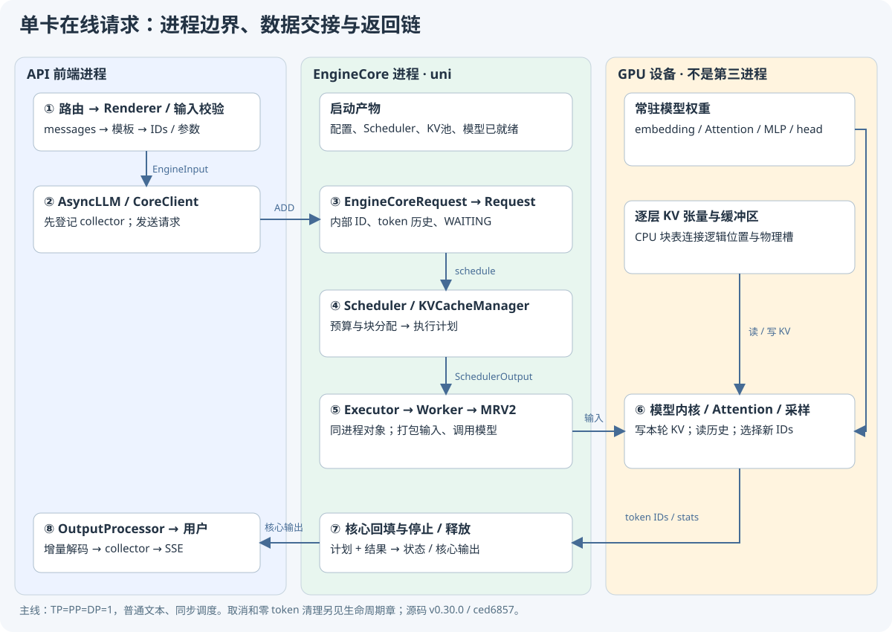
左边叫前端。它把用户请求整理成模型输入，并把生成编号解码成文本。中间的 EngineCore 是引擎核心，决定本轮安排哪些请求、各算多少 token。右边的 GPU 保存权重和历史 KV，并执行模型算子。
中间还会看到 Executor、Worker 和 Model Runner。可以先按工作记：Executor 负责调用执行端，Worker 管理设备，Model Runner 把本轮计划变成 GPU 所需的输入。在本书的单卡 uni 路径中，它们是核心进程里的对象。
有一点请现在就分清：CPU 上的“物理块 7”是地址和所有权记录；GPU 上的块 7 里才存着具体 K/V 数值。就像知道一个数组的下标，并不等于已经算出了该位置的值。
1.4 同一条请求怎样走完
现在用 A 来串起这三个位置。前端先把“小猫喜欢吃”变成输入编号，送到核心。核心把 A 放进等待队列，再决定这一轮执行它。执行端组织输入，GPU 完成模型计算，采样器选出“鱼”。
结果回来后，核心把“鱼”的编号加进 A 的历史；前端将它显示给用户。只要还没满足停止条件，这个过程就继续。下一轮选出 EOS 后，A 结束，相关状态和空间按各自规则清理。
这就是后面所有章节共同追踪的过程。英文类名会逐个出场，我们会在它出现时解释职责，并指出它接过什么、交出什么。
同样的核心也能用于离线生成。LLM.generate 提交输入后，持续推进引擎，等完成再汇总结果。在线多了 HTTP 与流式输出，但两者可以共享调度、缓存和模型执行部分。
把这一步对应到源码UniProcExecutor._init_executor
想确认单卡执行端在哪里创建，可以打开这里。先找 WorkerWrapperBase，再看设备初始化和模型加载的顺序。
vllm/v1/executor/uniproc_executor.py · L52–L75 · 固定 commit
在这里展开真实代码选段
本卡片展示完整符号范围。
52 def _init_executor(self) -> None:
53 """Initialize the worker and load the model."""
54 self.driver_worker = WorkerWrapperBase(rpc_rank=0)
55 distributed_init_method, rank, local_rank = self._distributed_args()
56 kwargs = dict(
57 vllm_config=self.vllm_config,
58 local_rank=local_rank,
59 rank=rank,
60 distributed_init_method=distributed_init_method,
61 is_driver_worker=True,
62 shared_worker_lock=Lock(),
63 )
64
65 # Set net device env vars for the worker if VLLM_GPU_NIC_PCIE_MAPPING is set
66 set_worker_net_device(local_rank, self.vllm_config)
67
68 self.driver_worker.init_worker(all_kwargs=[kwargs])
69 self.driver_worker.init_device()
70
71 if envs.VLLM_ELASTIC_EP_SCALE_UP_LAUNCH:
72 self.driver_worker.elastic_ep_execute("load_model")
73 else:
74 self.driver_worker.load_model()
75 current_platform.update_block_size_for_backend(self.vllm_config)把这一步对应到源码EngineCoreClient.make_client
想确认是否跨进程，可以看这里如何按 multiprocess_mode 与 asyncio_mode 选择客户端。第 6 章再把消息路径展开。
vllm/v1/engine/core_client.py · L90–L129 · 固定 commit
在这里展开真实代码选段
这里只展示 L90–L115；完整函数至 L129，请打开本地源码阅读全部分支。
90 @staticmethod
91 def make_client(
92 multiprocess_mode: bool,
93 asyncio_mode: bool,
94 vllm_config: VllmConfig,
95 executor_class: type[Executor],
96 log_stats: bool,
97 renderer: BaseRenderer | None = None,
98 ) -> "EngineCoreClient":
99 # renderer is passed through to the multiprocess clients, which start
100 # the frontend MM warmup (renderer.start_mm_warmup_in_background) once
101 # the engine-core processes have been forked, so warmup overlaps
102 # engine-core load without a live thread at fork() time. In-process
103 # clients do not take a renderer: the engine core is built in this
104 # process, so there is no other process to overlap with and the MM
105 # warmup runs synchronously inside renderer.warmup() instead.
106 # TODO: support this for debugging purposes.
107 if asyncio_mode and not multiprocess_mode:
108 raise NotImplementedError(
109 "Running EngineCore in asyncio without multiprocessing "
110 "is not currently supported."
111 )
112
113 if multiprocess_mode and asyncio_mode:
114 return EngineCoreClient.make_async_mp_client(
115 vllm_config,1.5 先看见过程，再读代码
第一次阅读，可以先点击页顶“CPU 实验与网页演示”，打开请求的逐步演示。把 A 从提交看到结束，暂时只观察输入、输出和状态如何变化。
希望在终端重新计算时，在本目录执行：
python labs/run.py trace程序会用固定的微型 Transformer 权重执行前向，选出鱼 8、EOS 1，并输出教学状态账本。模型数值来自实际训练结果；调度部分是为了说明机制而写的模拟。真正的 vLLM/A100 实验留到第 21 章。
源码固定为 v0.30.0 / ced6857。先走单卡、普通文本、同步调度、eager 执行；异步、多卡等特性随后加入。完整提交身份和快照边界放在第 3 章，查资料时再展开即可。
先分清模型、请求管理和 GPU 执行。后面的所有类名，都可以放回这三种工作中。
理解检查 · 为什么可以更换推理框架而继续使用同一份模型权重？
权重规定模型函数；推理框架安排计算、内存和输出。兼容实现应保持数学语义，但精度、量化、采样与后端可能影响数值，不能因此承诺逐位相同。
理解检查 · 单卡在线服务中，是否一定有“API、EngineCore、GPU Worker”三个独立进程？
不一定。本书单卡 uni 路径中的 Worker 是核心进程内的对象。GPU 是设备，不是一个 Python 进程；多卡和其他执行器会改变进程边界。
理解检查 · 用一句话区分块号和 KV 内容。
块号告诉系统数据放在哪里、由谁使用；KV 内容是模型算子写到那个位置的实际数值。
下一章先解决一个读源码时常见的疑问：为什么请求已经发出，Python 代码却还能接着做别的事？
回看本章的目标与输入输出
能把“模型算答案”和“系统安排计算”分开，知道一条请求大致要经过哪些地方。
本章交接
带着什么来：模型与 GPU 的基本概念
本章怎样处理：划分模型、服务和执行器职责
交给下一步：一张有进程/设备边界的最小图
一、建立共同语言 · 02
请求发出后，代码为什么还能往下走
这一章，从一个问题开始请求已经提交，结果还没回来，Python 代码为什么还能继续？
2.1 “拿到答案”和“拿到一个等待结果的对象”
先看两种调用方式。第一种等全部文本生成完，再拿到最终结果。第二种允许你先拿到“鱼”，稍后继续接收更多输出。它们最终都可能使用同一个模型，但调用者接收结果的方式不同。
普通函数调用会返回一个值。异步生成器则可以分次产生值：每次执行到 yield，交出当前结果，之后还可以继续。调用者用 async for 逐次接收。AsyncLLM.generate 就属于后一种。
因此，看到 generate 这个名字时，先别猜它“一次返回什么”。要看它是普通函数、协程，还是异步生成器。这个判断会决定你应该怎样调用它、怎样处理结束与取消。
把这一步对应到源码AsyncLLM.generate
先在完整函数中找 yield。然后只追 add_request → 等待 collector → yield → finished 判断这条普通生成路径。
vllm/v1/engine/async_llm.py · L638–L762 · 固定 commit
在这里展开真实代码选段
这里只展示 L638–L663；完整函数至 L762，请打开本地源码阅读全部分支。
638 async def generate(
639 self,
640 prompt: EngineCoreRequest
641 | PromptType
642 | EngineInput
643 | AsyncGenerator[StreamingInput, None],
644 sampling_params: SamplingParams,
645 request_id: str,
646 *,
647 prompt_text: str | None = None,
648 lora_request: LoRARequest | None = None,
649 tokenization_kwargs: dict[str, Any] | None = None,
650 trace_headers: Mapping[str, str] | None = None,
651 priority: int = 0,
652 data_parallel_rank: int | None = None,
653 session_id: str | None = None,
654 reasoning_ended: bool | None = None,
655 reasoning_parser_kwargs: dict[str, Any] | None = None,
656 ) -> AsyncGenerator[RequestOutput, None]:
657 """
658 Main function called by the API server to kick off a request
659 * 1) Making an AsyncStream corresponding to the Request.
660 * 2) Processing the Input.
661 * 3) Adding the Request to the Detokenizer.
662 * 4) Adding the Request to the EngineCore (separate process).
663 2.2 await 等待的是什么
假设 A 已经提交，前端暂时没有收到它的输出。前端可以 await 一个等待结果的对象，并在这段时间让事件循环处理其他连接。数据到达后，原任务再继续。
这里的 await 只说明“等待这个对象”。它可能等待队列、网络或线程结果。要判断 GPU 是否完成，还得继续看这个等待对象是由谁完成的。
同样，async 不会自动创建一个新进程。一个进程可以在事件循环里交错处理许多等待中的任务；而两个进程拥有不同的内存空间。这两个层次应分别画在图上。
停一下，自己想一想代码里出现 await，能直接在旁边写“GPU 已完成”吗？
还不能。先追到被等待的对象：它可能只是发送请求成功，也可能代表一轮执行结果可用。只有具体协议才能告诉你完成边界在哪里。
2.3 Future：先保存结果的接收凭据
核心可能先提交一轮执行，取得一个 Future，再在稍后取结果。你可以先把 Future 理解成“用于接收这次结果的对象”：提交工作时，实际结果可能尚未准备好。
代码中的 future.result() 会取得它的结果；如果尚未完成，这个调用可能等待。允许重叠的配置可以利用这段间隔继续准备其他工作。后面讲异步调度时，我们会检查哪些工作独立、哪些仍依赖前一轮结果。
还有一个容易误读的返回值。某些执行路径将模型前向和采样拆开：execute_model 完成前向后可以返回 None，核心再调用 sample_tokens。这里的 None 有明确的协议含义，应结合下一句一起读。
2.4 发一份消息，不是共享同一个对象
前端把 A 整理成 EngineCoreRequest，发到核心。核心据此建立自己的 Request。可以把它想成两份各有用途的记录：前端负责接收和输出，核心负责安排计算。
核心把某个计数加一，前端的计数不会自动跟着变化。更新需要通过后续消息传回。因此，每份消息都要带请求身份，系统才知道结果属于 A，而不是同时运行的 B。
输入处理器还区分外部 ID 与内部 ID，默认会给内部 ID 加随机后缀。本书的 A/B/C 是便于讲解的别名；查真实日志时，应核对这两个 ID 如何对应。
把这一步对应到源码InputProcessor.assign_request_id
找出 external_req_id 保存在哪里，内部 request_id 怎样生成。先掌握身份对应，不必记随机后缀的具体字符。
vllm/v1/engine/input_processor.py · L261–L279 · 固定 commit
在这里展开真实代码选段
本卡片展示完整符号范围。
261 @staticmethod
262 def assign_request_id(request: EngineCoreRequest):
263 """Replace the externally supplied request ID with an internal request ID
264 that adds 8 random characters in order to ensure uniqueness.
265 """
266 if request.external_req_id is not None:
267 raise ValueError(
268 "The external_req_id field should not be set on EngineCoreRequests"
269 " passed to vLLM; use the request_id field."
270 )
271 request.external_req_id = request.request_id
272 if envs.VLLM_DISABLE_REQUEST_ID_RANDOMIZATION:
273 logger.warning_once(
274 "VLLM_DISABLE_REQUEST_ID_RANDOMIZATION is set and will be "
275 "removed in a future release. Duplicate externally-provided "
276 "request IDs may cause failures and/or subtle correctness errors."
277 )
278 else:
279 request.request_id = f"{request.external_req_id}-{random_uuid():.8}"2.5 谁创建状态，谁负责清理
考虑一个具体时刻：A 已经发给 GPU，用户却关闭了连接。前端可以结束输出，但 GPU 上已提交的工作仍可能在执行。
此时，核心的请求记录、KV 块引用、Worker 的持久请求行，都需要各自清理。尤其是 KV 内存：如果旧工作还在写，就不能立刻把它交给另一条请求覆盖。第 16–17 章会解释用于判断安全时机的序号。
提交时也有类似的先后约束。前端需要先登记 A 的输出接收状态，再把 A 发给核心。否则，核心回得很快，前端却还不知道把结果交给谁。
把这一步对应到源码AsyncLLM._add_request
对照两句关键调用：先 OutputProcessor.add_request，再 engine_core.add_request_async。试着解释交换它们会出现什么时序问题。
vllm/v1/engine/async_llm.py · L507–L527 · 固定 commit
在这里展开真实代码选段
本卡片展示完整符号范围。
507 async def _add_request(
508 self,
509 request: EngineCoreRequest,
510 prompt: str | None,
511 parent_req: ParentRequest | None,
512 index: int,
513 queue: RequestOutputCollector,
514 ):
515 if parent_req is None and not self.output_processor.has_request(
516 request.request_id
517 ):
518 self.check_admission(request_id=request.request_id)
519
520 # Register locally before the first await so concurrent tasks see this request.
521 self.output_processor.add_request(request, prompt, parent_req, index, queue)
522
523 # Add the EngineCoreRequest to EngineCore (separate process).
524 await self.engine_core.add_request_async(request)
525
526 if self.log_requests:
527 logger.info("Added request %s.", request.request_id)2.6 用四个问题做阅读笔记
以后每遇到一个函数，先写下：谁调用它？给了什么？它改了谁的状态？结果交给谁？遇到 await、yield、Future 和消息发送，再补一句“这里等待或跨越了什么边界”。
这些问题比逐字翻译语法更有用。它们会让一个长函数逐渐变成可追踪的数据流，而不是需要硬背的名字清单。
每看到一次返回，先判断拿到的是最终值、接收未来结果的对象，还是一段可逐次消费的生成流。
理解检查 · await 是否等于“等待 GPU 全部完成”？
不等于。它等待某个可等待对象；是否对应 GPU 完成，取决于这个对象具体代表什么。
理解检查 · 为什么前端与核心要靠带 ID 的消息交换状态？
多进程内存分离，两侧记录也有不同用途。ID 让系统能将输入、结果和原用户关联起来。
理解检查 · finished=True 后仍出现清理动作，是否一定是泄漏？
不一定。结束输出、处理在途结果、归还 KV 和清理 Worker 状态可能分阶段完成。要看安全时机之后资源是否回收。
现在已经能分清调用、等待和消息。下一章就带着这几个问题，走进固定版本的仓库。
回看本章的目标与输入输出
能区分普通返回、异步生成、Future 和进程消息，知道一次“返回”到底意味着什么。
本章交接
带着什么来：上一章的跨层箭头
本章怎样处理：辨认 await、yield、Future、消息及所有权
交给下一步：能判断每条箭头的执行/等待方式
一、建立共同语言 · 03
带着一个问题走进仓库
这一章，从一个问题开始面对几千个文件，今天到底应该先打开哪一个？
3.1 今天只追一个问题
打开仓库时，不妨先问：“调用 LLM.generate 后，是谁让模型一轮一轮生成的？”
这个问题给了我们起点和终点。起点是用户接口，终点是推动引擎的循环。第一遍只把两者接起来，遇到量化、多模态或投机分支时，先记下它的入口，之后再研究。
这样读，你每走一步都有理由。一次阅读结束时，也能用“我找到哪段输入经过哪段处理，到了哪里”描述收获。
把这一步对应到源码LLM.generate
从用户接口开始，找到它委托给 _run_completion 的位置。然后沿继承进入 OfflineInferenceMixin。
vllm/entrypoints/llm.py · L418–L481 · 固定 commit
在这里展开真实代码选段
这里只展示 L418–L443；完整函数至 L481，请打开本地源码阅读全部分支。
418 def generate(
419 self,
420 prompts: PromptType | Sequence[PromptType],
421 sampling_params: SamplingParams | Sequence[SamplingParams] | None = None,
422 *,
423 use_tqdm: bool | Callable[..., tqdm] = True,
424 lora_request: Sequence[LoRARequest] | LoRARequest | None = None,
425 priority: list[int] | None = None,
426 tokenization_kwargs: dict[str, Any] | None = None,
427 mm_processor_kwargs: dict[str, Any] | None = None,
428 ) -> list[RequestOutput]:
429 """Generates the completions for the input prompts.
430
431 This class automatically batches the given prompts, considering
432 the memory constraint. For the best performance, put all of your prompts
433 into a single list and pass it to this method.
434
435 Args:
436 prompts: The prompts to the LLM. You may pass a sequence of prompts
437 for batch inference. See [PromptType][vllm.inputs.PromptType]
438 for more details about the format of each prompt.
439 sampling_params: The sampling parameters for text generation. If
440 None, we use the default sampling parameters.
441 When it is a single value, it is applied to every prompt.
442 When it is a list, the list must have the same length as the
443 prompts and it is paired one by one with the prompt.把这一步对应到源码OfflineInferenceMixin._run_engine
找 while 循环、llm_engine.step 和完成结果收集。这个循环回答了“谁持续推进生成”。
vllm/entrypoints/offline_utils.py · L581–L634 · 固定 commit
在这里展开真实代码选段
这里只展示 L581–L606；完整函数至 L634，请打开本地源码阅读全部分支。
581 def _run_engine(
582 self,
583 output_type: type[_O] | tuple[type[_O], ...],
584 *,
585 use_tqdm: bool | Callable[..., tqdm] = True,
586 ) -> list[_O]:
587 # Initialize tqdm.
588 if use_tqdm:
589 num_requests = self.llm_engine.get_num_unfinished_requests()
590 tqdm_func = use_tqdm if callable(use_tqdm) else tqdm
591 pbar = tqdm_func(
592 total=num_requests,
593 desc="Processed prompts",
594 dynamic_ncols=True,
595 postfix=(f"est. speed input: {0:.2f} toks/s, output: {0:.2f} toks/s"),
596 )
597
598 # Run the engine.
599 outputs: list[_O] = []
600 total_in_toks = 0
601 total_out_toks = 0
602 while self.llm_engine.has_unfinished_requests():
603 step_outputs = self.llm_engine.step()
604 for output in step_outputs:
605 assert isinstance(output, output_type)
606 if output.finished:3.2 为什么一本教材要固定 commit
如果你打开的仓库已经更新，文件可能移动，函数也可能改名。即便两份代码都写着 vLLM，它们也未必具有同一条调用路径。
所以，本书采用 v0.30.0，完整提交为 ced6857afa0ea7b2e3f0846a62e1394e90f15607。每个源码入口都带这个固定版本的路径和行号。你能用本地页面核对，也能打开官方永久链接。
行号只是帮助定位，真正要掌握的是职责和数据流。将来升级版本，应重新寻找相同职责，再比较行为；不必因为行号变了就从头重学系统。
本目录保留 123 个选择性源码、文档与测试文件，原始 LICENSE 也一并保存。它适合阅读，完整开发仍需官方 checkout 和相应依赖。文件身份与符号范围见 _research/source-manifest.json 和 source-index.json。
3.3 把目录当作路标
先按“我现在要回答什么”选择目录。下面的表用于查路，第一遍不用背下来。
| 你正在问的问题 | 先去这里 | 常见内容 |
|---|---|---|
| 文本怎样进入服务？ | vllm/entrypoints/ | 用户 API、HTTP、渲染 |
| 这个选项改变什么？ | vllm/config/ | 配置与兼容性 |
| 请求怎样跨进程，谁推进一轮？ | vllm/v1/engine/ | 客户端、核心循环、输入输出 |
| 本轮算谁，KV 放哪里？ | vllm/v1/core/ | 调度与缓存管理 |
| 计划怎样变成 GPU 输入？ | vllm/v1/worker/ | Worker、Runner、采样 |
| 矩阵怎样经过模型？ | vllm/model_executor/ | 模型、权重、并行线性层 |
| Attention 用哪个实现？ | vllm/v1/attention/ | 后端与元数据 |
| 怎样确认边界行为正确？ | tests/、docs/design/ | 测试与设计解释 |
阅读 GPU 路径时，还要区分两个名字：V1 引擎与 Model Runner V1。引擎的目录叫 v1，但它可以根据配置选择 Model Runner V2。本书会明确标注 Runner，避免把两代实现拼成一条调用链。
3.4 当你在旧路径里找不到代码
本版本的 entrypoints/openai/api_server.py 主要负责兼容性重导出。真正的在线启动逻辑需要继续到 entrypoints/launchers/api_server/entry.py；聊天路由则在 chat_completion/api_router.py。
离线接口也有类似情况。LLM.generate 出现在 llm.py，循环却在它继承的 OfflineInferenceMixin 中。若只在一个文件里搜索，就会觉得代码“突然消失了”。
遇到这种情况，顺着 import、继承、工厂或注册表多走一步。每次记下一条实际调用边，会比根据文件名猜实现可靠。
停一下，自己想一想搜到了两个都叫 step 的函数，怎么判断先读哪个？
先看调用者。LLMEngine.step 对接核心客户端和前端输出处理；EngineCore.step 在核心侧安排并执行一轮。它们处于不同层，需要通过调用与结果关系接起来。
3.5 读完一次来回
找到被调用的函数后，别停在 return。再回到调用者，看看它怎样消费返回值。许多重要含义就藏在这里：None 是否触发下一步采样？某个列表是否送去 abort？一个计数是否用来判断还要不要继续循环？
这就是我们反复采用的阅读单位：输入如何构造，函数怎样处理，结果接着去了哪里。对照这一来回，再读异常和特殊分支，就有了可以依附的骨架。
3.6 做一次小练习
在本目录执行下列命令，它们只打印源码，不导入 vLLM，也不启动 GPU：
python labs/run.py source llm LLMEngine.step
python labs/run.py source core EngineCore.step给两段代码各写一句话：它接过什么，交出什么。完整解释会在第 8 章出现，现在先保留自己的判断。
希望检查教材文件和引用是否完整时，还可以执行：
python _tools/verify_textbook.py --static带一个问题进去，沿调用读完一次来回。目录与行号帮助定位，输入、状态和输出帮助理解。
理解检查 · 为什么本书固定 commit？
让路径、符号和行为可复查。main 会持续变化；研究新版本时，应重新定位并比较相关实现。
理解检查 · vllm/v1/ 目录是否保证使用 gpu_model_runner.py？
不保证。V1 引擎内有两代 Runner，实际选择由配置决定。本书普通支持路径主要阅读 gpu/model_runner.py。
理解检查 · 从一个新函数里出来后，还要回到哪里？
回到调用者，查看返回值怎样被消费；只有这一来回接上，才知道这个函数在系统里的实际作用。
下一章从真正的起点读起：请求还没到，系统需要先准备什么，才能让模型开始工作？
回看本章的目标与输入输出
能从用户接口找到核心执行，知道源码坐标为什么要固定，以及怎样读完一次调用的来回。
本章交接
带着什么来：已知的职责层与执行语义
本章怎样处理：固定 commit，定位入口、工厂与继承
交给下一步：可复查的源码坐标与阅读闭环
二、让一条请求跑起来 · 04
请求还没来，启动阶段在忙什么
这一章，从一个问题开始用户还没发送请求，GPU 为什么已经占用了显存？
4.1 先把问题放在请求之前
你在 A100 服务器上启动服务。终端开始打印配置、模型加载、内存检查和预热信息，但此时还没有用户发来一句话。GPU 为什么已经占用了显存？
原因是一次生成需要的资源，许多都可以提前准备。模型权重要先加载到设备，保存历史 K/V 的空间要先规划，执行器也要知道怎样把计划交给 GPU。准备完成后，请求才可以进入正常的计算过程。
我们先列出四件事：确定运行方式，加载模型，决定 KV 容量，准备执行路径。下面沿这四件事逐个往下走。
4.2 先把“怎么运行”写清楚
假设我们选一个普通文本模型，只用一张 GPU，并先关闭异步调度和 CUDA Graph。这些选择会被整理到配置里。
源码中的 EngineArgs/AsyncEngineArgs 接收启动参数，再生成 VllmConfig。你可以把 VllmConfig 看作各组件共同使用的运行说明：模型是什么，长度上限多大，怎样并行，每轮允许多少工作，使用什么缓存和执行方式。
因此，一个选项可能影响多处。例如开启多卡不仅改一个数字，还会改变执行器、通信组和权重分布。当前先保持单卡，等第 19 章再改变这一条件。
配置生成后，AsyncLLM 创建前端处理组件和核心客户端；核心侧创建 EngineCore。EngineCore 再构造 Executor，让它准备执行端。先记住这条因果关系：配置先确定可选路径，对象再按配置创建。
把这一步对应到源码build_async_engine_client_from_engine_args
先找 create_engine_config，再找 AsyncLLM.from_vllm_config。这里把“启动参数”交给了“运行中的引擎”。
vllm/entrypoints/launchers/api_server/entry.py · L66–L112 · 固定 commit
在这里展开真实代码选段
这里只展示 L66–L91；完整函数至 L112，请打开本地源码阅读全部分支。
66 @asynccontextmanager
67 async def build_async_engine_client_from_engine_args(
68 engine_args: AsyncEngineArgs,
69 *,
70 usage_context: UsageContext = UsageContext.OPENAI_API_SERVER,
71 client_config: dict[str, Any] | None = None,
72 ) -> AsyncIterator[EngineClient]:
73 """
74 Create EngineClient, either:
75 - in-process using the AsyncLLMEngine Directly
76 - multiprocess using AsyncLLMEngine RPC
77
78 Returns the Client or None if the creation failed.
79 """
80
81 # Create the EngineConfig (determines if we can use V1).
82 vllm_config = engine_args.create_engine_config(usage_context=usage_context)
83
84 from vllm.v1.engine.async_llm import AsyncLLM
85
86 async_llm: AsyncLLM | None = None
87
88 # Don't mutate the input client_config
89 client_config = dict(client_config) if client_config else {}
90 client_count = client_config.pop("client_count", 1)
91 client_index = client_config.pop("client_index", 0)把这一步对应到源码EngineCore.__init__
只追三个创建动作：Executor、KV 初始化、Scheduler。其他特性先标在旁边；这几步是启动时执行，不是每条请求都重做。
vllm/v1/engine/core.py · L108–L251 · 固定 commit
在这里展开真实代码选段
这里只展示 L108–L133；完整函数至 L251，请打开本地源码阅读全部分支。
108 def __init__(
109 self,
110 vllm_config: VllmConfig,
111 executor_class: type[Executor],
112 log_stats: bool,
113 executor_fail_callback: Callable | None = None,
114 include_finished_set: bool = False,
115 ):
116 # plugins need to be loaded at the engine/scheduler level too
117 from vllm.plugins import load_general_plugins
118
119 load_general_plugins()
120
121 self.vllm_config = vllm_config
122 if not vllm_config.parallel_config.data_parallel_rank_local:
123 logger.info(
124 "Initializing a V1 LLM engine (v%s) with config: %s",
125 VLLM_VERSION,
126 vllm_config,
127 )
128
129 self.log_stats = log_stats
130 # Opaque weight version supplied by the caller.
131 self._weight_version = "default"
132
133 # Setup Model.4.3 模型代码与模型权重，分别提供什么
现在需要加载模型。这里有两份东西：模型实现代码规定如何计算；checkpoint 里的权重提供矩阵的具体数值。
例如，Qwen3ForCausalLM 描述隐藏状态如何经过模型，以及怎样得到词表分数。权重加载器把保存的张量对应到这些参数中。模型配置里的 architecture 帮助 ModelRegistry 找到相应实现类。
加载完成后，权重通常会留在 GPU 中，供后续请求反复使用。一条请求进入时，系统主要准备它自己的输入、激活和 KV；无需把同一套权重从磁盘重新加载一遍。
推理也不会在每条请求后执行 backward 和 optimizer.step。训练已经确定了参数。之后增加的 KV 是这次请求的中间结果，并不是对模型进行了新的训练。
把这一步对应到源码_ModelRegistry.resolve_model_cls
看输入的架构名称如何被解析为实现类。此处回答“调用哪份模型代码”，具体张量加载由后续加载器负责。
vllm/model_executor/models/registry.py · L1371–L1423 · 固定 commit
在这里展开真实代码选段
这里只展示 L1371–L1396；完整函数至 L1423，请打开本地源码阅读全部分支。
1371 def resolve_model_cls(
1372 self,
1373 architectures: str | list[str],
1374 model_config: ModelConfig,
1375 ) -> tuple[type[nn.Module], str]:
1376 if isinstance(architectures, str):
1377 architectures = [architectures]
1378 if not architectures:
1379 raise ValueError("No model architectures are specified")
1380
1381 # Require transformers impl
1382 if model_config.model_impl == "transformers":
1383 arch = self._try_resolve_transformers(architectures[0], model_config)
1384 if arch is not None:
1385 model_cls = self._try_load_model_cls(arch)
1386 if model_cls is not None:
1387 return (model_cls, arch)
1388 elif model_config.model_impl == "terratorch":
1389 arch = "Terratorch"
1390 model_cls = self._try_load_model_cls(arch)
1391 if model_cls is not None:
1392 return (model_cls, arch)
1393
1394 # Fallback to transformers impl (after resolving convert_type)
1395 if (
1396 all(arch not in self.models for arch in architectures)4.4 还有多少显存可以留给 KV
权重就位后，不能把剩余显存全部算成 KV 容量。模型运行时还需要激活、临时工作区，其他库和图执行也可能占用空间。
Worker 会通过 profiling，也就是执行一段用于估计资源需求的过程，观察有关开销，再结合显存预算计算 KV 可用空间。若设置显式 kv_cache_memory_bytes，则按对应分支处理。具体扣除项应对照源码和启动日志。
这里先做一个纸面例子。假设普通 Dense/GQA 模型有 32 层、8 个 KV 头，每头 128 维，KV 使用 BF16，每个元素 2 字节。一个 token 的 KV 大小可以这样一步步数：
| 先算哪部分 | 计算 | 得到什么 |
|---|---|---|
| 某层的一个 K 头 | 128 × 2 字节 | 256 字节 |
| 某层全部 8 个 K 头 | 256 × 8 | 2048 字节 |
| 同层还要保存 V | 2048 × 2 | 4096 字节，即 4 KiB |
| 共有 32 层 | 4096 × 32 | 131072 字节，即 128 KiB/token |
于是得到常见公式：每 token KV 字节数 ≈ 2 × L × H_kv × d_head × 元素字节数。前面的 2 表示 K 和 V 两份；L 表示层数。这里使用 KV 头数，而不是不加区分地使用查询头数。
如果一个块保存 16 个 token，它约为 16 × 128 KiB = 2 MiB。假设真正留给 KV 的预算是 20 GiB，那么理想化块数为 20 × 1024 / 2 = 10240。
20 GiB 是假设预算，不是你的 A100 实测值。真实布局还有分组、对齐、复制和特殊模型状态等约束。先用简单公式理解数量级，再回到实际规格。
把这一步对应到源码Worker.determine_available_memory
对照显式字节预算与 profiling 两条路径，找出哪些内存开销会影响 KV 预算。
vllm/v1/worker/gpu_worker.py · L527–L688 · 固定 commit
在这里展开真实代码选段
这里只展示 L527–L552；完整函数至 L688，请打开本地源码阅读全部分支。
527 @torch.inference_mode()
528 def determine_available_memory(self) -> int:
529 """Profiles the peak memory usage of the model to determine how much
530 memory can be used for KV cache without OOMs.
531
532 The engine will first conduct a profiling of the existing memory usage.
533 Then, it calculates the free memory that can be used for KV cache in
534 bytes.
535
536 Tip:
537 You may limit the usage of GPU memory
538 by adjusting the `gpu_memory_utilization` parameter.
539 """
540 maybe_apply_startup_plan(self)
541
542 if kv_cache_memory_bytes := self.cache_config.kv_cache_memory_bytes:
543 # still need a profile run which compiles the model for
544 # max_num_batched_tokens
545 self.model_runner.profile_run()
546
547 msg = (
548 f"Initial free memory {format_gib(self.init_snapshot.free_memory)} "
549 f"GiB, reserved {format_gib(kv_cache_memory_bytes)} GiB memory for "
550 "KV Cache as specified by kv_cache_memory_bytes config and "
551 "skipped memory profiling. This does not respect the "
552 "gpu_memory_utilization config. Only use kv_cache_memory_bytes "4.5 分配空间，还没有算出 KV
得到块数以后，系统可以初始化 GPU 上的缓存存储，同时在 CPU 上建立可用块的管理记录。此时有了“以后可以往哪里写”的空间，A 的具体 K/V 却还不存在：A 甚至还没有提交。
等 A 到达并被调度，模型才会计算它的 K/V，再写到分配给它的位置。所以，启动时分配缓存、调度时分配请求使用权、执行时写入数值，是三件前后关联的事。
另外三个上限也容易混淆，先用问题记住它们：
| 你想知道什么 | 对应配置 |
|---|---|
| 一条序列总共允许多长？ | max_model_len |
| 最多同时运行多少请求？ | max_num_seqs |
| 一次调度安排多少 token 工作量？ | max_num_batched_tokens |
它们共同约束服务，但都不能单独等同于 KV 总容量。第 9–10 章会用具体请求把这些限制放到同一轮计划里。
把这一步对应到源码EngineCore._initialize_kv_caches
沿“规格 → 内存预算 → 缓存配置 → 初始化与预热”阅读。返回时，后续调度需要的容量与执行端存储才接上。
vllm/v1/engine/core.py · L253–L383 · 固定 commit
在这里展开真实代码选段
这里只展示 L253–L278；完整函数至 L383，请打开本地源码阅读全部分支。
253 @instrument(span_name="Prepare model")
254 def _initialize_kv_caches(self, vllm_config: VllmConfig) -> KVCacheConfig:
255 start = time.time()
256
257 # register all kvcache specs in enginecore process.
258 register_all_kvcache_specs(vllm_config)
259
260 # Get all kv cache needed by the model
261 kv_cache_specs = self.model_executor.get_kv_cache_specs()
262
263 # Some layers (e.g. Prefix LM attention) run non-causally and tag their
264 # KV cache spec with ``non_causal=True``. The specs are collected here in
265 # the engine-core process (the same process that builds the scheduler),
266 # so this is the multiproc-safe place to translate that layer-level
267 # signal into a scheduling policy: chunked prefill and prefix caching
268 # both assume causal attention and would corrupt non-causal prefill.
269 if any(
270 getattr(spec, "non_causal", False)
271 for worker_specs in kv_cache_specs
272 for spec in worker_specs.values()
273 ):
274 if vllm_config.scheduler_config.enable_chunked_prefill:
275 logger.info(
276 "Disabling chunked prefill: model has non-causal attention layers."
277 )
278 vllm_config.scheduler_config.enable_chunked_prefill = False4.6 再走一次执行路径
最后还有 Runner 选择、编译或预热等准备。Runner 是组织模型执行的组件；本版本可选择两代实现。本书主要阅读支持条件满足时的 MRV2。实际使用哪代，应核对配置和日志。
预热可以提前走过某些计算路径；允许 CUDA Graph 时，还可能捕获适合重放的执行结构。本书先用 eager 路径，也就是先按普通调用方式执行，等基本流程清楚后，再单独比较图执行。
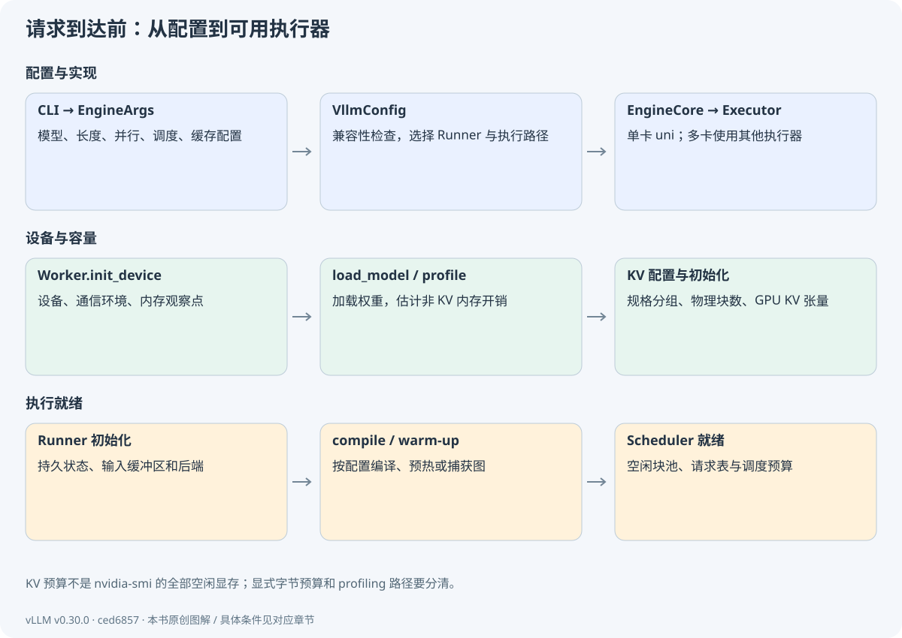
现在回到开头的问题。还没有请求，显存里也可能已经有权重和预分配缓存，这是启动准备的结果。服务就绪意味着：模型已加载，KV 容量已确定，执行端与调度器已经可以配合工作。
下一条请求到达时，这些常驻资源会被复用；新增的是这条请求的内容和状态。
停一下，自己想一想此刻能不能在 KV 缓存里读到“小猫喜欢吃”的历史？
不能。存储空间已经准备好，但这条请求的 K/V 还需要在它提交、被调度并完成模型计算后才有效。
启动先准备常驻权重、KV 容量与执行路径；某条请求的具体 K/V，仍要等它执行后才产生。
理解检查 · 增大 max_model_len，是否表示每条请求立刻占用该长度的全部 KV？
普通分页缓存通常按使用进度分配，但准入预留、特殊模型和配置还会影响容量约束。因此长度上限本身不能直接当作每请求实际占用。
理解检查 · 32 层、8 KV 头、128 维、BF16 的普通 KV，每 token 占多少？
先算一层 K：8×128×2=2048 字节；K/V 两份为 4096；32 层共 131072 字节，即 128 KiB。
理解检查 · 第一条请求很慢，为什么还要区分启动准备与稳态执行？
首次请求可能触发尚未覆盖的编译、预热或传输，也包含外部排队等成本。先确认时间发生在哪个阶段，才能判断该优化哪里。
资源已经准备好了。下一章让 A 真正到达，观察一句文本怎样被整理成核心能处理的输入。
回看本章的目标与输入输出
能解释配置、权重、KV 容量和预热怎样接起来，知道“服务就绪”究竟准备好了什么。
本章交接
带着什么来：用户给出的模型/硬件/运行配置
本章怎样处理：选择实现、加载权重、估计内存、初始化 KV
交给下一步：常驻模型与可接收计划的设备执行路径
二、让一条请求跑起来 · 05
文本如何进入引擎
这一章，从一个问题开始你在聊天框输入的那句话，模型最后看到的到底是什么？
上一章已经让服务准备就绪。现在 A 发来“小猫喜欢吃”。前端先处理角色、模板和生成要求，随后才把编号送进引擎。我们先跟着文本走，看看每次变化有没有增加新的信息。
5.1 HTTP 的 messages 不是模型直接输入
聊天请求可能包含 system/user/assistant 消息、工具定义、生成参数和 stream 标志。FastAPI 路由解析协议对象，OpenAIServingChat 检查模型及请求，再调用渲染器。聊天模板把角色边界和必要的控制标记写成模型训练时约定的格式；Tokenizer 再转换为 IDs。
“用户键入三个汉字”不等于“三个 token”。同一句纯文本在不同模板、Tokenizer 或特殊 token 设置下会得到不同 IDs。BPE 等分词规则通常在训练 Tokenizer 时确定，推理时加载已有规则执行编码，不会在每条请求上重建词表。
把这一步对应到源码create_chat_completion
从路由观察完整 JSON 响应与 StreamingResponse 两种返回形式。路由接受请求后，计算仍由后面的引擎负责。
vllm/entrypoints/openai/chat_completion/api_router.py · L41–L80 · 固定 commit
在这里展开真实代码选段
这里只展示 L41–L66；完整函数至 L80，请打开本地源码阅读全部分支。
41 @router.post(
42 "/v1/chat/completions",
43 dependencies=[Depends(validate_json_request)],
44 responses={
45 HTTPStatus.OK.value: {"content": {"text/event-stream": {}}},
46 HTTPStatus.BAD_REQUEST.value: {"model": ErrorResponse},
47 HTTPStatus.NOT_FOUND.value: {"model": ErrorResponse},
48 HTTPStatus.INTERNAL_SERVER_ERROR.value: {"model": ErrorResponse},
49 HTTPStatus.NOT_IMPLEMENTED.value: {"model": ErrorResponse},
50 },
51 )
52 @with_cancellation
53 @load_aware_call
54 async def create_chat_completion(request: ChatCompletionRequest, raw_request: Request):
55 metrics_header_format = raw_request.headers.get(
56 ENDPOINT_LOAD_METRICS_FORMAT_HEADER_LABEL, ""
57 )
58 handler = chat(raw_request)
59 if handler is None:
60 raise NotImplementedError("The model does not support Chat Completions API")
61
62 generator = await handler.create_chat_completion(request, raw_request)
63
64 if isinstance(generator, ErrorResponse):
65 return JSONResponse(
66 content=generator.model_dump(), status_code=generator.error.code把这一步对应到源码OpenAIServingChat._create_chat_completion
按 render、参数转换、engine_client.generate、stream/full 分支梳理数据变换。
vllm/entrypoints/openai/chat_completion/serving.py · L258–L415 · 固定 commit
在这里展开真实代码选段
这里只展示 L258–L283；完整函数至 L415，请打开本地源码阅读全部分支。
258 async def _create_chat_completion(
259 self,
260 request: ChatCompletionRequest,
261 raw_request: Request | None = None,
262 ) -> AsyncGenerator[str, None] | ChatCompletionResponse | ErrorResponse:
263 # Streaming response
264 tokenizer = self.renderer.tokenizer
265 assert tokenizer is not None
266 chat_template_kwargs = self._effective_chat_template_kwargs(request)
267 parser: Parser | None = None
268 if self.parser_cls is not None:
269 parser = self.parser_cls(
270 tokenizer,
271 request.tools,
272 chat_template_kwargs=chat_template_kwargs,
273 model_config=self.model_config,
274 )
275 result = await self.render_chat_request(request)
276 if isinstance(result, ErrorResponse):
277 return result
278
279 conversation, engine_inputs = result
280
281 request_id = (
282 f"chatcmpl-{self._base_request_id(raw_request, request.request_id)}"
283 )5.2 渲染与输入处理各负责什么
OnlineRenderer 处理聊天模板、工具和消息表示，得到 conversation 与 EngineInput。InputProcessor 接受已渲染的 EngineInput，完成采样参数/模型能力/长度等校验，补全或克隆参数，并生成 EngineCoreRequest。兼容的原始 Prompt 路径可能在输入处理器中继续渲染；不能据此让所有路径重复分词。
例如 A 的教学路径直接给 token IDs [11,10,7]，跳过真实聊天模板。真实聊天实验则保存 apply_chat_template 后的完整 IDs。两条路径都能研究调度，但只有后者代表你部署模型真正看到的输入。日志里应同时记录模板版本、模型 revision 和采样配置。
把这一步对应到源码OnlineRenderer.render_chat
检查模板与工具相关校验，定位 preprocess_chat，辨认 conversation 与 engine input 两种输出。
vllm/renderers/online_renderer.py · L170–L271 · 固定 commit
在这里展开真实代码选段
这里只展示 L170–L195；完整函数至 L271，请打开本地源码阅读全部分支。
170 async def render_chat(
171 self,
172 request: ChatCompletionRequest,
173 *,
174 skip_mm_cache: bool = False,
175 ) -> tuple[list[ConversationMessage], list[EngineInput]] | ErrorResponse:
176 """Core preprocessing logic for chat requests (no model/engine check).
177
178 Called directly by render_chat_request and delegated to by
179 OpenAIServingChat.render_chat_request after its engine-aware checks.
180
181 Decode-side token reuse (ids forwarded in ``kv_transfer_params``) is
182 handled deeper, in ``preprocess_chat`` / ``_make_request_with_harmony``,
183 so it skips only templating and tokenization while tool-choice
184 validation and ``adjust_request`` still run and the output is
185 detokenized (text-out).
186 """
187 tokenizer = self.renderer.tokenizer
188
189 tool_parser = self.parser.tool_parser_cls if self.parser is not None else None
190
191 if is_mistral_tokenizer(tokenizer):
192 # because of issues with pydantic we need to potentially
193 # re-serialize the tool_calls field of the request
194 _mt.maybe_serialize_tool_calls(request) # type: ignore[arg-type]
195 _mt.truncate_tool_call_ids(request) # type: ignore[arg-type]把这一步对应到源码InputProcessor.process_inputs
从已经渲染的输入追到 EngineCoreRequest；关注长度、EOS、参数复制和默认 max_tokens 的补全。
vllm/v1/engine/input_processor.py · L281–L438 · 固定 commit
在这里展开真实代码选段
这里只展示 L281–L306；完整函数至 L438，请打开本地源码阅读全部分支。
281 def process_inputs(
282 self,
283 request_id: str,
284 prompt: PromptType | EngineInput,
285 params: SamplingParams | PoolingParams,
286 supported_tasks: tuple[SupportedTask, ...],
287 arrival_time: float | None = None,
288 lora_request: LoRARequest | None = None,
289 tokenization_kwargs: dict[str, Any] | None = None,
290 trace_headers: Mapping[str, str] | None = None,
291 priority: int = 0,
292 data_parallel_rank: int | None = None,
293 resumable: bool = False,
294 session_id: str | None = None,
295 ) -> EngineCoreRequest:
296 self._validate_params(params, supported_tasks)
297 self._validate_lora(lora_request)
298
299 parallel_config = self.vllm_config.parallel_config
300 dp_size = parallel_config.data_parallel_size
301 dp_local_size = parallel_config.data_parallel_size_local
302 num_ranks = dp_local_size if parallel_config.local_engines_only else dp_size
303 if data_parallel_rank is not None and not (0 <= data_parallel_rank < num_ranks):
304 raise VLLMValidationError(
305 f"data_parallel_rank {data_parallel_rank} "
306 f"is out of range [0, {num_ranks})."5.3 请求参数怎样分组
| 参数类别 | 典型内容 | 主要影响位置 |
|---|---|---|
| 输入身份 | request_id、模型、adapter | 路由、状态索引与隔离 |
| 输入内容 | prompt_token_ids、embedding、多模态数据 | 输入处理和模型 |
| 生成规则 | temperature、top_p、max_tokens、stop | 采样与停止 |
| 资源约束 | max_model_len、token/sequence 预算 | 引擎配置与调度 |
| 返回协议 | stream、logprobs | 输出处理和 HTTP |
max_tokens 是允许生成的 token 数上限，不是 prompt 长度；stop 字符串可能跨多个 token；ignore_eos 改变 EOS 的停止含义。这些参数会沿不同路径被消费，不会全部传给 Transformer.forward。
5.4 输入的检查与错误边界
本章结束应能画出 messages → 渲染后的控制文本/结构 → token IDs/EngineInput → EngineCoreRequest。请求因为长度或参数非法而被拒绝时，可能尚未分配 KV，更没有执行一次 GPU 前向。把所有报错都称为模型错误，会使排障方向错位。
练习时先读本地源码，不依赖下载大模型。以后在 A100 上运行同一请求时，保存 tokenizer 输出并与服务日志核对；如果接口返回文本看似合理但你无法说出模型真正收到的 IDs，可以回到这里补一次实际输入检查。
停一下，自己想一想套用了聊天模板以后，还能直接把用户原句的 token 数当作完整输入长度吗？
不能。角色和控制标记等可能增加输入。应检查实际模板输出与编码结果，而不是凭原句长度估计。
保存实际模板与 IDs，才能知道模型真正看到了什么。用户文本、模板结果和核心请求，是不同阶段的表示。
理解检查 · 为什么不能在教材中把真实 Qwen 的“小猫喜欢吃”强行写成 [11,10,7]？
IDs 由特定词表与聊天模板决定。这个序列只属于本书微型教学 Tokenizer，真实模型必须实际编码。
理解检查 · stop="END" 一定对应一个 token ID 吗？
不一定。字符串可能分成多 token，也可能在累计解码文本中跨边界出现，因此需要增量解码器参与停止检测。
理解检查 · 从 HTTP 请求中选出三个不会直接进入模型 forward 的字段。
如 stream、request_id、stop 字符串。它们影响输出协议、身份和终止处理；模型数值输入主要是 IDs/embeddings、位置、KV 和相关元数据。
请求已经合法且有了内部身份。下一章跟踪它如何注册输出接收端、跨进程送入核心。
回看本章的目标与输入输出
终点是 EngineCoreRequest：它不再是 HTTP 对象，而是足够让核心安排推理的结构化输入。
本章交接
带着什么来：已启动服务与 HTTP messages
本章怎样处理：模板、编码、校验、参数整理
交给下一步：EngineInput 与 EngineCoreRequest
二、让一条请求跑起来 · 06
AsyncLLM、客户端与跨进程交接
这一章，从一个问题开始核心返回一个 token 时，系统怎么知道应该发给哪位用户？
假设 A 和 B 几乎同时提交，B 却先算完。返回顺序已经与到达顺序不同。接收端必须靠身份找到各自的等待者，这也解释了为什么“先登记接收状态，再发送请求”的顺序很重要。
6.1 先注册回程，再发送请求
AsyncLLM.add_request 接受输入，经过 InputProcessor 得到内部请求。它创建 RequestOutputCollector，并在 OutputProcessor 中登记该请求。随后 _add_request 通过客户端发送消息。这个顺序保证：即使核心很快返回，也已经存在接收结果的状态。
n>1 的并行候选、pooling 或流式输入会增加父子请求等分支。第一遍只读 n=1 的文本生成，记下哪些分支不进入。主线输出是一个与请求关联的收集器；generate 循环消费它，而不是把核心的全局输出直接交给任意 HTTP 连接。
把这一步对应到源码AsyncLLM.add_request
追踪输入处理、内部 ID、输出收集器及 n=1 主线。返回的 collector 属于前端生命周期。
vllm/v1/engine/async_llm.py · L361–L505 · 固定 commit
在这里展开真实代码选段
这里只展示 L361–L386；完整函数至 L505，请打开本地源码阅读全部分支。
361 async def add_request(
362 self,
363 request_id: str,
364 prompt: EngineCoreRequest
365 | PromptType
366 | EngineInput
367 | AsyncGenerator[StreamingInput, None],
368 params: SamplingParams | PoolingParams,
369 arrival_time: float | None = None,
370 lora_request: LoRARequest | None = None,
371 tokenization_kwargs: dict[str, Any] | None = None,
372 trace_headers: Mapping[str, str] | None = None,
373 priority: int = 0,
374 data_parallel_rank: int | None = None,
375 session_id: str | None = None,
376 prompt_text: str | None = None,
377 reasoning_ended: bool | None = None,
378 reasoning_parser_kwargs: dict[str, Any] | None = None,
379 ) -> RequestOutputCollector:
380 """Add new request to the AsyncLLM."""
381
382 if self.errored:
383 raise EngineDeadError()
384
385 is_pooling = isinstance(params, PoolingParams)
386 把这一步对应到源码AsyncLLM._add_request
在消息发送前注册请求，形成完整回程地址。
vllm/v1/engine/async_llm.py · L507–L527 · 固定 commit
在这里展开真实代码选段
本卡片展示完整符号范围。
507 async def _add_request(
508 self,
509 request: EngineCoreRequest,
510 prompt: str | None,
511 parent_req: ParentRequest | None,
512 index: int,
513 queue: RequestOutputCollector,
514 ):
515 if parent_req is None and not self.output_processor.has_request(
516 request.request_id
517 ):
518 self.check_admission(request_id=request.request_id)
519
520 # Register locally before the first await so concurrent tasks see this request.
521 self.output_processor.add_request(request, prompt, parent_req, index, queue)
522
523 # Add the EngineCoreRequest to EngineCore (separate process).
524 await self.engine_core.add_request_async(request)
525
526 if self.log_requests:
527 logger.info("Added request %s.", request.request_id)6.2 客户端隐藏了传输，但不能忽略传输
EngineCoreClient.make_client 根据同步/异步、多进程设置选择实现。在线异步路径通常通过 AsyncMPClient；ADD 消息包含可序列化的请求。核心输入线程接收后预处理，再把对象送入核心循环处理。
不要把序列化消息理解成“把 Python 指针传给 GPU”。消息跨 CPU 进程边界，核心建立自己的 Request；GPU 输入还需等调度、打包、拷贝与模型执行。远程 KV、共享内存与 tensor 通道有额外优化，但不能抹去逻辑边界。
把这一步对应到源码AsyncMPClient.add_request_async
观察 client_index 与 ADD 消息发送；客户端身份用于多前端输出路由。
vllm/v1/engine/core_client.py · L1219–L1222 · 固定 commit
在这里展开真实代码选段
本卡片展示完整符号范围。
1219 async def add_request_async(self, request: EngineCoreRequest) -> None:
1220 request.client_index = self.client_index
1221 await self._send_input(EngineCoreRequestType.ADD, request)
1222 self._ensure_output_queue_task()把这一步对应到源码EngineCore.preprocess_add_request
从 EngineCoreRequest 构造核心 Request；多模态缓存、结构化语法初始化属于额外前处理。
vllm/v1/engine/core.py · L980–L1002 · 固定 commit
在这里展开真实代码选段
本卡片展示完整符号范围。
980 def preprocess_add_request(self, request: EngineCoreRequest) -> tuple[Request, int]:
981 """Preprocess the request.
982
983 This function could be directly used in input processing thread to allow
984 request initialization running in parallel with Model forward
985 """
986 # Note on thread safety: no race condition.
987 # `mm_receiver_cache` is reset at the end of LLMEngine init,
988 # and will only be accessed in the input processing thread afterwards.
989 if self.mm_receiver_cache is not None and request.mm_features:
990 request.mm_features = self.mm_receiver_cache.get_and_update_features(
991 request.mm_features
992 )
993
994 req = Request.from_engine_core_request(request, self.request_block_hasher)
995 if req.use_structured_output:
996 # Note on thread safety: no race condition.
997 # `grammar_init` is only invoked in input processing thread. For
998 # `structured_output_manager`, each request is independent and
999 # grammar compilation is async. Scheduler always checks grammar
1000 # compilation status before scheduling request.
1001 self.structured_output_manager.grammar_init(req)
1002 return req, request.current_wave6.3 核心为何能持续工作
EngineCoreProc.run_busy_loop 反复处理输入队列并执行一步。ADD 把请求交给 Scheduler；ABORT 标记停止；其他消息处理管理操作。循环既要避免无请求时空转，也要在有输出或待清理状态时继续前进。
请求进核心不等于立刻占用 GPU。它可能在 WAITING 中等待预算、语法就绪、远程 KV 或空闲块。前端 HTTP 连接的存在时间包含这些等待；因此端到端延迟不能仅由单个模型 forward 时间解释。
把这一步对应到源码EngineCoreProc.run_busy_loop
定位输入处理和 engine step 的关系，区分服务循环与一次模型前向。
vllm/v1/engine/core.py · L1402–L1414 · 固定 commit
在这里展开真实代码选段
本卡片展示完整符号范围。
1402 @fault_tolerant_wrapper
1403 def run_busy_loop(self):
1404 """Core busy loop of the EngineCore."""
1405 while self._handle_shutdown():
1406 # 1) Poll the input queue until there is work to do.
1407 self._process_input_queue()
1408 # Publish request counts before and after GPU step to ensure freshness.
1409 self._maybe_publish_request_counts()
1410 # 2) Step the engine core and return the outputs.
1411 self._process_engine_step()
1412 self._maybe_publish_request_counts()
1413
1414 raise SystemExit把这一步对应到源码EngineCoreProc._handle_client_request
从消息类型分发到 ADD/ABORT 等操作，说明核心状态为何只通过受控入口改变。
vllm/v1/engine/core.py · L1532–L1565 · 固定 commit
在这里展开真实代码选段
这里只展示 L1532–L1557；完整函数至 L1565，请打开本地源码阅读全部分支。
1532 def _handle_client_request(
1533 self, request_type: EngineCoreRequestType, request: Any
1534 ) -> None:
1535 """Dispatch request from client."""
1536
1537 if request_type == EngineCoreRequestType.WAKEUP:
1538 return
1539 elif request_type == EngineCoreRequestType.ADD:
1540 req, request_wave = request
1541 if self._reject_add_in_shutdown(req):
1542 return
1543 self.add_request(req, request_wave)
1544 elif request_type == EngineCoreRequestType.ABORT:
1545 self.abort_requests(request)
1546 elif request_type == EngineCoreRequestType.UTILITY:
1547 client_idx, call_id, method_name, args = request
1548 if self._reject_utility_in_shutdown(client_idx, call_id, method_name):
1549 return
1550 output = UtilityOutput(call_id)
1551 # Lazily look-up utility method so that failure will be handled/returned.
1552 get_result = lambda: (
1553 (method := getattr(self, method_name))
1554 and method(*self._convert_msgspec_args(method, args))
1555 )
1556 enqueue_output = lambda out: self.output_queue.put_nowait(
1557 (client_idx, EngineCoreOutputs(utility_output=out))6.4 回程是一个独立的循环
AsyncLLM 的输出处理任务从核心客户端取 EngineCoreOutputs，调用 OutputProcessor，再推给对应 collector。generate 在另一个逻辑位置等待该 collector。控制流因此不是一条递归调用栈，而是“提交任务 + 后台收结果 + 按请求消费”的闭环。
RequestOutputCollector 并不是无限长的每 token 队列。它使用事件与待消费输出，DELTA 模式下可合并生产者先产生的结果。网络消费者慢时，一次 yield 或一次 SSE chunk 可能包含多个 token。不要根据 HTTP chunk 数直接统计模型步数。
把这一步对应到源码AsyncLLM._run_output_handler
跟踪批量核心输出到前端处理器，再到请求收集器；观察 stop 字符串触发的反向 abort。
vllm/v1/engine/async_llm.py · L764–L846 · 固定 commit
在这里展开真实代码选段
这里只展示 L764–L789；完整函数至 L846，请打开本地源码阅读全部分支。
764 def _run_output_handler(self):
765 """Background loop: pulls from EngineCore and pushes to AsyncStreams."""
766
767 if self.output_handler is not None:
768 return
769
770 # Ensure that the task doesn't have a circular ref back to the AsyncLLM
771 # object, or else it won't be garbage collected and cleaned up properly.
772 engine_core = self.engine_core
773 output_processor = self.output_processor
774 log_stats = self.log_stats
775 # We use a mutable list for logger_manager so that it can be updated
776 # during elastic EP scaling (see scale_elastic_ep) without creating
777 # a circular reference via self.
778 self._logger_ref = [self.logger_manager]
779 logger_ref = self._logger_ref
780 renderer = self.renderer
781 # P0 multi-modal sender ("shadow") cache; None for text-only models.
782 mm_processor_cache = renderer.mm_processor_cache
783 chunk_size = envs.VLLM_V1_OUTPUT_PROC_CHUNK_SIZE
784
785 async def output_handler():
786 try:
787 while True:
788 # 1) Pull EngineCoreOutputs from the EngineCore.
789 outputs = await engine_core.get_output_async()把这一步对应到源码RequestOutputCollector
阅读事件与 put/get 行为，解释结果合并与背压相关语义。
vllm/v1/engine/output_processor.py · L51–L112 · 固定 commit
在这里展开真实代码选段
这里只展示 L51–L76；完整函数至 L112，请打开本地源码阅读全部分支。
51 class RequestOutputCollector:
52 """
53 Collects streamed RequestOutputs per individual request,
54 for hand-off to the consuming asyncio generate task.
55
56 When streaming deltas, RequestOutputs are merged if the
57 producer gets ahead of the consumer.
58 """
59
60 def __init__(self, output_kind: RequestOutputKind, request_id: str):
61 self.aggregate = output_kind == RequestOutputKind.DELTA
62 self.request_id = request_id
63 self.output: RequestOutput | PoolingRequestOutput | Exception | None = None
64 self.ready = asyncio.Event()
65
66 self._input_stream_task: asyncio.Task | None = None
67
68 def put(self, output: RequestOutput | PoolingRequestOutput | Exception) -> None:
69 """Non-blocking put operation."""
70 if self.output is None or isinstance(output, Exception):
71 self.output = output
72 self.ready.set()
73 elif isinstance(self.output, RequestOutput) and isinstance(
74 output, RequestOutput
75 ):
76 # This ensures that request outputs with different request indexes停一下，自己想一想如果 B 比 A 先完成，可不可以把结果按提交顺序依次发回？
不能只依赖顺序。应按内部 request_id 找到各自前端状态，再交给对应消费者。
请求与结果之间靠 ID 和接收状态关联。完整过程包含提交和回程，不是一条从头走到尾的调用栈。
理解检查 · 请求进入 AsyncLLM 后，哪一步之前必须有前端接收状态？
在 engine_core.add_request_async 的第一次消息发送/await 之前，OutputProcessor 必须已经登记请求，否则快速输出可能找不到接收者。
理解检查 · SSE 收到 5 个 chunk，能推断 GPU 跑了 5 次 decode 吗？
不能。网络与 collector 可合并输出，投机也可能每步产生多个 token；应使用核心步骤和采样统计。
理解检查 · 如何证明某条响应属于原来的请求？
沿内部 request_id 检查 EngineCoreRequest、核心 Request、EngineCoreOutput 与 OutputProcessor 索引，再映射外部 ID 和原 HTTP 消费者。
现在请求已经进入核心。下一章先定义核心数据结构，之后再解释调度器如何修改它们。
回看本章的目标与输入输出
本章追踪“提交”和“收取”的闭环。核心问题是：请求发走以后，返回结果如何找到原来的用户？
本章交接
带着什么来：合法的 EngineCoreRequest
本章怎样处理：注册回程、发送 ADD、核心预处理
交给下一步：核心 Request 入队及前端输出收集器
二、让一条请求跑起来 · 07
请求对象与状态：把数字读准确
这一章，从一个问题开始已经知道“鱼”的编号，是否说明“鱼”的 KV 也已经算好了？
A 的 prompt 有 3 个 token。第一次生成鱼后，系统已经知道 4 个 token，但真正执行过的输入仍只有前 3 个。这个小差异，会一路影响调度、缓存与下一轮输入。
7.1 三类对象，三个责任
EngineCoreRequest 是前端发往核心的输入数据约定，包含 IDs、参数、身份和到达信息。Request 是核心可变对象，保存已知 token、输出 token、调度进度和状态。SchedulerOutput 是本轮执行计划，告诉 Worker 哪些请求新增、哪些更新、各算多少 token、哪些结束。
执行后得到 ModelRunnerOutput，核心据此更新 Request，形成 EngineCoreOutput；前端再转换为用户可消费的 RequestOutput。名字中的 Output 不代表同一抽象层。ModelRunnerOutput 的行索引必须通过 req_id_to_index 映射回请求，不能拿排序前的列表顺序猜。
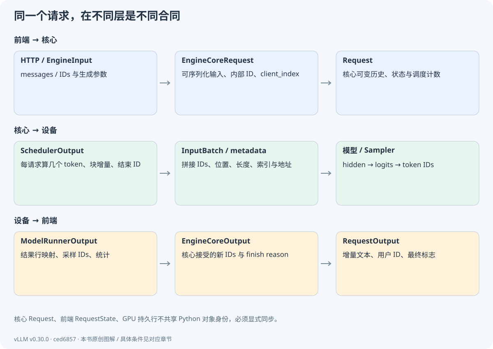
把这一步对应到源码Request.__init__
按身份、token、计数器、特殊特性四组阅读字段；注意内部可变列表与对外只读视图。
vllm/v1/request.py · L60–L235 · 固定 commit
在这里展开真实代码选段
这里只展示 L60–L85；完整函数至 L235，请打开本地源码阅读全部分支。
60 def __init__(
61 self,
62 request_id: str,
63 prompt_token_ids: list[int] | None,
64 sampling_params: SamplingParams | None,
65 pooling_params: PoolingParams | None,
66 client_index: int = 0,
67 arrival_time: float | None = None,
68 prompt_embeds: torch.Tensor | None = None,
69 prompt_is_token_ids: list[bool] | None = None,
70 mm_features: list[MultiModalFeatureSpec] | None = None,
71 lora_request: "LoRARequest | None" = None,
72 cache_salt: str | None = None,
73 priority: int = 0,
74 trace_headers: Mapping[str, str] | None = None,
75 block_hasher: Callable[["Request"], list["BlockHash"]] | None = None,
76 resumable: bool = False,
77 session_id: str | None = None,
78 reasoning_ended: bool | None = None,
79 reasoning_parser_kwargs: dict[str, Any] | None = None,
80 abort_immediately: bool = False,
81 ) -> None:
82 self.request_id = request_id
83 self.client_index = client_index
84 self.priority = priority
85 self.sampling_params = sampling_params把这一步对应到源码SchedulerOutput
这是一份计划数据约定，重点读新/缓存请求、token 计数、finished/preempted IDs 和 KV 相关信息。
vllm/v1/core/sched/output.py · L224–L319 · 固定 commit
在这里展开真实代码选段
这里只展示 L224–L249；完整函数至 L319，请打开本地源码阅读全部分支。
224 @dataclass
225 class SchedulerOutput:
226 # list of the requests that are scheduled for the first time.
227 # We cache the request's data in each worker process, so that we don't
228 # need to re-send it every scheduling step.
229 scheduled_new_reqs: list[NewRequestData]
230 # list of the requests that have been scheduled before.
231 # Since the request's data is already cached in the worker processes,
232 # we only send the diff to minimize the communication cost.
233 scheduled_cached_reqs: CachedRequestData
234
235 # req_id -> num_scheduled_tokens
236 # Number of tokens scheduled for each request.
237 num_scheduled_tokens: dict[str, int]
238 # Total number of tokens scheduled for all requests.
239 # Equal to sum(num_scheduled_tokens.values())
240 total_num_scheduled_tokens: int
241 # req_id -> spec_token_ids
242 # If a request does not have any spec decode tokens, it will not be
243 # included in the dictionary.
244 scheduled_spec_decode_tokens: dict[str, list[int]]
245 # req_id -> encoder input indices that need processing.
246 # E.g., if a request has [0, 1], it could mean the vision encoder needs
247 # to process that the request's 0-th and 1-th images in the current step.
248 scheduled_encoder_inputs: dict[str, list[int]]
249 # Number of common prefix blocks for all requests in each KV cache group.7.2 四个计数，四种含义
| 字段/概念 | 主线含义 | A 的典型数值 |
|---|---|---|
| num_prompt_tokens | 原始输入 token 数 | 始终为 3 |
| num_tokens | 核心已知的输入与已生成 token 总数 | 3 → 4 → 5 |
| num_computed_tokens | 已被调度覆盖的前缀进度，可能乐观包含在途工作 | 0 → 3 → 4 |
| num_in_flight_tokens | 已调度、结果尚未完成处理的 token 数 | 0 → 3 → 0 → 1 → 0 |
| ready_tokens（教学字段） | 已真实完成 KV 写入的前缀数 | 0 → 3 → 4 |
| 前端 num_cached_tokens | 前缀缓存命中的统计值 | 本主线为 0 |
ready_tokens 只存在于教学实验，用来揭示物理完成与调度记账的区别。num_cached_tokens 不能拿来表示“当前全部 KV 长度”；scheduled_cached_reqs 也不等于“命中前缀缓存的请求”，它主要指 Worker 已经认识、可以用增量信息更新的请求。
7.3 同步主线仍然存在提前记账
Scheduler 在生成计划后就调用 _update_after_schedule，把 num_computed_tokens 和 num_in_flight_tokens 增加。本轮 GPU 尚未执行完，核心字段已经前移。后续 update_from_output 减去在途计数并处理真实结果。异步、投机、失败与取消会让这个区别更关键。
A 调度 prefill 后，computed=3、in_flight=3、教学 ready=0；采样完成再更新请求记录后，known=4、computed=3、in_flight=0、ready=3。新生成的鱼只是一个输出 ID，此时鱼本身还没有通过模型，因此没有它的 KV。下一轮把鱼作为输入，才使 ready 从 3 变为 4。
把这一步对应到源码Scheduler._update_after_schedule
逐句确认计划后立即增加的两个计数，再看 is_prefill_chunk 的判定。不要仅从字段名推断 GPU 完成。
vllm/v1/core/sched/scheduler.py · L1520–L1568 · 固定 commit
在这里展开真实代码选段
为避免只看到长签名，本卡展示关键处理选段；省略了其他分支。请打开完整源码核对控制流与条件。
--- L1530–L1546（非连续选段；完整上下文见源码）---
1530 num_scheduled_tokens = scheduler_output.num_scheduled_tokens
1531 for req_id, num_scheduled_token in num_scheduled_tokens.items():
1532 request = self.requests[req_id]
1533 request.num_computed_tokens += num_scheduled_token
1534 request.num_in_flight_tokens += num_scheduled_token
1535 if self.defer_block_free:
1536 # Record the in-flight step, to fence deferred block freeing.
1537 request.last_sched_seq = self.sched_step_seq
1538 request.is_prefill_chunk = request.num_computed_tokens < (
1539 request.num_tokens + request.num_output_placeholders
1540 )
1541 scheduler_output.has_structured_output_requests |= (
1542 request.use_structured_output and not request.is_prefill_chunk
1543 )
1544 # Drop from the in-flight-prefill set once it's no longer prefilling.
1545 if not request.is_prefill_chunk:
1546 self._inflight_prefills.discard(request)
--- L1564–L1568（非连续选段；完整上下文见源码）---
1564 # Clear the finished and preempted request IDs.
1565 # NOTE: We shouldn't just clear() here because it will also affect
1566 # the scheduler output.
1567 self.finished_req_ids = set()
1568 self.reset_preempted_req_ids = set()7.4 状态机不是只有 waiting/running/finished
普通请求 WAITING → RUNNING → FINISHED_STOPPED 或 FINISHED_LENGTH_CAPPED。内存不足时可能 RUNNING → PREEMPTED → 再调度。结构化语法、远程 KV 和流式输入有专门等待状态；把它们都当成 GPU 忙，会误判排队原因。
正常结束会归还所有权并从核心活动映射中移除，但不要求把那个旧 Request 对象的 num_computed_tokens 重置为 0。抢占则为了重算，会重置进度。Worker 的持久状态还需在后续计划收到 finished_req_ids 后清除。
把这一步对应到源码RequestStatus
把普通状态、特殊等待状态、终止状态分别标到纸上。结束判断依赖枚举约定，不只是字符串比较。
vllm/v1/request.py · L364–L391 · 固定 commit
在这里展开真实代码选段
这里只展示 L364–L389；完整函数至 L391，请打开本地源码阅读全部分支。
364 class RequestStatus(enum.IntEnum):
365 """Status of a request."""
366
367 WAITING = enum.auto()
368 WAITING_FOR_STRUCTURED_OUTPUT_GRAMMAR = enum.auto()
369 WAITING_FOR_REMOTE_KVS = enum.auto()
370 WAITING_FOR_STREAMING_REQ = enum.auto()
371 RUNNING = enum.auto()
372 PREEMPTED = enum.auto()
373 # Note: anything after PREEMPTED will be considered
374 # as a finished status.
375 FINISHED_STOPPED = enum.auto()
376 FINISHED_LENGTH_CAPPED = enum.auto()
377 FINISHED_ABORTED = enum.auto()
378 FINISHED_IGNORED = enum.auto()
379 FINISHED_ERROR = enum.auto()
380 FINISHED_REPETITION = enum.auto()
381
382 def __str__(self) -> str:
383 return self.name
384
385 @staticmethod
386 def is_finished(status: "RequestStatus") -> bool:
387 return status > RequestStatus.PREEMPTED
388
389 @staticmethod7.5 本章实验
python labs/run.py trace --json检查时暂停在“调度 prefill 后”和“结果回填后”两行，解释为何 known/computed/ready 不相等。最后一行是零 token 清理步：没有 Transformer 前向，但 Worker 删除请求状态，因此仍然有有用工作。
停一下，自己想一想生成鱼以后，known=4、computed=3。在下一轮里，真正需要作为新输入的是谁？
是鱼的编号 8，位置为 3。它执行后，鱼才有自己的 KV；EOS 则在被选出后直接触发结束。
已知多少、已安排多少、还在计算多少、真实完成多少，回答的是四个问题。先把问题分开，再看字段名。
理解检查 · computed=3 能否说明 GPU 已经写好了 3 个 token 的 KV？
不能。调度阶段已提前记账，必须结合在途状态及结果处理边界判断；教学 ready 专门表示真实完成。
理解检查 · scheduled_cached_reqs 出现 A，能否断言 A 命中了 APC？
不能。它是 Worker 状态更新类别；APC 命中要看 KV 查找结果和命中统计。
理解检查 · 输出 [8,1] 后，为什么缓存主线只需要 4 个 token 的 KV，而已知 token 有 5 个？
Prompt 3 个加鱼作为 decode 输入共 4 个执行过；EOS 刚被采样就终止，不必再作为下一次输入执行。
字段定义齐备，下一章按一轮 EngineCore.step 的严格顺序，把计划、执行、采样和更新请求记录串起来。
回看本章的目标与输入输出
一个调度字段的含义若读错，后续时序图都会错。本章建立贯穿全书的字段字典与状态账本。
本章交接
带着什么来：核心与前端分别拥有的请求对象
本章怎样处理：定义历史、进度、在途、状态和计划合同
交给下一步：能逐事件填写的字段账本
二、让一条请求跑起来 · 08
EngineCore：一轮如何推进
这一章，从一个问题开始引擎推进“一轮”，究竟做了哪些事？
把视线从整次生成缩到一轮。A 仍在等待时，一轮要把它选出来；A 执行结束后，这一轮还要接收结果并修改记录。模型前向处于中间，前后都有工作。
8.1 把一轮拆成能看见的步骤
先用 A 的第一次执行来代入。此时 prompt 是 [11,10,7]，核心已经保存了它，但 GPU 还没开始算。
| 顺序 | 这一刻做什么 | 交给下一步什么 |
|---|---|---|
| 1 | 查看是否有请求或待清理状态 | 决定是否需要继续 |
| 2 | Scheduler 安排 A 的 3 个输入 token | 本轮执行计划 |
| 3 | 执行器提交模型执行 | 用于取回结果的 Future |
| 4 | 准备需要的采样约束，取得执行结果 | 隐藏状态对应的采样结果，或继续采样的信号 |
| 5 | 若前向返回 None，接着调用 sample_tokens | 如鱼 8 这样的新 token ID |
| 6 | 处理期间到达的取消，再更新请求记录 | 接受的输出、停止状态与核心消息 |
先别急着记每个函数名，注意这些步骤为什么有先后。采样需要模型先给隐藏状态；请求历史只能加入有效采样结果；文本又要等前端解码。把任意两步交换，都可能改变含义。
本书同步基本流程一次只有一批，使用 EngineCore.step。等这条依赖关系清楚后，第 17 章再说明怎样重叠多批，以及哪几步可以提前准备。
停一下，自己想一想第 2 步做完后，computed 已经增加了。这是否表示模型已经完成？
还没有。它是调度后的提前记账。真正计算在第 3 步提交，结果还要经过等待和处理。第 7 章分开的那几个计数，在这里有了各自的位置。
把这一步对应到源码EngineCore.step
对照表格寻找 schedule、execute_model、future.result、sample_tokens 和 update_from_output。先把函数读成这几个动作，再核对细节。
vllm/v1/engine/core.py · L589–L619 · 固定 commit
在这里展开真实代码选段
这里只展示 L589–L614；完整函数至 L619，请打开本地源码阅读全部分支。
589 def step(self) -> tuple[dict[int, EngineCoreOutputs], bool]:
590 """Schedule, execute, and make output.
591
592 Returns tuple of outputs and a flag indicating whether the model
593 was executed.
594 """
595
596 # Check for any requests remaining in the scheduler - unfinished,
597 # or finished and not yet removed from the batch.
598 if not self.scheduler.has_requests():
599 return {}, False
600 scheduler_output = self.scheduler.schedule(self._should_throttle_prefills())
601 future = self.model_executor.execute_model(scheduler_output, non_block=True)
602 grammar_output = self.scheduler.get_grammar_bitmask(scheduler_output)
603 with (
604 self.capture_iteration_details(scheduler_output) as iteration_details,
605 self.log_error_detail(scheduler_output),
606 ):
607 model_output = future.result()
608 if model_output is None:
609 model_output = self.model_executor.sample_tokens(grammar_output)
610
611 # Before processing the model output, process any aborts that happened
612 # during the model execution.
613 self._process_aborts_queue()
614 engine_core_outputs = self.scheduler.update_from_output(8.2 两次前向生成两个输出
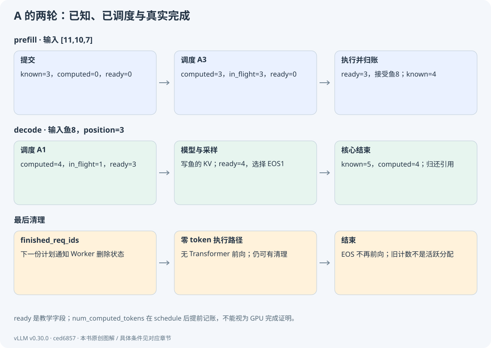
逐事件检查账本
控制流教学模拟，ready 为额外教学字段；不是实际 vLLM GPU trace。
A 首次计划输入 [11,10,7]，位置 [0,1,2]，生成 3 个位置的 K/V；通常只从最后一个有效位置采样后继 token，得到 8。核心把 8 加入已知序列，输出给前端。第二次输入只包含 [8]，位置 [3]，查询可见前缀 KV，采样得到 1 EOS，然后结束。
教学模型的输出来自重新执行矩阵前向，而控制层采用本书的简化状态模拟；实验不是在 CPU 安装并运行真实 vLLM Scheduler。真实模型也未必产生鱼。这样的隔离使你可以先检验调度因果，再到 GPU 核对生产执行。
8.3 为什么执行和采样分开
MRV2.execute_model 准备输入、执行模型并保存采样所需隐藏状态；最后阶段 sample_tokens 计算 logits、应用采样规则并构造 ModelRunnerOutput。PP、语法约束、投机及异步输出都可能影响它们的交接。把“模型 forward = 完整文本输出”合成一步，会丢失引擎的重要协议。
模型输出可能在 GPU 上继续参与采样和状态更新，CPU 只接收必要的 token 与统计。异步 device-to-host 输出也需要在正确时机完成；不能因 Python 函数返回就推断所有设备副作用结束。
把这一步对应到源码GPUModelRunner.execute_model
关注 update_requests、prepare_inputs、模型调用、execute_model_state 和 None 返回。按支持的单卡文本分支阅读。
vllm/v1/worker/gpu/model_runner.py · L1630–L1993 · 固定 commit
在这里展开真实代码选段
为避免只看到长签名，本卡展示关键处理选段；省略了其他分支。请打开完整源码核对控制流与条件。
--- L1642–L1667（非连续选段；完整上下文见源码）---
1642 # Update the request states.
1643 self.update_pp_decode_requests()
1644 self.finish_requests(scheduler_output)
1645 self.free_states(scheduler_output)
1646 self.add_requests(scheduler_output)
1647 self.update_requests(scheduler_output)
1648 self.block_tables.apply_staged_writes()
1649 if scheduler_output.total_num_scheduled_tokens == 0:
1650 # No need to run the model.
1651 empty_output = self.kv_connector.no_forward(scheduler_output)
1652 return self._merge_ec_connector_no_forward(
1653 scheduler_output, empty_output
1654 )
1655
1656 # Get batch descriptor and sync across DP ranks.
1657 num_reqs = len(scheduler_output.num_scheduled_tokens)
1658 num_toks = scheduler_output.total_num_scheduled_tokens
1659 max_query_len = max(scheduler_output.num_scheduled_tokens.values())
1660 batch_req_state, uniform_tok_count = self.gather_batch_req_state(
1661 scheduler_output, dummy_run
1662 )
1663 if batch_req_state is not None:
1664 num_toks = batch_req_state.num_tokens
1665 if self.pcp_manager is not None:
1666 num_toks = self.pcp_manager.get_num_tokens_for_dispatch(
1667 batch_req_state.num_scheduled_tokens,
--- L1708–L1723（非连续选段；完整上下文见源码）---
1708 if not dummy_run:
1709 # Common case.
1710 # Prepare all the inputs and copy to the input buffers.
1711 if self.observability_config.cudagraph_metrics:
1712 cudagraph_stats = make_cudagraph_stats(batch_desc, num_toks)
1713 assert batch_req_state is not None
1714 input_batch = self.prepare_inputs(
1715 scheduler_output, batch_req_state, batch_desc
1716 )
1717 block_tables, slot_mappings = self.prepare_attn(input_batch)
1718 # Mamba "align" pre-copy: migrate recurrent state across block
1719 # boundaries before the forward. Runs only on real batches, and
1720 # before model_state.prepare_attn gathers num_accepted_tokens so the
1721 # boundary reset is visible to the attention metadata.
1722 self.model_state.preprocess_state(
1723 input_batch,
--- L1941–L1955（非连续选段；完整上下文见源码）---
1941 # PIECEWISE after the cudagraph manager exists.
1942 assert self.cudagraph_manager is not None
1943 model_output = self.cudagraph_manager.run_pw_graph(
1944 self.model, model_inputs
1945 )
1946 else:
1947 # Eager (NONE): call the raw model directly.
1948 model_output = self.model(**model_inputs)
1949
1950 self.kv_connector.finish_forward()
1951
1952 if self.is_last_pp_rank:
1953 if self.use_aux_hidden_state_outputs:
1954 assert isinstance(model_output, tuple)
1955 hidden_states, aux_hidden_states = model_output
--- L1971–L1993（非连续选段；完整上下文见源码）---
1971
1972 finished_req_ids = scheduler_output.finished_req_ids
1973 self.execute_model_state = ExecuteModelState(
1974 input_batch=input_batch,
1975 attn_metadata=attn_metadata,
1976 slot_mappings_by_layer=slot_mappings_by_layer,
1977 hidden_states=hidden_states,
1978 aux_hidden_states=aux_hidden_states,
1979 dp_sync=dp_sync,
1980 finished_req_ids=finished_req_ids,
1981 ec_connector_output=ec_connector_output,
1982 routed_experts=routed_experts,
1983 cudagraph_stats=cudagraph_stats,
1984 )
1985
1986 if not self.is_last_pp_rank:
1987 # Non-last PP rank: return IntermediateTensors for sending.
1988 assert output_intermediate_tensors is not None
1989 assert self.pp_handler is not None
1990 return self.pp_handler.relay_aux_hidden_states(
1991 model_inputs["intermediate_tensors"], output_intermediate_tensors
1992 )
1993 return None把这一步对应到源码GPUModelRunner.sample_tokens
跟踪保存的状态如何被消费，输出如何带请求映射，再如何清除本轮执行状态。
vllm/v1/worker/gpu/model_runner.py · L1995–L2181 · 固定 commit
在这里展开真实代码选段
这里只展示 L1995–L2020；完整函数至 L2181，请打开本地源码阅读全部分支。
1995 @torch.inference_mode()
1996 @step_eplb_after()
1997 def sample_tokens(
1998 self, grammar_output: GrammarOutput | None
1999 ) -> AsyncOutput | ModelRunnerOutput | None:
2000 if self.execute_model_state is None:
2001 # The prior execute_model call must have failed.
2002 return None
2003
2004 input_batch = self.execute_model_state.input_batch
2005 attn_metadata = self.execute_model_state.attn_metadata
2006 slot_mappings_by_layer = self.execute_model_state.slot_mappings_by_layer
2007 hidden_states = self.execute_model_state.hidden_states
2008 aux_hidden_states = self.execute_model_state.aux_hidden_states
2009 dp_sync = self.execute_model_state.dp_sync
2010 finished_req_ids = self.execute_model_state.finished_req_ids
2011 ec_connector_output = self.execute_model_state.ec_connector_output
2012 routed_experts = self.execute_model_state.routed_experts
2013 cudagraph_stats = self.execute_model_state.cudagraph_stats
2014 self.execute_model_state = None
2015
2016 if not self.is_last_pp_rank:
2017 # Non-last PP rank: hidden_states is None because this rank produced
2018 # IntermediateTensors instead of final hidden states. Receive the
2019 # sampled tokens broadcast from the last rank and update local state.
2020 assert self.pp_handler is not None8.4 没有 token，也可能要再 step
Scheduler.has_requests 包括未结束请求、已结束 ID 的清理，以及连接器待处理状态。因此最后一条请求结束后，可能仍需一轮计划把 finished_req_ids 发给 Worker。MRV2 在 total_num_scheduled_tokens=0 时可走 no_forward 路径，处理状态而不跑 Transformer。
这解释了一个常见误会：看到最后一次 step token 数为 0，不能断言是空转 bug；要看它是否在传递清理或连接器进度。反过来，长期无工作仍持续忙循环也需要排查，不能用“可能在清理”永远搪塞。
把这一步对应到源码Scheduler.has_requests
检查 unfinished、finished 与 connector pending 的并集，建立循环退出条件。
vllm/v1/core/sched/scheduler.py · L2671–L2686 · 固定 commit
在这里展开真实代码选段
本卡片展示完整符号范围。
2671 def has_requests(self) -> bool:
2672 # Override the interface default to also keep the engine alive while a
2673 # connector still has pending push work (e.g. push-mode WRITE transfers
2674 # in flight after all "live" requests have finished). Without this hook
2675 # the engine would quiesce before the connector can drain completions.
2676 # TODO: replace with a more general mechanism for connectors to keep
2677 # the scheduler alive.
2678 return (
2679 self.has_unfinished_requests()
2680 or self.has_finished_requests()
2681 or (self.connector is not None and self.connector.has_pending_push_work())
2682 or (
2683 self.ec_connector is not None
2684 and self.ec_connector.has_pending_push_work()
2685 )
2686 )记住安排、执行、采样、更新四段，再用源码核对它们的顺序与返回协议。
理解检查 · 为什么 prefill 的 3 个输入通常只产生 1 个下一 token？
这 3 个位置都参与计算和建立 KV，但自回归续写首先需要最后位置的后继分布。前面位置的预测不是这次用户续写的三个独立输出。
理解检查 · execute_model 返回 None 时，你会先检查哪里？
检查执行器/Runner 协议和 EngineCore 的 sample_tokens 分支；在本主线路径它表示 forward 与采样分离，不能直接报失败。
理解检查 · 最后一条输出后还有一轮计划，至少检查哪两个字段？
total_num_scheduled_tokens 与 finished_req_ids；再看 Worker 是否删除持久状态及 KV 是否安全归还。
下一章展开 step 的第一个核心动作：Scheduler 如何用统一的 token 预算安排长短不一的请求？
回看本章的目标与输入输出
你将能不用看图复述一次 step，并解释 forward 没有直接返回 token 时引擎为何仍然正常工作。
本章交接
带着什么来：请求表、资源池与已定义合同
本章怎样处理：schedule→execute→sample→update
交给下一步：核心新状态、输出消息和下一轮工作
三、调度与显存管理 · 09
统一调度、分块 prefill 与抢占
这一章，从一个问题开始A 只差 1 个 token，C 却有 20 个输入，怎样安排才能都向前走？
这次给调度器 8 个 token 的预算。A 用 1 个，B 用 3 个，C 还能用几个？先手算这一轮，再加入显存和请求数限制，就能看出调度器为什么需要多种约束。
9.1 统一表达式
普通同步文本主线中，请求需要的新工作量约为 num_tokens - num_computed_tokens；生产实现还包含 spec token、输出占位和长度约束。初始 A 有 3 个已知、0 个已调度，因此需 3；采样鱼后 known=4、computed=3，因此需 1。prefill 与 decode 可以在同一表达式下处理。
Scheduler 先考察 running，再准入 waiting。running 中也可能有尚未完成的分块 prefill；因此“running 队列等于 decode 队列”不成立。调度还受 token 预算、请求数、长 prefill 阈值、KV 容量、模型长度、特殊输入和优先级等约束。
把这一步对应到源码Scheduler.schedule
先读函数开头的统一计数说明，再追 running、waiting、构造 SchedulerOutput、_update_after_schedule 四段，不要求一次吞下全部特殊分支。
vllm/v1/core/sched/scheduler.py · L561–L1456 · 固定 commit
在这里展开真实代码选段
为避免只看到长签名，本卡展示关键处理选段；省略了其他分支。请打开完整源码核对控制流与条件。
--- L610–L620（非连续选段；完整上下文见源码）---
610 # First, schedule the RUNNING requests.
611 req_index = 0
612 while req_index < len(self.running) and token_budget > 0:
613 request = self.running[req_index]
614 if input_budget <= draft_slots:
615 break
616
617 if (
618 request.num_output_placeholders > 0
619 # This is (num_computed_tokens + 1) - (num_output_placeholders - 1).
620 # Since output placeholders are also included in the computed tokens
--- L656–L671（非连续选段；完整上下文见源码）---
656 num_new_tokens = (
657 request.num_tokens_with_spec
658 + request.num_output_placeholders
659 - request.num_computed_tokens
660 )
661 if 0 < self.scheduler_config.long_prefill_token_threshold < num_new_tokens:
662 num_new_tokens = self.scheduler_config.long_prefill_token_threshold
663 num_new_tokens = min(
664 num_new_tokens, token_budget, input_budget - draft_slots
665 )
666
667 # Make sure the input position does not exceed the max model len.
668 # This is necessary when using spec decoding.
669 num_new_tokens = min(
670 num_new_tokens,
671 self.max_model_len
--- L726–L737（非连续选段；完整上下文见源码）---
726 # Schedule newly needed KV blocks for the request.
727 with record_function_or_nullcontext("schedule: allocate_slots"):
728 while True:
729 new_blocks = self.kv_cache_manager.allocate_slots(
730 request,
731 num_new_tokens,
732 num_lookahead_tokens=self.num_lookahead_tokens,
733 )
734
735 if new_blocks is not None:
736 # The request can be scheduled.
737 break
--- L917–L937（非连续选段；完整上下文见源码）---
917 # Get already-cached tokens.
918 if request.num_computed_tokens == 0:
919 did_prefix_cache_lookup = True
920 (
921 new_computed_blocks,
922 num_new_local_computed_tokens,
923 request.shared_prefix_boundary,
924 hit_diverged,
925 ) = self._get_local_prefix_cache_hit(request)
926
927 # Get externally-cached tokens if using a KVConnector.
928 if self.connector is not None:
929 # Present a block-aligned local hit to the connector so
930 # a strictly longer remote hit can supersede a local
931 # sub-block tail without racing its copy-on-write.
932 partial_tail = num_new_local_computed_tokens % self.block_size
933 block_aligned_local = (
934 num_new_local_computed_tokens - partial_tail
935 )
936 ext_tokens, load_kv_async = (
937 self.connector.get_num_new_matched_tokens(
--- L1035–L1053（非连续选段；完整上下文见源码）---
1035 request_token_budget = min(token_budget, input_budget - draft_slots)
1036 # Number of tokens to be scheduled.
1037 # We use `request.num_tokens` instead of
1038 # `request.num_prompt_tokens` to consider the resumed
1039 # requests, which have output tokens.
1040 num_new_tokens = request.num_tokens - num_computed_tokens
1041
1042 # Pad new decode requests to uniform spec decoding size to
1043 # preserve full cudagraph for this step.
1044 # Not for diffusion where draft tokens can't be padded.
1045 if (
1046 (self.num_spec_tokens > 0 and self.dynamic_sd_lookup is None)
1047 and self.num_sampled_tokens_per_step > 0
1048 and num_new_tokens == 1
1049 and not prefill_scheduled
1050 and (scheduled_running_reqs or num_computed_tokens > 0)
1051 ):
1052 padded_num_tokens = 1 + self.num_spec_tokens
1053 # Pad only when there is room for the sampled token(s).
--- L1159–L1171（非连续选段；完整上下文见源码）---
1159 new_blocks = self.kv_cache_manager.allocate_slots(
1160 request,
1161 num_new_tokens,
1162 num_new_computed_tokens=num_new_local_computed_tokens,
1163 new_computed_blocks=new_computed_blocks,
1164 num_lookahead_tokens=effective_lookahead_tokens,
1165 num_external_computed_tokens=num_external_computed_tokens,
1166 delay_cache_blocks=load_kv_async,
1167 num_encoder_tokens=num_encoder_tokens,
1168 full_sequence_must_fit=self.scheduler_reserve_full_isl,
1169 reserved_blocks=reserved_blocks,
1170 has_scheduled_reqs=bool(self.running),
1171 )
--- L1323–L1340（非连续选段；完整上下文见源码）---
1323 # Construct the scheduler output.
1324 if self.use_v2_model_runner:
1325 scheduled_new_reqs.extend(scheduled_resumed_reqs)
1326 scheduled_resumed_reqs.clear()
1327 new_reqs_data = [
1328 NewRequestData.from_request(
1329 req,
1330 req_to_new_blocks[req.request_id].get_block_ids(),
1331 req._all_token_ids,
1332 uses_mrope=self.model_uses_mrope,
1333 )
1334 for req in scheduled_new_reqs
1335 ]
1336 else:
1337 new_reqs_data = [
1338 NewRequestData.from_request(
1339 req,
1340 req_to_new_blocks[req.request_id].get_block_ids(),9.2 用预算 8 手算一次
设 A 还需 1 个 decode token，B 还剩 3 个 prefill token，C 是新到的长输入。按本次简化配置和顺序，A1+B3 先占 4 个，C 获得剩余 4 个，得到计划 {A:1,B:3,C:4}。这只是隔离条件下的教学计划，真实结果还受准入预留、块不足、优先级与其他分支影响。
C 的输入若为 20 个 token，本轮只计算前 4 个并建立相应 KV，不能提前把最后续写 token 当成有效输出。下一轮从进度边界继续。chunked prefill 的目的之一是限制长输入在一次调度中的资源占用，使短 decode 有机会穿插；它会增加管理和执行次数，不是无条件免费。
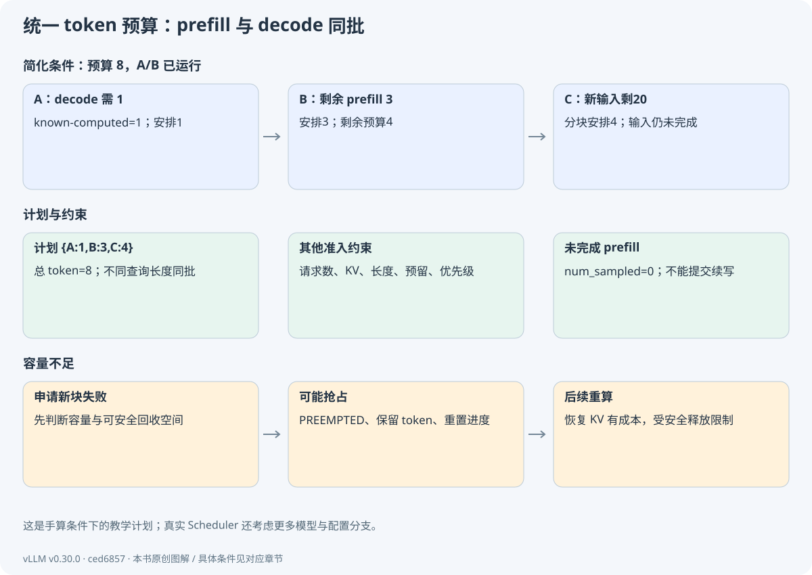
9.3 四种预算分别问四个问题
| 约束 | 回答的问题 | 常见误读 |
|---|---|---|
| max_num_seqs | 同时安排/运行多少请求？ | 把它当每步 token 数 |
| max_num_batched_tokens | 本轮输入工作量上限？ | 把它当整个服务容量 |
| max_model_len | 单序列总长度允许多大？ | 把它当已分配 KV 长度 |
| KV 块与准入策略 | 现在和后续是否有足够物理空间？ | 有 token 预算就必能准入 |
本版本 allocate_slots 可接收 full_sequence_must_fit 和 reserved_blocks 等信息。远程加载的 KV 会暂时占资源却不推进 forward，准入还要避免相互等待。故调度不是“填满 token 数”这么一个二维装箱问题。
9.4 块不足时为什么抢占
运行请求需要新块而容量不足时，调度器可能选择牺牲者，释放其可安全回收块，将其状态改为 PREEMPTED，重置计算进度并放回等待端。已知 token 历史仍可保留，之后通过重算恢复 KV。重算占用时间与算力，不能当作免费上下文保存。
释放必须遵守在途写入安全。异步情况下，逻辑抢占与物理归还之间可能有延迟；新请求不能立刻复用正在被旧 kernel 写入的块。本书后续用调度序号解释这个约束。
把这一步对应到源码Scheduler._preempt_request
对照状态、进度、spec/placeholder、队列和块释放的处理，区分抢占与正常终止。
vllm/v1/core/sched/scheduler.py · L1477–L1518 · 固定 commit
在这里展开真实代码选段
这里只展示 L1477–L1502；完整函数至 L1518，请打开本地源码阅读全部分支。
1477 def _preempt_request(
1478 self, request: Request, timestamp: float, drop_stale_output: bool = False
1479 ) -> None:
1480 """Preempt a request and put it back to the waiting queue.
1481
1482 NOTE: The request should be popped from the running queue outside of this
1483 method.
1484
1485 drop_stale_output: drop (rather than deliver) any in-flight output; used
1486 by reset_prefix_cache, whose same-step resume would otherwise deliver
1487 tokens out of order, and for connectors with a pending KV hand-off,
1488 which the preemption's block free would leave without valid KV.
1489 """
1490 assert request.status == RequestStatus.RUNNING, (
1491 "Only running requests can be preempted"
1492 )
1493 self._free_request_blocks(request)
1494 self.encoder_cache_manager.free(request)
1495 self._inflight_prefills.discard(request)
1496 request.status = RequestStatus.PREEMPTED
1497 request.num_computed_tokens = 0
1498 if request.spec_token_ids:
1499 request.spec_token_ids = []
1500 # Async scheduling: mark all in-flight output as stale. Its tokens are
1501 # still delivered on return (dropping them would perturb spec-decode
1502 # acceptance) but must not mutate the reset counters; each step drains9.5 本章实验与源码检查
python labs/run.py budget
python labs/run.py source sched Scheduler.schedule检查输出为 A1/B3/C4，总计 8。接着把预算调成 4，说明 C 本轮为何拿不到 token；再解释开启优先级、禁用 chunk、缩小 KV 池时为何不能继续声称这个结果必然成立。
停一下，自己想一想8 个预算分给 A1、B3、C4 后，C 的 20 个输入还剩多少？
还剩 16 个。本轮只建立已经执行部分的 KV，C 不能提前提交完整输入之后的续写。
running 表示请求已进入运行阶段，其中也可能有尚未完成的 prefill。能否调度还要看预算、KV 与其他条件。
理解检查 · running 队列为何可能有 prefill？
分块 prefill 的请求已经运行但输入尚未算完。队列表示生命周期/调度状态，不单纯表示模型阶段。
理解检查 · 预算还有 100 token，但 waiting 请求没进入 GPU，是否一定是 bug？
不是。请求数、KV 容量、准入完整输入预留、语法/远程 KV 等等待、优先级或模型限制都可能阻止它。
理解检查 · 抢占会重新训练或改变已生成 token 吗？
不会训练。主线通过保存已知 token 并重算前缀恢复 KV；调度和数值配置不变时应保持生成语义，但不能把重算成本忽略。
调度器已经决定算谁。下一章解释它申请的“块”是什么，以及逻辑序列如何映射到实际 KV 槽位。
回看本章的目标与输入输出
本章从“还有多少已知 token 没被覆盖”推导调度，而不是先背 prefill/decode 两张独立队列图。
本章交接
带着什么来：核心请求的已知/已调度差额
本章怎样处理：按预算、准入、KV 和优先级决定工作量
交给下一步：SchedulerOutput：谁算多少及地址增量
三、调度与显存管理 · 10
分页 KV：从位置到物理地址
这一章，从一个问题开始上下文在逻辑上连续，为什么显存中的块可以不连续？
A 的位置 19 需要写入 KV。它的块表是 [7,2]，每块放 16 个 token。先别想内核，像查两次数组一样，找出它最终对应的槽位。
10.1 为什么把连续上下文拆成页
为每个请求预留最大长度的连续 KV 空间，会浪费未使用尾部，并增加动态增长的管理困难。分页把逻辑序列切成固定 token 数的块，物理块可来自不同位置。请求持有逻辑块到物理块的映射，Attention 根据映射访问历史 K/V。
普通 Dense 情况，块大小 b=16。位置 p 对应逻辑块 j=floor(p/16)、块内偏移 r=p mod 16；若块表为 [7,2]，p=19 对应 j=1、r=3、物理块 2、扁平 slot=2×16+3=35。slot 是给后端使用的索引语义，实际字节布局还取决于层、K/V、头、维度、dtype 和后端存储格式。
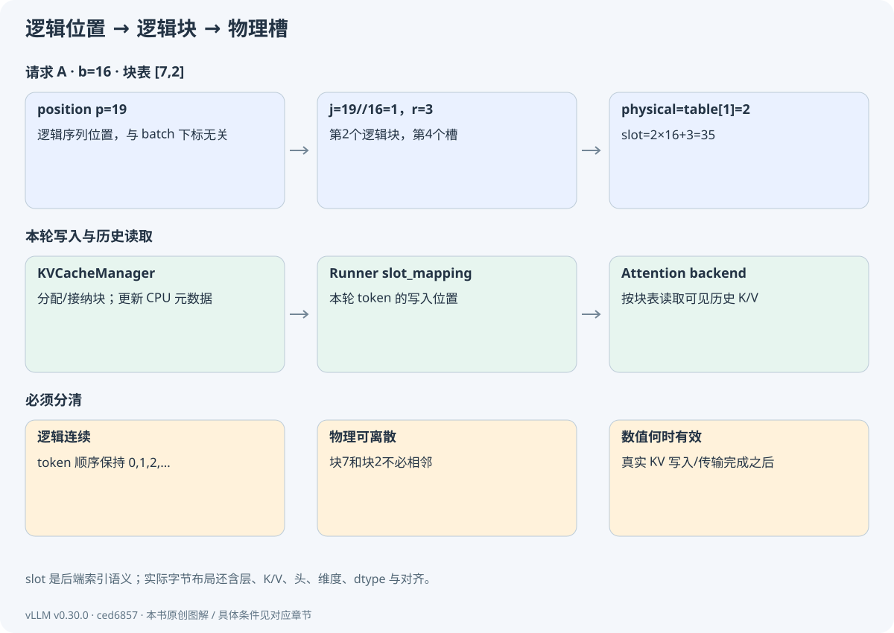
10.2 管理三种对象
KVCacheManager 接受请求和将要安排的 token 数，协调不同缓存组的分配。BlockPool 管理物理块元数据与可用队列。GPU KV 张量由 Worker/Runner 初始化，执行算子按块表读写数值。Request 本身不应被想象成装着一个完整 GPU KV 矩阵。
多层通常共享相应的 token 地址计划，但每层有自己的 K/V 数值。某层前缀 KV 不能直接当成另一层 KV。混合结构还可能有不同缓存组、滑窗或 Mamba 状态，不能把普通 Dense 的单表图硬套所有模型。
把这一步对应到源码KVCacheManager.allocate_slots
按“算需求、查容量、接纳命中块、分配新块、登记可缓存进度”阅读；关注新算、外部、lookahead 和在途边界的区别。
vllm/v1/core/kv_cache_manager.py · L370–L601 · 固定 commit
在这里展开真实代码选段
为避免只看到长签名，本卡展示关键处理选段；省略了其他分支。请打开完整源码核对控制流与条件。
--- L479–L495（非连续选段；完整上下文见源码）---
479 groups = list(new_computed_block_list)
480 for group_id in self.retained_hit_group_ids:
481 manager = self.coordinator.single_type_managers[group_id]
482 groups[group_id] = groups[group_id][
483 : cdiv(reused, manager.block_size)
484 ]
485 new_computed_block_list = tuple(groups)
486 else:
487 new_computed_block_list = self.empty_kv_cache_blocks.blocks
488
489 # The number of computed tokens is the number of computed tokens plus
490 # the new prefix caching hits
491 num_local_computed_tokens = (
492 request.num_computed_tokens + num_new_computed_tokens
493 )
494 total_computed_tokens = min(
495 num_local_computed_tokens + num_external_computed_tokens,
--- L512–L532（非连续选段；完整上下文见源码）---
512 num_blocks_to_allocate = self.coordinator.get_num_blocks_to_allocate(
513 request_id=request.request_id,
514 num_tokens=full_num_tokens,
515 new_computed_blocks=new_computed_block_list,
516 num_encoder_tokens=num_encoder_tokens,
517 total_computed_tokens=total_computed_tokens,
518 num_local_computed_tokens=num_local_computed_tokens,
519 num_tokens_main_model=full_num_tokens,
520 apply_admission_cap=True,
521 )
522 required_blocks = num_blocks_to_allocate + watermark_blocks
523 if required_blocks > self.block_pool.get_num_free_blocks():
524 return None
525
526 num_tokens_main_model = total_computed_tokens + num_new_tokens
527 num_tokens_need_slot = min(
528 num_tokens_main_model + num_lookahead_tokens, self.max_model_len
529 )
530
531 # Free the blocks that are skipped during the attention computation
532 # (e.g., tokens outside the sliding window).
--- L564–L601（非连续选段；完整上下文见源码）---
564
565 if (
566 new_computed_block_list is not self.empty_kv_cache_blocks.blocks
567 or num_external_computed_tokens > 0
568 ):
569 # Append the new computed blocks to the request blocks until now to
570 # avoid the case where the new blocks cannot be allocated.
571 self.coordinator.allocate_new_computed_blocks(
572 request_id=request.request_id,
573 new_computed_blocks=new_computed_block_list,
574 num_local_computed_tokens=num_local_computed_tokens,
575 num_external_computed_tokens=num_external_computed_tokens,
576 )
577
578 new_blocks = self.coordinator.allocate_new_blocks(
579 request.request_id,
580 num_tokens_need_slot,
581 num_tokens_main_model,
582 num_encoder_tokens,
583 )
584
585 # P/D: delay caching blocks if we have to recv from
586 # remote. Update state for locally cached blocks.
587 if delay_cache_blocks:
588 return self.create_kv_cache_blocks(new_blocks)
589
590 # NOTE(woosuk): We want to commit (cache) up to num_local_computed_tokens
591 # + num_external_computed_tokens + num_new_tokens, but must exclude
592 # "non-committable" tokens (e.g., draft tokens that could be rejected).
593 # Therefore, we cap the number at `request.num_tokens`, ensuring only
594 # "finalized" tokens are cached.
595 num_tokens_to_cache = min(
596 total_computed_tokens + num_new_tokens,
597 request.num_tokens,
598 )
599 self.coordinator.cache_blocks(request, num_tokens_to_cache)
600
601 return self.create_kv_cache_blocks(new_blocks)把这一步对应到源码BlockPool.get_new_blocks
观察从可用队列获取块、必要时移除旧缓存身份、增加引用。分配元数据本身不计算 K/V。
vllm/v1/core/block_pool.py · L664–L697 · 固定 commit
在这里展开真实代码选段
这里只展示 L664–L689；完整函数至 L697，请打开本地源码阅读全部分支。
664 def get_new_blocks(self, num_blocks: int) -> list[KVCacheBlock]:
665 """Get new blocks from the free block pool.
666
667 Note that we do not check block cache in this function.
668
669 Args:
670 num_blocks: The number of blocks to allocate.
671
672 Returns:
673 A list of new block.
674 """
675 if num_blocks > self.get_num_free_blocks():
676 raise ValueError(f"Cannot get {num_blocks} free blocks from the pool")
677
678 ret: list[KVCacheBlock] = self.free_block_queue.popleft_n(num_blocks)
679
680 if self._reuse_watchers:
681 self._notify_reuse(ret)
682
683 # In order to only iterate the list once, we duplicated code a bit
684 if self.enable_caching:
685 for block in ret:
686 self._maybe_evict_cached_block(block)
687 assert block.ref_cnt == 0
688 block.ref_cnt += 1
689 if self.metrics_collector:10.3 一个块何时变得有内容
allocate_slots 使槽位可供请求使用；Runner 的 slot_mapping 指定本轮每个输入 token 写到哪里；模型投影产生 K/V，缓存更新算子才写入真实值。分配后、kernel 完成前，这块内存可能仍保留旧字节，不能当成新请求的有效前缀读取。
num_computed_tokens 的乐观前移在这里尤其危险。缓存发布必须基于已验证可复用的进度，异步路径还要排除在途部分；调度计数不等于物理数据完成证明。
10.4 内存公式与尾部浪费
请求当前有 n 个普通 KV token，块数约为 ceil(n/b)，尾部浪费小于 b 个 token。许多短请求会使尾部浪费累计，但通常仍比按最大长度整段预留小。块大可减少元数据和寻址开销，却可能降低共享粒度、增大尾部浪费；块小有相反取舍，也受后端合法块大小约束。
本书 b=16 的地址演算符合常见块粒度，但仍应以实际后端配置校验为准。图解旧版 b=2 仅是画图用缩小值，不能复制为生产配置并假定可运行。
10.5 检查
python labs/run.py pack找到 A 的 position=19 与 slot=35，再逐项复算 B 的 [16,17,18] → [176,177,178]。如果你只能记住输出数字，却不能解释逻辑块和物理块哪个连续，可以再手算一次映射。
停一下，自己想一想position=19，块长 16，块表 [7,2]：先查哪个下标？
先算逻辑块 19//16=1，再查 table[1]=2，块内偏移是 3，因此 slot=2×16+3=35。
位置先找到逻辑块，再由块表找到物理块。地址分配与数值写入是前后相连的两步。
理解检查 · 块表 [7,2] 是否意味着请求的 token 顺序被打乱？
没有。逻辑顺序由位置和块表索引保持；物理地址可以不连续，Attention 按逻辑顺序映射访问。
理解检查 · 调用 allocate_slots 后，可以立即读取它作为前缀命中吗？
不可以仅凭分配判断。必须确认对应 K/V 内容已正确计算/传输并满足可发布边界。
理解检查 · 分配块、Attention tile、CUDA thread block 是同一个概念吗？
不是。前者管理 KV 地址，tile 描述计算/数据搬运分块，thread block 描述 GPU 线程组织；它们可以共同出现在同一后端中。
分页解决地址管理。下一章在此基础上加入“相同前缀能否共享内容”的身份与生命周期。
回看本章的目标与输入输出
目标是亲手算出 slot_mapping，并把 CPU 分配元数据与 GPU KV 写入分开解释。
本章交接
带着什么来：计划需要新增的 token 与缓存规格
本章怎样处理：申请物理块、映射逻辑位置
交给下一步：可用块表与本轮槽位计算规则
三、调度与显存管理 · 11
前缀缓存：身份、引用与淘汰
这一章，从一个问题开始两条请求共享一个前缀，其中一条结束后能立刻覆盖它吗？
假设 A 和 B 共享物理块 7。A 离开时，B 仍需要那段历史。我们分别记录“内容是谁”和“还有谁在使用”，看看这两份记录为什么不能合成一个数。
11.1 为什么 token 相同还不够
某位置的 K/V 取决于它之前的上下文。两个块都包含“喜欢吃鱼”，如果前面的内容不同，通常不能共享。普通块哈希递归包含父前缀哈希、当前完整块 token 和额外身份信息；LoRA、多模态内容、cache_salt 等也可能进入键。
教学实验令 P=[11,10,7,8] 重复四次，长度 16。A=P+[11,10,7] 与 B=P+[11,10,9] 可共享第一个完整块，尾部不同而私有。把相同的 P 放在不同的前缀后，其父哈希不同；只比较当前 16 个 token 会错误命中。
把这一步对应到源码hash_block_tokens
检查 parent_block_hash、token_ids 和 extra_keys 的组合，建立前缀依赖，而不是把缓存想成子串词典。
vllm/v1/core/kv_cache_utils.py · L638–L665 · 固定 commit
在这里展开真实代码选段
这里只展示 L638–L663；完整函数至 L665，请打开本地源码阅读全部分支。
638 def hash_block_tokens(
639 hash_function: Callable[[Any], bytes],
640 parent_block_hash: BlockHash | None,
641 curr_block_token_ids: Sequence[int],
642 extra_keys: tuple[Any, ...] | None = None,
643 ) -> BlockHash:
644 """Computes a hash value corresponding to the contents of a block and
645 the contents of the preceding block(s). The hash value is used for
646 prefix caching. We use LRU cache for this function to avoid recomputing
647 hash values for the same block contents.
648 Args:
649 hash_function: The hash function used to compute block hash.
650 parent_block_hash: The hash of the parent block. None
651 if this is the first block.
652 curr_block_token_ids: A list of token ids in the current
653 block. The current block is assumed to be full.
654 extra_keys: Extra keys for the block.
655 Returns:
656 The hash value of the block and the token ids in the block.
657 The entire tuple is used as the hash key of the block.
658 """
659 if not parent_block_hash:
660 parent_block_hash = NONE_HASH
661
662 curr_block_token_ids_tuple = tuple(curr_block_token_ids)
663 return BlockHash(把这一步对应到源码generate_block_hash_extra_keys
确认 LoRA、MM、salt 等额外身份进入位置，理解跨请求隔离。
vllm/v1/core/kv_cache_utils.py · L600–L635 · 固定 commit
在这里展开真实代码选段
这里只展示 L600–L625；完整函数至 L635，请打开本地源码阅读全部分支。
600 def generate_block_hash_extra_keys(
601 request: Request, start_token_idx: int, end_token_idx: int, start_mm_idx: int
602 ) -> tuple[tuple[Any, ...] | None, int]:
603 """Generate extra keys for the block hash. The extra keys can come from
604 the multi-modal inputs, request specific metadata (e.g., LoRA names), and
605 hashed data from prompt embeddings.
606
607 Args:
608 request: The request object.
609 start_token_idx: The start token index of the block.
610 end_token_idx: The end token index of the block.
611 start_mm_idx: The start multi-modal index of the block.
612
613 Returns:
614 A tuple of extra keys and the next multi-modal index.
615 """
616 mm_extra_keys: list[Any]
617 mm_extra_keys, new_start_mm_idx = _gen_mm_extra_hash_keys(
618 request, start_token_idx, end_token_idx, start_mm_idx
619 )
620 lora_extra_keys: list[str] = _gen_lora_extra_hash_keys(request)
621 cache_salt_keys: list[str] = (
622 [request.cache_salt] if (start_token_idx == 0 and request.cache_salt) else []
623 )
624 prompt_embeds_keys = _gen_prompt_embeds_extra_hash_keys(
625 request, start_token_idx, end_token_idx11.2 命中长度为什么受限制
普通 Dense 主线按完整块匹配，get_computed_blocks 还把最大命中长度限制到请求 token 数减一，以便至少重新执行最后所需位置并取得生成分布。缓存保存的是 K/V，通常不是你这次请求需要的最终 logits 或文本回答。
若 prompt 长 19、块长 16，可命中前 16，仍计算位置 16–18 并从末位置采样。即便完整 prompt 的 K/V 曾存在，也不能简单声称“本次零 forward 就能生成”。本版本特殊混合组存在更细粒度部分前缀/COW 路径，不能把普通 Dense 的完整块规则升级为全仓库永恒定律。
把这一步对应到源码KVCacheManager.get_computed_blocks
注意 enable_caching、lookup 开关、max_cache_hit_length 和 coordinator。返回的是可复用块及 token 数，不是字符串答案。
vllm/v1/core/kv_cache_manager.py · L265–L321 · 固定 commit
在这里展开真实代码选段
这里只展示 L265–L290；完整函数至 L321，请打开本地源码阅读全部分支。
265 def get_computed_blocks(self, request: Request) -> tuple[KVCacheBlocks, int, int]:
266 """Get the computed (cached) blocks for the request.
267 Note that the computed blocks must be full.
268
269 Args:
270 request: The request to get the computed blocks.
271
272 Returns:
273 A tuple containing:
274 - A list of blocks that are computed for the request.
275 - The number of computed tokens.
276 - ``shared_prefix_boundary``: the block-aligned token position of
277 a shared prefix that a sparse-retention group (Mamba / sliding
278 window) has not cached yet (Marconi-style APC), or 0 if none.
279 Pinned so sparse prefix-cache retention does not drop
280 the junction and defeat cross-request reuse.
281 """
282 # We skip finding the prefix cache hit when prefix caching is
283 # disabled or the request is marked as skipping kv cache read
284 # (which happens when the request requires prompt logprobs
285 # or calls a pooling model with all pooling).
286 if not self.prefix_cache_lookup_enabled(request):
287 return self.empty_kv_cache_blocks, 0, 0
288
289 # NOTE: When all tokens hit the cache, we must recompute the last token
290 # to obtain logits. Thus, set max_cache_hit_length to prompt_length - 1.11.3 引用计数与缓存身份是两条轴
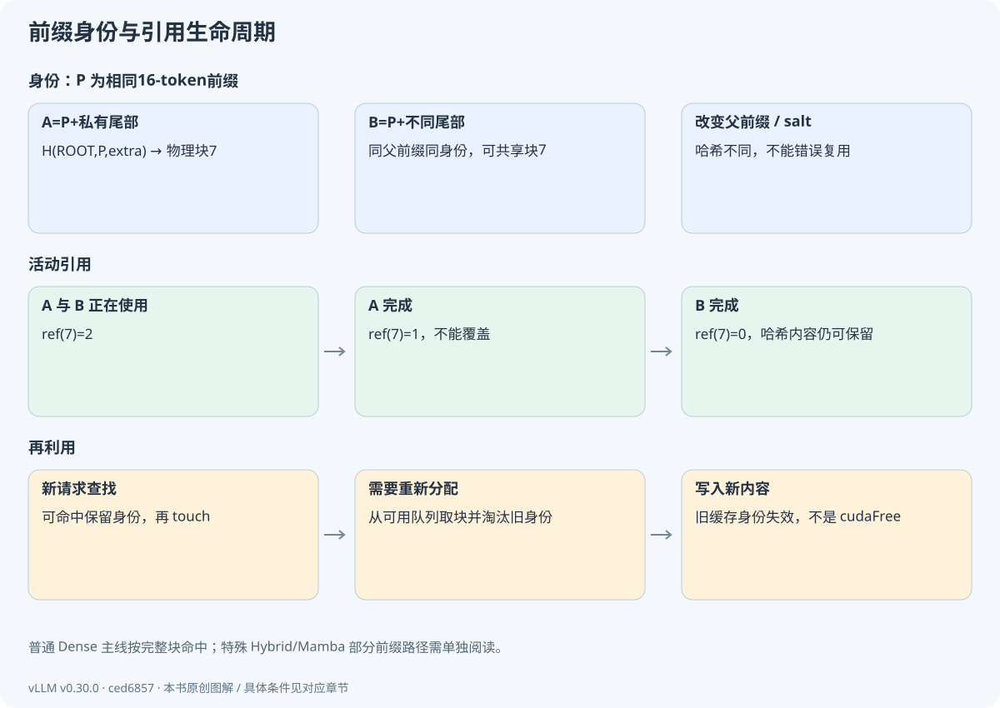
假设物理块 7 存放 P。A 使用时 ref=1，B 共享后 ref=2。A 结束降为 1，B 结束降为 0。ref=0 表示没有活动请求持有它，可以回收；块内容和哈希索引却可能仍保留，让下一请求命中。
真正重新分配该块时，BlockPool 必要时淘汰旧哈希，再把块交给新内容。free_blocks 不等于 cudaFree。GPU 大张量仍然常驻，变化的是块的所有权和可覆盖性。此区别直接关系到为何显存利用率不下降却没有泄漏。
把这一步对应到源码BlockPool.touch
命中已有缓存块时，如果 ref 为 0，先从可用队列移除，再增加引用。
vllm/v1/core/block_pool.py · L749–L764 · 固定 commit
在这里展开真实代码选段
本卡片展示完整符号范围。
749 def touch(self, blocks: Sequence[KVCacheBlock]) -> None:
750 """Touch a block increases its reference count by 1, and may remove
751 the block from the free queue. This is used when a block is hit by
752 another request with the same prefix.
753
754 Args:
755 blocks: A list of blocks to touch.
756 """
757 for block in blocks:
758 # ref_cnt=0 means this block is in the free list (i.e. eviction
759 # candidate), so remove it.
760 if block.ref_cnt == 0 and not block.is_null:
761 self.free_block_queue.remove(block)
762 block.ref_cnt += 1
763 if self.metrics_collector:
764 self.metrics_collector.on_block_accessed(block)把这一步对应到源码BlockPool.free_blocks
引用下降后，带缓存身份与不带身份的块采用不同回收顺序，不能简化为无差别“立即清空”。
vllm/v1/core/block_pool.py · L770–L800 · 固定 commit
在这里展开真实代码选段
这里只展示 L770–L795；完整函数至 L800，请打开本地源码阅读全部分支。
770 def free_blocks(self, ordered_blocks: Iterable[KVCacheBlock]) -> None:
771 """Free a list of blocks. The blocks should be ordered by their
772 eviction priority, where the first block will be evicted first.
773
774 Args:
775 ordered_blocks: A list of blocks to free ordered by their eviction
776 priority.
777 """
778 # Identify blocks with hash (LRU cache) and without it (never match APC)
779 blocks_to_evict_last = []
780 blocks_to_evict_first = []
781 other_pools: dict[BlockPool, list[KVCacheBlock]] = {}
782 for block in ordered_blocks:
783 if block.pool is not None and block.pool is not self:
784 other_pools.setdefault(block.pool, []).append(block)
785 continue
786 block.ref_cnt -= 1
787 if block.ref_cnt == 0 and not block.is_null:
788 if block.block_hash is None or not self.enable_caching:
789 # LIFO reuse of non-cached blocks for better GPU locality.
790 blocks_to_evict_first.append(block)
791 else:
792 # FIFO reuse of cached blocks for LRU eviction behavior.
793 blocks_to_evict_last.append(block)
794
795 # Blocks to reuse first are prepended to the front of the free queue.11.4 缓存带来收益，也带来约束
APC 主要减少重复前缀的 prefill 计算，不能消除每次新 token 查询历史 KV 的 decode 成本。命中率、命中 token 比例和最终延迟是不同指标；短前缀频繁命中不一定节省很多计算。冷缓存、热缓存和不同 salt 需要分别测量。
安全和正确性需要确认身份、内容完成、组兼容、引用以及传输状态。仅看 request_id 相同或可用块数变化，不能证明共享正确。生产路径中块表可能保留内容等价的不同物理块，并非一发现相同就强制合并所有旧表。
11.5 动手复查
python labs/run.py prefix检查要展示四个不同事实：A/B 的共享块哈希相等；改变父前缀或 salt 后哈希不同；ref=0 时索引仍可存在；重新分配时旧身份被移除。实验的哈希编码只演示语义，不与 vLLM 二进制格式互操作。
停一下，自己想一想块 7 的引用从 2 降到 1 时，谁还在用它？
还有一条活动请求。此时它不能被覆盖。之后降到 0，也仍可能保留缓存身份，等待复用或淘汰。
哈希确定内容身份，引用计数确定活动使用者；ref=0 后仍可保留可复用内容，重新分配时才可能淘汰旧身份。
理解检查 · A 结束后为什么不能直接覆盖 A/B 共享的块？
B 还持有引用，ref 仍大于 0。覆盖会破坏 B 的 Attention 历史。
理解检查 · nvidia-smi 中 KV 占用没下降，是缓存泄漏吗？
不能据此判断。物理缓存池通常常驻；应看活动引用、可用块、可淘汰身份和后续是否能再分配。
理解检查 · APC 和回答缓存有什么区别？
APC 复用模型中间 K/V，仍需计算未命中部分和生成；回答缓存复用最终答案，语义与失效策略不同。
CPU 侧已确定 token 数与地址。下一章把计划变为一组真正能交给 GPU 的张量。
回看本章的目标与输入输出
本章把“复用 KV”拆成四个问题：内容是否相同、数据是否完成、谁正在使用、何时可以覆盖。
本章交接
带着什么来：已有 KV 块及新请求前缀
本章怎样处理：哈希匹配、接纳、引用、淘汰
交给下一步：可安全共享的块及明确所有权
四、GPU 执行与输出 · 12
MRV2：持久状态如何变成批输入
这一章，从一个问题开始三条长短不同的请求，怎样放进同一批 GPU 输入？
本轮 A 算 1 个、B 算 3 个、C 算 4 个。把 8 个 token 排成一行很容易，难的是保留它们各自的位置、请求身份和 KV 地址。下面逐个构造这些索引。
12.1 为什么不能只堆叠三条变长序列
高效执行通常把本轮有效 token 拼成一个紧凑的一维 token 轴，而不是把所有请求补到同一长度。Model Runner 必须保存每个 token 属于哪条请求、处于该请求哪个位置、历史 KV 在哪里，还必须让各层 Attention 得到相同边界信息。
MRV2 为请求保留相对稳定的持久行；当前批次只通过 idx_mapping 选择这些行。一次调度只传必要增量，再从 GPU 状态构造输入。这样减少因每批重排而搬动大块持久状态，也引入 CPU/GPU 镜像一致性问题。
把这一步对应到源码GPUModelRunner.add_requests
观察新请求如何取得持久状态行、采样状态和块表，辨认全量初始化数据。
vllm/v1/worker/gpu/model_runner.py · L1120–L1175 · 固定 commit
在这里展开真实代码选段
这里只展示 L1120–L1145；完整函数至 L1175，请打开本地源码阅读全部分支。
1120 def add_requests(self, scheduler_output: SchedulerOutput) -> None:
1121 for new_req_data in scheduler_output.scheduled_new_reqs:
1122 assert new_req_data.prefill_token_ids is not None
1123 req_id = new_req_data.req_id
1124
1125 # Streaming input update: request already exists from a prior
1126 # chunk. Remove old state so it can be cleanly re-added below
1127 # with the updated prompt_token_ids and mm_features.
1128 self._remove_request(req_id)
1129
1130 prompt_len = new_req_data.prompt_len
1131 sampling_params = new_req_data.sampling_params
1132 self.req_states.add_request(
1133 req_id=req_id,
1134 prompt_len=prompt_len,
1135 all_token_ids=new_req_data.prefill_token_ids,
1136 num_computed_tokens=new_req_data.num_computed_tokens,
1137 max_tokens=sampling_params.max_tokens if sampling_params else 1, # type: ignore[arg-type]
1138 )
1139 req_index = self.req_states.req_id_to_index[req_id]
1140 if self.adaptive_verification is not None:
1141 self.adaptive_verification.add_request(req_index)
1142
1143 if self.pooling_runner is not None:
1144 assert new_req_data.pooling_params is not None
1145 self.pooling_runner.add_request(把这一步对应到源码GPUModelRunner.update_requests
观察旧请求进度和块表更新，以及归零/复制等设备操作的先后关系。
vllm/v1/worker/gpu/model_runner.py · L1177–L1215 · 固定 commit
在这里展开真实代码选段
这里只展示 L1177–L1202；完整函数至 L1215，请打开本地源码阅读全部分支。
1177 def update_requests(self, scheduler_output: SchedulerOutput) -> None:
1178 # Add new blocks and update num_computed_tokens for the existing requests.
1179 reqs = scheduler_output.scheduled_cached_reqs
1180 table_updates = scheduler_output.block_table_updates or {}
1181 for req_id, block_ids in table_updates.items():
1182 if (idx := self.req_states.req_id_to_index.get(req_id)) is not None:
1183 self.block_tables.append_block_ids(idx, block_ids, overwrite=True)
1184 num_computed_tokens_np = self.req_states.num_computed_tokens_np
1185 for req_id, num_computed_tokens, req_new_block_ids in zip(
1186 reqs.req_ids, reqs.num_computed_tokens, reqs.new_block_ids
1187 ):
1188 req_index = self.req_states.req_id_to_index[req_id]
1189 num_computed_tokens_np[req_index] = num_computed_tokens
1190 if req_new_block_ids is not None and req_id not in table_updates:
1191 self.block_tables.append_block_ids(
1192 req_index, req_new_block_ids, overwrite=False
1193 )
1194
1195 # Update CPU num_computed_prefill_tokens.
1196 np.minimum(
1197 self.req_states.num_computed_tokens_np,
1198 self.req_states.prefill_len.np,
1199 out=self.req_states.num_computed_prefill_tokens,
1200 )
1201
1202 # Zero GPU memory for freshly allocated cache blocks to prevent12.2 一个混合批次的完整账本
| 请求 | 持久行 | 本轮 token 数 | positions | seq_len | 块表 |
|---|---|---|---|---|---|
| A | 2 | 1 | [19] | 20 | [7,2] |
| B | 0 | 3 | [16,17,18] | 19 | [7,11] |
| C | 3 | 4 | [0,1,2,3] | 4 | [9] |
这里 A/B 假设共享前 16 个 token，表中 7 才能合法共享。批次顺序为 A/B/C，idx_mapping=[2,0,3]。拼接后 token 总数 8，query_start_loc=[0,1,4,8]，positions=[19,16,17,18,0,1,2,3]，seq_lens=[20,19,4]。query_start_loc 是本轮查询分段的前缀和；seq_lens 是各请求可见上下文长度，不是两种写法的同一个数字。
按 b=16 算 slot_mapping=[35,176,177,178,144,145,146,147]。本轮 A 的 1 个查询可以读其 20 个有效上下文位置，B 的 3 个查询遵守各自位置的因果可见性，C 的 4 个查询从头建立历史。把拼接后的 8 个 token 当成一条普通序列会造成跨请求信息泄漏。
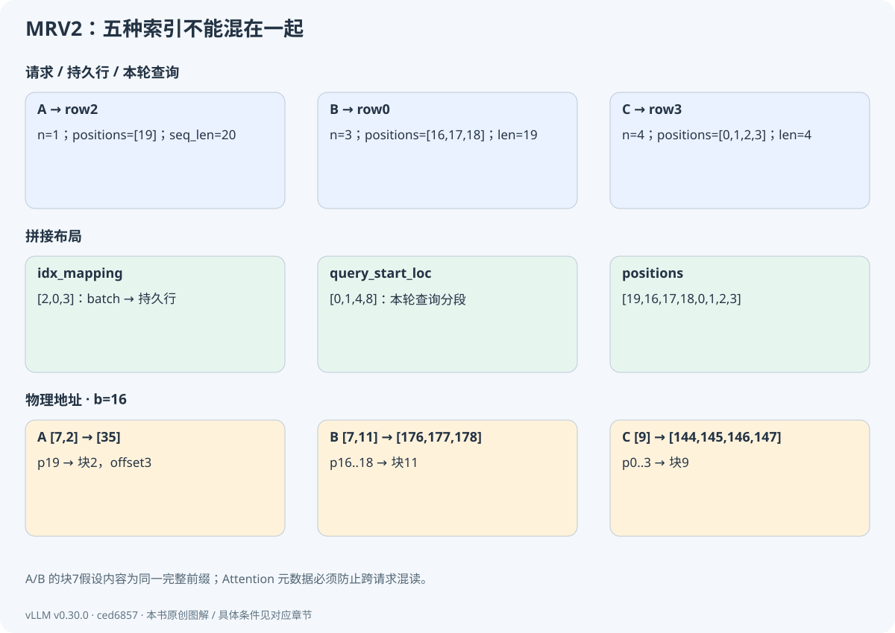
12.3 批次顺序可以变化
gather_batch_req_state 会按当前执行类型与 token 数等排序，再获取对应的持久行。不能假定 Scheduler 字典插入顺序、GPU 行顺序、输出行顺序永远相同。输入有 idx_mapping，输出有 req_id_to_index；两端都必须显式映射。
prepare_inputs 构造 IDs、位置、前缀和、长度和 logits_indices。普通生成通常每个完成输入前缀的请求取一个末位置隐藏状态；投机会取更多位置。图执行还可能补齐形状，真实 token 数和 padded token 数要分开。
把这一步对应到源码GPUModelRunner.gather_batch_req_state
核对排序与 idx_mapping；持久请求行不是本轮 batch 下标。
vllm/v1/worker/gpu/model_runner.py · L1217–L1268 · 固定 commit
在这里展开真实代码选段
这里只展示 L1217–L1242；完整函数至 L1268，请打开本地源码阅读全部分支。
1217 def gather_batch_req_state(
1218 self, scheduler_output: SchedulerOutput, dummy_run: bool
1219 ) -> tuple["BatchReqState | None", int | None]:
1220 """Gather CPU request state for the scheduled batch, in batch order.
1221 Returns (batch_state, uniform_decode_token_count)
1222 """
1223 num_tokens_per_req = scheduler_output.num_scheduled_tokens
1224 num_reqs = len(num_tokens_per_req)
1225 num_toks = scheduler_output.total_num_scheduled_tokens
1226 max_query_len = max(scheduler_output.num_scheduled_tokens.values())
1227
1228 if dummy_run:
1229 # Dummy batches are uniform by construction.
1230 return None, get_uniform_decode_token_count(
1231 num_reqs, num_toks, max_query_len, has_prefill=False
1232 )
1233
1234 draft_tokens = scheduler_output.scheduled_spec_decode_tokens
1235 # batch_idx -> req_id
1236 req_ids = sort_batch_req_ids(
1237 num_tokens_per_req, draft_tokens, self.decode_query_len
1238 )
1239
1240 numtoks_iter = map(num_tokens_per_req.__getitem__, req_ids)
1241 num_scheduled_tokens = np.fromiter(numtoks_iter, dtype=np.int32, count=num_reqs)
1242 把这一步对应到源码GPUModelRunner.prepare_inputs
按 prefix sum、IDs、positions/seq_lens、logits_indices、InputBatch 五段阅读。
vllm/v1/worker/gpu/model_runner.py · L1270–L1470 · 固定 commit
在这里展开真实代码选段
这里只展示 L1270–L1295；完整函数至 L1470，请打开本地源码阅读全部分支。
1270 def prepare_inputs(
1271 self,
1272 scheduler_output: SchedulerOutput,
1273 batch_req_state: "BatchReqState",
1274 batch_desc: BatchExecutionDescriptor,
1275 ) -> InputBatch:
1276 num_tokens = batch_req_state.num_tokens
1277 num_tokens_after_padding = max(num_tokens, batch_desc.num_tokens)
1278 assert num_tokens > 0
1279 if envs.VLLM_MOE_SKIP_PADDING:
1280 # Mark trailing cudagraph-padding rows so kernels can skip work for
1281 # them when supported.
1282 is_padding = self.input_buffers.is_padding
1283 is_padding[:num_tokens].fill_(False)
1284 is_padding[num_tokens:num_tokens_after_padding].fill_(True)
1285
1286 req_ids = batch_req_state.req_ids
1287 num_scheduled_tokens_np = batch_req_state.num_scheduled_tokens
1288 idx_mapping_np = batch_req_state.idx_mapping_np
1289 idx_mapping = async_tensor_h2d(idx_mapping_np, device=self.device)
1290 num_reqs = len(req_ids)
1291
1292 # Get the number of draft tokens for each request.
1293 draft_tokens = scheduler_output.scheduled_spec_decode_tokens
1294 num_draft_tokens_per_req = None
1295 if not draft_tokens:把这一步对应到源码GPUModelRunner.prepare_attn
观察块表和 slot mapping 被组织成 Attention 需要的元数据。
vllm/v1/worker/gpu/model_runner.py · L1472–L1491 · 固定 commit
在这里展开真实代码选段
本卡片展示完整符号范围。
1472 def prepare_attn(
1473 self, input_batch: InputBatch
1474 ) -> tuple[tuple[torch.Tensor, ...], torch.Tensor]:
1475 if self.pcp_manager is not None:
1476 return self.pcp_manager.prepare_attn(input_batch)
1477
1478 # Block tables: num_kv_cache_groups x [num_reqs_padded, max_num_blocks].
1479 block_tables = self.block_tables.gather_block_tables(
1480 input_batch.idx_mapping,
1481 num_reqs_padded=input_batch.num_reqs_after_padding,
1482 )
1483 # Slot mappings: [num_kv_cache_groups, num_tokens_padded].
1484 # Kernel pads beyond num_tokens with PAD_SLOT_ID.
1485 slot_mappings = self.block_tables.compute_slot_mappings(
1486 input_batch.idx_mapping,
1487 input_batch.query_start_loc,
1488 input_batch.positions,
1489 num_tokens_padded=input_batch.num_tokens_after_padding,
1490 )
1491 return block_tables, slot_mappings12.4 检查与排错
python labs/run.py pack --json手算结果必须逐项相符。再设想两条请求交换批次顺序：持久行不变，但 idx_mapping、query_start_loc 分段、请求到 logits 的映射都要相应变化。若只有生成 token 归属错乱而模型数值正常，先检查这些映射，而非立即改 Attention 公式。
停一下，自己想一想A 位于持久行 2、当前批下标 0、逻辑位置 19。这三个数矛盾吗？
不矛盾。它们分别描述存储中的请求行、这一批的顺序和序列中的位置；idx_mapping 与 positions 把它们接起来。
请求的持久行、当前批下标、逻辑 token 位置、拼接偏移和物理槽位，各管一件事。
理解检查 · idx_mapping=[2,0,3] 中的 2 是 token 位置吗？
不是，它是该批第一条请求在持久状态存储中的行索引。token 位置由 positions 表示。
理解检查 · query_start_loc=[0,1,4,8] 的 4 表示 B 的上下文只有 4 个 token 吗？
不是。4 是拼接查询中 B 分段的结束偏移；B 的有效上下文长度在例子中为 19。
理解检查 · graph padding 的无效槽位为什么不能随便当作真实位置写 KV？
它们不是有效输入，错误写入可能覆盖别的请求或无关位置。后端使用 PAD_ID 等屏蔽语义，需要与真实长度一致。
输入张量准备好后，下一章进入模型本体。我们将把线性代数形状与真实 Qwen3 实现对齐。
回看本章的目标与输入输出
你将手算 query_start_loc、positions、seq_lens、idx_mapping、slot_mapping，并区分这五类索引。
本章交接
带着什么来：SchedulerOutput 与 Worker 持久镜像
本章怎样处理：更新状态、排序、收集、构造输入/元数据
交给下一步：InputBatch 与可供各层使用的 Attention 元数据
四、GPU 执行与输出 · 13
模型本体：Qwen3 的一层如何计算
这一章，从一个问题开始准备好的 8 个 token 进入模型后，矩阵的形状怎样变化？
现在输入已经打包完成。我们把执行流程暂时放在一边，只跟着张量走：编号先查 embedding，再投影成 Q/K/V，经过 Attention 和 MLP，最后得到可用于预测的隐藏状态。
13.1 模型注册与 embedding
模型加载器根据配置的 architecture 解析实现类，模型调用接收 input_ids 或 inputs_embeds、positions，以及可能的 PP 中间状态。设本轮有效 token 数 T、隐藏维 D，embedding 将 IDs[T] 变成 H[T,D]。权重对所有请求共享；各请求的激活和 KV 必须通过元数据隔离。
推理中没有训练标签、交叉熵或优化器。某些性能统计里的“step”是引擎迭代，不是梯度训练步。本书微型模型虽然由训练得到权重，labs/trace 执行的仅是固定权重前向。
13.2 从一个小形状推到 Q/K/V
沿用上一章的混合批，本轮有 T=8 个有效 token。先把隐藏维缩到教学例子的 D=4，采用两头、每头两维。embedding 后是一张 8×4 的表：每行属于一个本轮 token。
Q 投影把这张表变成另一张 8×4 的表，再把每行四个数分成两组，就得到 [8,2,2]：8 个 token，2 个头，每头 2 维。K 和 V 也可以这样看。拆头改变的是组织方式，仍要保留每个数的 token 与头归属。
推广到实际模型，令查询头数为 Hq，KV 头数为 Hkv，单头维为 d。融合 QKV 投影一次产生 [T,(Hq+2Hkv)d]，随后拆成：
| 张量 | 形状 | 每个 token 保存什么 |
|---|---|---|
| Q | [T,Hq,d] | 所有查询头 |
| K | [T,Hkv,d] | 所有 KV 头的 K |
| V | [T,Hkv,d] | 所有 KV 头的 V |
这里 Hq 与 Hkv 可以不同。GQA 让多组查询头共享一组 K/V，因此 KV 存储要用 Hkv 来算。第 4 章公式里的“KV 头数”，在这里就找到了来由。
真实 Qwen3 还会对每头 Q/K 做 RMSNorm，再对 Q/K 应用 RoPE，随后才进入 Attention。V 不做同样的位置旋转。教学微型模型省略 Q/K Norm，尺寸推导可以借它练习，模型定义仍以 Qwen3 源码为准。
停一下，自己想一想把 A 和 B 在批次中的顺序换一下，RoPE 的位置也应该跟着换成拼接下标吗？
不应该。位置属于各自序列。打包改变执行布局，不应改变模型对同一条请求的位置含义。
把这一步对应到源码Qwen3Attention.forward
找融合投影、split、Q/K Norm、RoPE、Attention 与 o_proj，并把每处输入输出对上上面的形状。
vllm/model_executor/models/qwen3.py · L153–L170 · 固定 commit
在这里展开真实代码选段
本卡片展示完整符号范围。
153 def forward(
154 self,
155 positions: torch.Tensor,
156 hidden_states: torch.Tensor,
157 ) -> torch.Tensor:
158 qkv, _ = self.qkv_proj(hidden_states)
159 q, k, v = qkv.split([self.q_size, self.kv_size, self.kv_size], dim=-1)
160 # Add qk-norm
161 q_by_head = q.view(*q.shape[:-1], q.shape[-1] // self.head_dim, self.head_dim)
162 q_by_head = self.q_norm(q_by_head)
163 q = q_by_head.view(q.shape)
164 k_by_head = k.view(*k.shape[:-1], k.shape[-1] // self.head_dim, self.head_dim)
165 k_by_head = self.k_norm(k_by_head)
166 k = k_by_head.view(k.shape)
167 q, k = self.rotary_emb(positions, q, k)
168 attn_output = self.attn(q, k, v)
169 output, _ = self.o_proj(attn_output)
170 return output13.3 Attention、残差与 MLP
对于位置 i 的查询，分数为 q_i·k_j/√d，仅允许同请求且满足因果/窗口约束的 j。softmax 加权 V 后得到 [T,Hq,d]，展平并经 o_proj 回到 [T,D]。历史 K/V 来自缓存，本轮 K/V 也会写入缓存；跨层各有自己的值。
概念上的 Pre-Norm 层可写成 H1=H+Attention(Norm(H))，H2=H1+MLP(Norm(H1))。实际 Qwen3DecoderLayer 把 residual 作为单独变量传递，RMSNorm 可能同时做残差加法；不要按 Python 变量名误判“漏加了一次 residual”。MLP 使用导入的 Qwen2MLP/SwiGLU 组件，典型形式为 (SiLU(XWgate)⊙XWup)Wdown，中间宽度 F 与 D 不同。
把这一步对应到源码Qwen3DecoderLayer.forward
对照概念残差公式与融合实现，解释返回的 hidden_states、residual 为什么是一对。
vllm/model_executor/models/qwen3.py · L226–L246 · 固定 commit
在这里展开真实代码选段
本卡片展示完整符号范围。
226 def forward(
227 self,
228 positions: torch.Tensor,
229 hidden_states: torch.Tensor,
230 residual: torch.Tensor | None,
231 ) -> tuple[torch.Tensor, torch.Tensor]:
232 # Self Attention
233 if residual is None:
234 residual = hidden_states
235 hidden_states = self.input_layernorm(hidden_states)
236 else:
237 hidden_states, residual = self.input_layernorm(hidden_states, residual)
238 hidden_states = self.self_attn(
239 positions=positions,
240 hidden_states=hidden_states,
241 )
242
243 # Fully Connected
244 hidden_states, residual = self.post_attention_layernorm(hidden_states, residual)
245 hidden_states = self.mlp(hidden_states)
246 return hidden_states, residual13.4 末层隐藏状态到词表
多层处理结束还需最终归一化。普通生成只选择本次需要采样的位置，LM head 将 [R,D] 映射为 logits[R,V]，R 为要预测的位置数。这样不必为整段 prefill 的每个位置都生成完整词表分数；具体实现还受 prompt logprobs、投机及并行设置影响。
logits 是未归一化分数，不是 token ID，更不是字符串。下一章讨论 Attention 后端，随后再把 logits 交给采样器。这个顺序解释了“模型算完”与“用户拿到文本”之间还有多少工作。
把这一步对应到源码Qwen3ForCausalLM.compute_logits
定位 LM head 与 LogitsProcessor，确认它与 Transformer hidden state 的分工。
vllm/model_executor/models/qwen3.py · L330–L335 · 固定 commit
在这里展开真实代码选段
本卡片展示完整符号范围。
330 def compute_logits(
331 self,
332 hidden_states: torch.Tensor,
333 ) -> torch.Tensor | None:
334 logits = self.logits_processor(self.lm_head, hidden_states)
335 return logits13.5 本章检查
对混合批 T=8，自己写出 embedding、Q/K/V、Attention 输出、MLP 中间和 LM head 的所有形状。再回答：如果只改变请求的物理块号，模型数学上应否变化？答案应是只要地址映射仍指向相同内容，数学语义应不变，不能改变 RoPE 的逻辑位置。
分清模型数学结构与运行时布局。请求如何拼接可以变化，逻辑位置、可见历史与模型定义必须保持正确。
理解检查 · GQA 的 Hkv 减小后，Q 的头数一定同步减小吗？
不一定。查询头数可保持，多个 Q 头共享 KV 组；因此 KV 内存公式使用 Hkv。
理解检查 · 为什么 RoPE 不能使用拼接 token 的全局索引？
每条请求有自己的逻辑位置。拼接是执行布局，改变批次顺序不应改变模型的位置语义。
理解检查 · Qwen3 层返回两个张量，是否等于产生两个 token？
不是。它返回 hidden_states 与 residual 以支持融合计算；token 生成发生在后续 logits 与采样阶段。
Attention 调用已经出现。下一章越过模型 API，检查分页缓存和 FlashAttention 怎样在同一个执行路径中合作。
回看本章的目标与输入输出
本章解释推理引擎最终执行的函数。重点是张量形状、残差、GQA 和真实实现中的融合，不重新讲一遍训练流程。
本章交接
带着什么来：IDs/embedding、位置、缓存与元数据
本章怎样处理：embedding→多层 Attention/MLP→末层 norm
交给下一步：隐藏状态及更新后的逐层 KV
四、GPU 执行与输出 · 14
Attention 后端、KV 写入与内核
这一章，从一个问题开始历史分散在不同物理块里，Attention 为什么仍能正确读取？
上一章算出了 Q/K/V。这一章先回答“到哪里读写”，再回答“怎样少搬运数据”。分页地址和 FlashAttention 各解决一个问题，我们把它们放到同一次调用中看。
14.1 Attention 对象为什么还要一层后端
模型只想表达“按这些 Q/K/V 和位置执行注意力”，实际 GPU 路径还取决于 dtype、头维、缓存格式、硬件、窗口、量化和支持特性。Attention 层通过后端与 forward context 获得执行所需的元数据和缓存视图，后端再选择或调用内核。
forward context 将本轮共享信息传递给各层；层名等信息用于找到该层对应的缓存和元数据。若元数据或层映射错误，即便 qkv_proj 正确，也可能访问错误历史。分层抽象有成本，但使模型代码不必为每种 GPU 内核重写。
把这一步对应到源码Attention.forward
追踪 kv_cache、元数据、head reshape、KV 更新与 unified attention 调用；注意某些后端包含缓存更新，另一些由独立算子写入。
vllm/model_executor/layers/attention/attention.py · L485–L577 · 固定 commit
在这里展开真实代码选段
这里只展示 L485–L510；完整函数至 L577，请打开本地源码阅读全部分支。
485 def forward(
486 self,
487 query: torch.Tensor,
488 key: torch.Tensor,
489 value: torch.Tensor,
490 # For some alternate attention backends like MLA the attention output
491 # shape does not match the query shape, so we optionally let the model
492 # definition specify the output tensor shape.
493 output_shape: torch.Size | None = None,
494 output_dtype: torch.dtype | None = None,
495 ) -> torch.Tensor:
496 """
497 The KV cache is stored inside this class and is accessed via
498 `self.kv_cache`.
499
500 Attention metadata (`attn_metadata`) is set using a context manager in
501 the model runner's `execute_model` method. It is accessed via forward
502 context using
503 `vllm.forward_context.get_forward_context().attn_metadata`.
504 """
505 if output_dtype is None:
506 output_dtype = query.dtype
507 if self.query_quant is not None:
508 # quantizing with a simple torch operation enables
509 # torch.compile to fuse this into previous ops
510 # which reduces overheads during decoding.14.2 写入本轮 KV，读取完整可见历史
输入 A 的鱼处于位置 3。本层计算出 k3/v3，按 slot_mapping 写入物理槽，再让 q3 查询位置 0..3 的 K/V。prefill 则有多个查询位置，各有不同因果边界。Paged Attention 需要块表；计算不能把物理地址升序误当逻辑 token 升序。
缓存写入与 Attention 计算可能由不同算子完成，也可能在特定后端中结合。不要一概说“FlashAttention.forward 内部必然负责 KV 写入”。应以 Attention 层和被选择 backend 的约定核对。
把这一步对应到源码FlashAttentionImpl.forward
查 query_start_loc、seq_lens、block_table 和缓存布局的消费，理解变长查询与分页历史如何进入同一次调用。
vllm/v1/attention/backends/flash_attn.py · L1166–L1436 · 固定 commit
在这里展开真实代码选段
这里只展示 L1166–L1191；完整函数至 L1436，请打开本地源码阅读全部分支。
1166 def forward(
1167 self,
1168 layer: torch.nn.Module,
1169 query: torch.Tensor,
1170 key: torch.Tensor,
1171 value: torch.Tensor,
1172 kv_cache: torch.Tensor,
1173 attn_metadata: FlashAttentionMetadata,
1174 output: torch.Tensor,
1175 output_scale: torch.Tensor | None = None,
1176 output_block_scale: torch.Tensor | None = None,
1177 ) -> torch.Tensor:
1178 """Forward pass with FlashAttention.
1179
1180 Args:
1181 query: shape = [num_tokens, num_heads, head_size]
1182 key: shape = [num_tokens, num_kv_heads, head_size]
1183 value: shape = [num_tokens, num_kv_heads, head_size]
1184 kv_cache: shape =
1185 [num_blocks, num_kv_heads, block_size, 2 * head_size]
1186 attn_metadata: Metadata for attention.
1187 Returns:
1188 shape = [num_tokens, num_heads * head_size]
1189 NOTE: FP8 quantization, flash-attn expect the size of
1190 {q,k,v}_descale to be (num_sequences, num_kv_heads).
1191 We use torch's .expand() to avoid duplicating values14.3 不保存完整概率矩阵，怎样算出同一个结果
先回忆普通 Attention：算分数 S=QKᵀ，做 softmax 得到 P，再算 PV。直接写法容易把很大的 S/P 存到 HBM，也就是 GPU 的大容量显存中，后面又把它读回来。
FlashAttention 想减少这些中间读写。它把计算拆成小块，尽量在片上空间里处理，并只保留继续计算所需的统计量。要做到这一点，得先回答一个数学问题：分开算的 softmax，怎样拼回正确答案？
我们用一个独立的小算例，只看一个查询、两个历史位置，V 每个位置只留一个数。分数为 [1,2]，V 为 [10,20]。直接计算时，减去最大值 2，两个权重比例为 [exp(-1),1]，结果为：
O = (exp(-1)×10 + 1×20) / (exp(-1)+1) ≈ 17.311。这里的数只是用于推导归并，不是实际模型输出；显示舍入，计算保留完整精度。
现在把两个位置分成两块。每块分别记录最大分数 m、减去 m 后的指数和 l，以及用这些指数加权 V 的和 u：
| 分块 | m | l | u |
|---|---|---|---|
| 只含第一个位置 | 1 | 1 | 10 |
| 只含第二个位置 | 2 | 1 | 20 |
两块的归一化基准不同，不能直接把各自结果平均。先把基准统一到 m'=max(1,2)=2：第一块的 l/u 都乘 exp(-1)，第二块保持不变。合并后仍得到 l'=exp(-1)+1，u'=exp(-1)×10+20，最后 O=u'/l'。
一般地，旧统计为 (m,l,u)，新块为 (m_b,l_b,u_b)，可以这样合并：
m'=max(m,m_b)；l'=exp(m-m')l+exp(m_b-m')l_b；u'=exp(m-m')u+exp(m_b-m')u_b；最后输出 u'/l'。
停一下，自己想一想为什么连旧的加权和 u 也要乘那个缩放系数？
因为 u 和 l 使用同一组未归一化权重。改变基准后，两者必须一起缩放，才仍表示原来的比例；只改分母会改变答案。
于是，对每个查询行，只要维护 m/l/u，就能继续处理下一个块，不必把完整 S/P 写回显存。向量 V 的每个维度按同一组系数处理即可。
真实内核还要处理因果 mask、长度、空块和数值精度。FlashAttention 保持所对应的精确注意力计算，浮点运算顺序可能带来舍入差异；它减少的是中间读写，而非随意丢掉注意力连接。
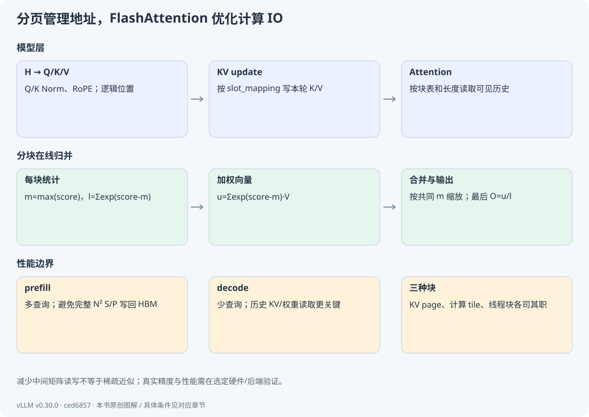
14.4 prefill 和 decode 的收益来源不同
长 prefill 有大量查询，避免 N² 中间矩阵通常非常重要，也更容易形成较大的矩阵计算。普通单 token decode 的查询长度很小，完整分数矩阵本来就只有一行；瓶颈常转向模型权重和长历史 KV 的读取、并行度与调度开销。分页寻址、KV 量化、split-K/多段归并和合适批量会影响性能。
因此不能把 FlashAttention 的 prefill 结果直接当作 decode 加速承诺。Paged KV 管“历史放哪里”，FlashAttention 管“计算如何分块和减少 IO”，CUDA thread block 管“线程怎么合作”；它们可共同存在，不是互斥的三款算法。
14.5 数值实验
python labs/run.py attention实验用与 trace 相同的微型模型最后查询，比较直接 softmax 与两段在线归并的结果。检查是两头输出在 float64 下最大误差小于 1e-12，并能说明误差阈值不是 BF16 GPU 的承诺。这里没有测量真实 HBM 流量，真实 IO 需 profiler 证据。
分页管理存储地址，FlashAttention 优化计算过程的 IO。二者可以合作，线程块则是另一层 GPU 执行组织。
理解检查 · FlashAttention 为什么通常不需要保存完整概率矩阵？
每个查询行的归一化与加权和可用 m/l/u 在线合并；最终只需输出和必要统计，不必将所有 P 写回 HBM。
理解检查 · 分页 KV 是否意味着 Attention 只看一页历史？
不是。块表让内核按逻辑顺序访问所有可见块；窗口等模型规则才决定可见范围。
理解检查 · 如何判断 decode 是否受内存带宽限制？
需要结合长度/批量扫参、kernel 时间、有效读写量与 profiler 指标；不能仅凭“decode 通常 memory-bound”给当前实验下结论。
Attention 和整层模型已经得到隐藏状态。下一章从 logits 出发解释一次采样及其状态更新。
回看本章的目标与输入输出
目标是把模型层的 Attention 调用追到后端，同时解释分页、FlashAttention 和 CUDA 线程组织分别优化什么。
本章交接
带着什么来：Q/K/V、slot mapping、块表与长度
本章怎样处理：正确写 KV 并用后端执行可见 Attention
交给下一步：模型所需的 Attention 输出
四、GPU 执行与输出 · 15
logits、采样与生成规则
这一章，从一个问题开始模型交出一排分数，为什么还不能直接把它显示成一句话？
假设词表里的每个 token 都有一个分数。还要决定取最大项还是随机选择、有哪些候选被禁止，以及当前输入是否已处理完。采样就在这些条件下选出有效的新编号。
15.1 每个请求选择哪些隐藏行
prepare_inputs 的 logits_indices 指出需要取哪些 hidden state。普通完整 prefill/decode 对每个可生成请求取一个末位置；prompt logprobs 和投机需要其他位置。LM head 产生词表分数后，还要施加约束和采样参数。
采样器可能为了统一执行布局计算候选，但未完成的 prefill chunk 的 num_sampled 必须为 0。C 只算到输入中途时，该位置的后继是输入里的后续 token，不应冒充用户最终续写。MRV2 的采样代码明确处理这一点。
把这一步对应到源码GPUModelRunner.sample
从 hidden_states 的 logits_indices 到 model.compute_logits，再到语法掩码、普通或拒绝采样器。
vllm/v1/worker/gpu/model_runner.py · L1512–L1588 · 固定 commit
在这里展开真实代码选段
这里只展示 L1512–L1537；完整函数至 L1588，请打开本地源码阅读全部分支。
1512 def sample(
1513 self,
1514 hidden_states: torch.Tensor,
1515 input_batch: InputBatch,
1516 grammar_output: GrammarOutput | None,
1517 ) -> tuple[SamplerOutput, torch.Tensor, torch.Tensor]:
1518 shard_metadata = None
1519 global_input_batch = input_batch
1520 if self.batch_sharder is not None:
1521 # Shard the inputs along the batch dimension to sample in parallel
1522 # across TP ranks.
1523 input_batch, sorted_logits_indices, grammar_output, shard_metadata = (
1524 self.batch_sharder.shard_sampler_inputs(input_batch, grammar_output)
1525 )
1526 # The hidden states must be gathered in rank-owner-sorted order
1527 # before computing the partial-vocab logits, so that the all-to-all
1528 # produces full-vocab logits for just the locally-owned requests.
1529 sample_hidden_states = hidden_states[sorted_logits_indices]
1530 local_logits = self.model.compute_logits_local(sample_hidden_states)
1531 logits = all_to_all_logits(local_logits, shard_metadata)
1532 logits = logits[:, : self.vocab_size]
1533 else:
1534 sample_hidden_states = hidden_states[input_batch.logits_indices]
1535 logits = self.model.compute_logits(sample_hidden_states)
1536
1537 if grammar_output is not None:把这一步对应到源码Sampler.__call__
关注 num_sampled 与 prefill 完成条件，区分候选计算与实际接受的输出。
vllm/v1/worker/gpu/sample/sampler.py · L122–L207 · 固定 commit
在这里展开真实代码选段
这里只展示 L122–L147；完整函数至 L207，请打开本地源码阅读全部分支。
122 def __call__(
123 self,
124 logits: torch.Tensor,
125 input_batch: InputBatch,
126 ) -> SamplerOutput:
127 expanded_idx_mapping = input_batch.expanded_idx_mapping
128 idx_mapping = input_batch.idx_mapping
129 idx_mapping_np = input_batch.idx_mapping_np
130 cu_num_logits_np = input_batch.cu_num_logits_np
131 expanded_local_pos = input_batch.expanded_local_pos
132 pos = input_batch.positions[input_batch.logits_indices]
133 input_ids = input_batch.input_ids[input_batch.logits_indices]
134
135 # NOTE(woosuk): We intentionally compute num_nans before sampling to make clear
136 # that num_nans is computed before applying penalties and temperature.
137 num_nans = get_num_nans(logits) if self.compute_nans else None
138
139 logprobs_dims = self.get_logprobs_dims(idx_mapping_np)
140
141 sampled, processed_logits = self.sample(
142 logits,
143 expanded_idx_mapping,
144 idx_mapping,
145 idx_mapping_np,
146 pos,
147 input_ids,15.2 参数作用于分数，不修改权重
MRV2 apply_sampling_params 将分数转成适合处理的精度，再按该路径施加 bias、allowed token/min token、penalties、bad words、思考预算、温度及过滤等规则。采样后权重不变；同一模型可因参数不同产生不同 token。
温度 T>0 时常见表达为 softmax(logits/T)；T 小会使分布更尖。vLLM 允许 temperature=0 表示贪心路径，不是做除以零。top_k 保留高分候选，top_p 按概率累计质量截断；具体组合顺序和后端实现应以本版本代码为准。不要把概念公式当作所有采样器都真实 materialize 了完整 softmax。
把这一步对应到源码Sampler.apply_sampling_params
沿参数处理顺序阅读；注意某些调用通过 skip_top_k_top_p 把过滤交给后续采样后端。
vllm/v1/worker/gpu/sample/sampler.py · L209–L274 · 固定 commit
在这里展开真实代码选段
这里只展示 L209–L234；完整函数至 L274，请打开本地源码阅读全部分支。
209 def apply_sampling_params(
210 self,
211 logits: torch.Tensor,
212 expanded_idx_mapping: torch.Tensor,
213 idx_mapping: torch.Tensor,
214 idx_mapping_np: np.ndarray,
215 pos: torch.Tensor,
216 input_ids: torch.Tensor,
217 expanded_local_pos: torch.Tensor,
218 skip_top_k_top_p: bool = False,
219 ) -> torch.Tensor:
220 if not np.any(self.needs_logits_processing[idx_mapping_np]):
221 return logits
222
223 # Copy logits to a new FP32 tensor.
224 logits = torch.empty_like(logits, dtype=torch.float32).copy_(logits)
225
226 # Apply logit bias (e.g., allowed_token_ids, min_tokens) in place.
227 self.logit_bias_state.apply_logit_bias(
228 logits, expanded_idx_mapping, idx_mapping_np, pos
229 )
230
231 # Apply penalties in place.
232 self.penalties_state.apply_penalties(
233 logits,
234 expanded_idx_mapping,把这一步对应到源码Sampler.sample
观察选择 FlashInfer 等后端的条件，以及 greedy、显式 seed、logprob 模式如何影响分支。
vllm/v1/worker/gpu/sample/sampler.py · L276–L318 · 固定 commit
在这里展开真实代码选段
这里只展示 L276–L301；完整函数至 L318，请打开本地源码阅读全部分支。
276 def sample(
277 self,
278 logits: torch.Tensor,
279 expanded_idx_mapping: torch.Tensor,
280 idx_mapping: torch.Tensor,
281 idx_mapping_np: np.ndarray,
282 pos: torch.Tensor,
283 input_ids: torch.Tensor,
284 expanded_local_pos: torch.Tensor,
285 return_logprobs: bool = False,
286 ) -> tuple[torch.Tensor, torch.Tensor]:
287 processed_logits = self.apply_sampling_params(
288 logits,
289 expanded_idx_mapping,
290 idx_mapping,
291 idx_mapping_np,
292 pos,
293 input_ids,
294 expanded_local_pos,
295 skip_top_k_top_p=True,
296 )
297 top_k, top_p = self.sampling_states.get_top_k_top_p(
298 expanded_idx_mapping, idx_mapping_np
299 )
300 use_flashinfer = self.use_flashinfer and not (
301 # Don't use FI sampler if no requests use top_k/top_p, if there are15.3 一个十二维 logits 的实际输出
python labs/run.py trace --json实验先打印 prefill 末行的 12 维 logits 与概率，最大项为 8；下一轮用鱼执行，最大项为 1。展示保留约 3 位小数，计算始终使用完整 Python float 精度。这里使用贪心，因此无随机采样不确定性；真实模型实验需保存 seed、版本和后端，且不能承诺跨设备逐位一致。
raw logprobs 与施加约束后的 processed logprobs 表示不同对象。用模型原始概率评估困惑度时，不能误把经过 top_p/penalty 的采样分布当作未加工模型分布。
15.4 约束、结构化输出与投机接口
结构化输出可通过语法状态生成允许 token 掩码；掩码必须对应当前接受的前缀。投机一次验证多个位置，再用接受/拒绝逻辑决定实际提交哪些 token，并修正进度、KV 与占位计数。本章只说明它们在哪个数据约定中接入，完整算法边界在扩展章说明。
采样结果先是 token IDs 和统计，核心要更新历史并判定 stop，前端要解码。一个 ID 未必对应一个可立刻显示的完整字符，最终字符串仍未产生。
停一下，自己想一想一条请求尚未处理完输入，能不能把中间位置采到的候选当成最终续写？
不能。只有到达可生成边界的有效采样才应提交；未完成 prefill chunk 的有效采样数量是 0。
logits、处理后的分布、被接受的 token 和显示文本，是接连发生的不同阶段。
理解检查 · temperature=0 与把 logits 除以 0 有何区别？
vLLM 用显式贪心逻辑选择最大项；它不是执行数学上非法的除法。
理解检查 · 未完成 prefill chunk 为什么不能提交一个生成 token？
当前最后计算位置不是完整输入的末位置，提交它会跳过尚未处理的输入；采样候选必须被抑制为无有效输出。
理解检查 · top_p 改变后模型权重是否变化？
不变。它改变从当前 logits 选择输出的规则，后续因生成历史不同又会影响后续输入。
下一章把 ID 变成文本，完整追踪 EOS、stop 字符串、客户端取消与资源回收。
回看本章的目标与输入输出
本章区分模型分布、处理后的采样分布和最终 token，并解释为什么未完成 prefill 不能输出一个“猜到的答案”。
本章交接
带着什么来：末层隐藏状态与采样规则
本章怎样处理：选择 logits 行、施加约束、选择有效 token
交给下一步：ModelRunnerOutput 中的采样结果与统计
四、GPU 执行与输出 · 16
结果回填、解码、停止与清理
这一章，从一个问题开始用户已经看见结束，为什么系统还可能继续处理这条请求？
A 选出了 EOS，或者用户中途关闭页面。输出流可以结束，但已经提交的 GPU 工作、KV 引用与 Worker 状态还需要各自收尾。我们沿返回链把这些时间点分开。
16.1 结果先回核心账本
Scheduler.update_from_output 根据请求映射取得采样结果，扣除在途 token，处理投机修正或异常，再更新请求历史和停止状态。普通 EOS、长度上限及显式 stop ID 可以在核心判断。A 生成鱼后继续；生成 EOS 后标记 FINISHED_STOPPED，产生最终核心输出。
注意采样 EOS 时，EOS 的 KV 尚未计算，也无需再计算；停止只依赖它已被选择。核心已知序列长度为 5，computed 仍为 4。正常释放从活动请求映射删除对象，并不要求将所有旧字段归零。
把这一步对应到源码Scheduler.update_from_output
按行映射、在途计数、有效采样、停止/释放、构造核心输出阅读，遇到 spec/connector 分支单独标记。
vllm/v1/core/sched/scheduler.py · L1874–L2291 · 固定 commit
在这里展开真实代码选段
这里只展示 L1874–L1899；完整函数至 L2291，请打开本地源码阅读全部分支。
1874 def update_from_output(
1875 self,
1876 scheduler_output: SchedulerOutput,
1877 model_runner_output: ModelRunnerOutput,
1878 ) -> dict[int, EngineCoreOutputs]:
1879 sampled_token_ids = model_runner_output.sampled_token_ids
1880 logprobs = model_runner_output.logprobs
1881 prompt_logprobs_dict = model_runner_output.prompt_logprobs_dict
1882 num_scheduled_tokens = scheduler_output.num_scheduled_tokens
1883 pooler_outputs = model_runner_output.pooler_output
1884 num_nans_in_logits = model_runner_output.num_nans_in_logits
1885 kv_connector_output = model_runner_output.kv_connector_output
1886 ec_connector_output = model_runner_output.ec_connector_output
1887 cudagraph_stats = model_runner_output.cudagraph_stats
1888
1889 # Every GPU write enqueued by this and earlier steps has completed, so it is
1890 # safe to return deferred-free blocks to the pool.
1891 if self.defer_block_free and scheduler_output.total_num_scheduled_tokens > 0:
1892 self.processed_step_seq += 1
1893 self._drain_deferred_frees()
1894
1895 perf_stats: PerfStats | None = None
1896 if self.perf_metrics and self.perf_metrics.is_enabled():
1897 perf_stats = self.perf_metrics.get_step_perf_stats_per_gpu(scheduler_output)
1898
1899 outputs: dict[int, list[EngineCoreOutput]] = defaultdict(list)把这一步对应到源码check_stop
比较 EOS、显式 stop token 和长度上限；不要把所有结束原因都写成 EOS。
vllm/v1/core/sched/utils.py · L94–L136 · 固定 commit
在这里展开真实代码选段
这里只展示 L94–L119；完整函数至 L136，请打开本地源码阅读全部分支。
94 def check_stop(request: Request, max_model_len: int) -> bool:
95 assert not request.pooling_params
96
97 sampling_params = request.sampling_params
98 assert sampling_params is not None
99
100 last_token_id = request.output_token_ids[-1]
101 if last_token_id == sampling_params.eos_token_id:
102 request.status = RequestStatus.FINISHED_STOPPED
103 return True
104
105 if last_token_id in (sampling_params.stop_token_ids or ()):
106 request.status = RequestStatus.FINISHED_STOPPED
107 request.stop_reason = last_token_id
108 return True
109
110 if (
111 request.num_tokens >= max_model_len
112 or request.num_output_tokens >= request.max_tokens
113 ):
114 request.status = RequestStatus.FINISHED_LENGTH_CAPPED
115 return True
116
117 # Note(arpera):
118 # Order of checks is important for min_tokens
119 # If you decide to change the order, first look at these PRs please:16.2 文本由前端增量解码
OutputProcessor 查找前端状态，更新增量 detokenizer，构造 RequestOutput。字节级子词可能暂时不组成完整字符，因此每次 token 到达不保证产生可显示字符。stop 字符串还可能跨 token 边界出现，需要在新旧文本连接处检查。
若 stop 字符串在前端被识别，而核心尚未停止，OutputProcessor 返回需 abort 的内部 ID。输出处理任务把 ABORT 发回核心。于是“用户已经看到结束”与“核心已接受取消并完成资源回收”之间存在明确的消息路径。
把这一步对应到源码OutputProcessor.process_outputs
跟踪解码、输出队列、finished 清理和 reqs_to_abort 的产生，区分 num_cached_tokens 统计与真实 KV 长度。
vllm/v1/engine/output_processor.py · L629–L758 · 固定 commit
在这里展开真实代码选段
为避免只看到长签名，本卡展示关键处理选段；省略了其他分支。请打开完整源码核对控制流与条件。
--- L689–L722（非连续选段；完整上下文见源码）---
689 )
690 req_state.is_prefilling = False
691
692 if engine_core_output.spec_decode_metrics is not None:
693 req_state.spec_decode_metrics = engine_core_output.spec_decode_metrics
694
695 if pooling_output is None:
696 assert req_state.detokenizer is not None
697 assert req_state.logprobs_processor is not None
698 if engine_core_output.new_sampling_mask is not None:
699 req_state.sampling_mask_chunks.append(
700 engine_core_output.new_sampling_mask
701 )
702 # 2) Detokenize the token ids into text and perform stop checks.
703 stop_string = req_state.detokenizer.update(
704 new_token_ids, finish_reason == FinishReason.STOP
705 )
706 if stop_string:
707 finish_reason = FinishReason.STOP
708 stop_reason = stop_string
709
710 # 3) Compute sample and prompt logprobs for request,
711 # if required.
712 req_state.logprobs_processor.update_from_output(engine_core_output)
713
714 # 4) Create and handle RequestOutput objects.
715 if request_output := req_state.make_request_output(
716 new_token_ids,
717 pooling_output,
718 finish_reason,
719 stop_reason,
720 kv_transfer_params,
721 ec_transfer_params,
722 ):
--- L733–L752（非连续选段；完整上下文见源码）---
733 # Free completed requests.
734 if finish_reason is not None:
735 if req_state.streaming_input:
736 if req_state.input_chunk_queue:
737 update = req_state.input_chunk_queue.popleft()
738 req_state.apply_streaming_update(update)
739 else:
740 req_state.input_chunk_queue = None
741 else:
742 self._finish_request(req_state)
743 if not engine_core_output.finished:
744 # If req not finished in EngineCore, but Detokenizer
745 # detected stop string, abort needed in EngineCore.
746 reqs_to_abort.append(req_id)
747
748 # Track per-request stats
749 self._update_stats_from_finished(
750 req_state, finish_reason, iteration_stats
751 )
752 if self.tracing_enabled:把这一步对应到源码BaseIncrementalDetokenizer.update
关注 stop 字符串检查范围、输出截断、token 历史与文本表示的区别。
vllm/v1/engine/detokenizer.py · L96–L143 · 固定 commit
在这里展开真实代码选段
这里只展示 L96–L121；完整函数至 L143，请打开本地源码阅读全部分支。
96 def update(self, new_token_ids: list[int], stop_terminated: bool) -> str | None:
97 """
98 Update RequestState for the request_id by:
99 1) Detokenize the new token ids incrementally.
100 2) Evaluate stop criteria.
101
102 Return matched stop string or None.
103 """
104 if not new_token_ids:
105 # Skip detokenization if no new token ids.
106 return None
107
108 if stop_terminated and not self.include_stop_str_in_output:
109 # If stop-terminated, exclude last token from detokenization
110 # based on include_stop_str_in_output parameter.
111 skipped_stop_token_id = new_token_ids[-1]
112 new_token_ids = new_token_ids[:-1]
113 else:
114 skipped_stop_token_id = None
115
116 # 1) Detokenize the new token ids incrementally.
117 stop_check_offset = len(self.output_text)
118 for new_token_id in new_token_ids:
119 self.token_ids.append(new_token_id)
120 self.output_text += self.decode_next(new_token_id)
121 # Support min_tokens, see https://github.com/vllm-project/vllm/pull/2201416.3 取消不能直接覆盖正在写的内存
用户断开会触发生成器取消清理并发送 abort。核心在处理结果前排空取消队列，防止接受过时输出。块是否可立刻归还还受最后调度序号与已处理序号控制；存在 GPU 在途写入时，释放需要延迟。
随后 SchedulerOutput.finished_req_ids 告知 Worker 删除持久请求状态。KV 块归还的是引用和分配资格，GPU 缓存大张量仍在。若块有可复用缓存身份，ref=0 也可能保留内容。
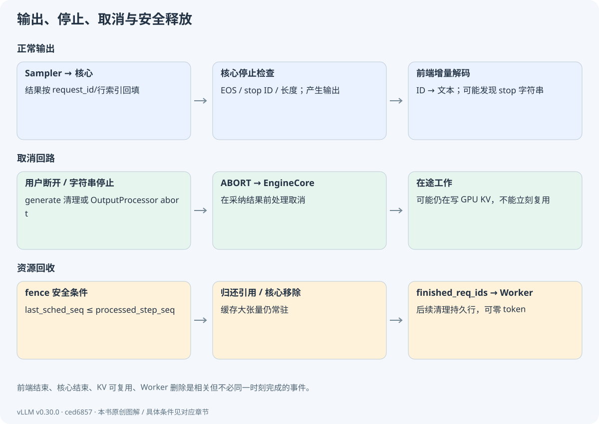
把这一步对应到源码Scheduler._request_blocks_can_be_freed
检查 last_sched_seq 与 processed_step_seq 的安全条件；它保护的是 GPU 在途写入与内存复用。
vllm/v1/core/sched/scheduler.py · L2603–L2608 · 固定 commit
在这里展开真实代码选段
本卡片展示完整符号范围。
2603 def _request_blocks_can_be_freed(self, request: Request) -> bool:
2604 # We must defer freeing blocks if an async kv connector may
2605 # write to them immediately (not ordered with GPU stream).
2606 return not self.defer_block_free or (
2607 request.last_sched_seq <= self.processed_step_seq
2608 )把这一步对应到源码Scheduler._free_request
确认连接器可能延迟释放，finished IDs 与核心请求删除也不是一个概念。
vllm/v1/core/sched/scheduler.py · L2561–L2588 · 固定 commit
在这里展开真实代码选段
这里只展示 L2561–L2586；完整函数至 L2588，请打开本地源码阅读全部分支。
2561 def _free_request(
2562 self, request: Request, delay_free_blocks: bool = False
2563 ) -> tuple[dict[str, Any] | None, dict[str, Any] | None]:
2564 assert request.is_finished()
2565
2566 self._inflight_prefills.discard(request)
2567 connector_delay_free_blocks, kv_xfer_params = self._connector_finished(request)
2568
2569 # EC Connector: mirror the KV hook. The contract requires firing
2570 # before the encoder cache is freed so the connector can inspect
2571 # per-request state (e.g. which mm_hashes it recorded during
2572 # save_caches()) and emit ec_transfer_params for the response body.
2573 ec_xfer_params: dict[str, Any] | None = None
2574 if self.ec_connector is not None:
2575 ec_delay_free, ec_xfer_params = self.ec_connector.request_finished(request)
2576 connector_delay_free_blocks |= ec_delay_free
2577
2578 self.encoder_cache_manager.free(request)
2579 request_id = request.request_id
2580 self.finished_req_ids.add(request_id)
2581 if self.finished_req_ids_dict is not None:
2582 self.finished_req_ids_dict[request.client_index].add(request_id)
2583
2584 delay_free_blocks |= connector_delay_free_blocks
2585 if not delay_free_blocks:
2586 self._free_blocks(request)16.4 端到端检查
现在重新运行 trace，依次指出：提交、两次调度、两次设备完成、两次核心更新请求记录、结束资源归还和零 token Worker 清理。再在源码中找到对应数据约定。教材模拟没有 HTTP 网络和真实 CUDA，因此它验证的是控制/数值示例；A100 实验才验证真实进程与设备路径。
完整请求理解的标准是：你能解释每个 token 在哪一轮作为输入、何时有 KV、何时输出、谁判定停止、谁拥有待清理状态。只会画 API→GPU→API 三个框还不够。
停一下，自己想一想EOS 已经被选出，是否还需要再送它进模型，以便给它建立 KV？
本书普通结束路径不需要。EOS 用来判定结束，不再产生下一轮；因此已知 token 数可以比实际 KV 前缀多一个。
停止输出与安全回收不必同一时刻发生。迟到结果需要正确处理，正在被写入的空间不能提前复用。
理解检查 · 核心 EOS 停止与 stop 字符串停止在哪里不同？
EOS/stop ID 可由核心判断；字符串需增量解码后在前端识别，必要时反向 abort 核心。
理解检查 · 客户端断开为何不等于 CUDA kernel 已停止？
CPU 取消传播与 GPU 执行是不同机制；已提交工作可能继续，系统需要忽略过时结果并延迟安全释放。
理解检查 · 已完成请求从核心 requests 删除后，为什么还需要 finished_req_ids？
Worker 有独立的持久状态镜像，必须通过后续计划获知结束并清理。跨层状态不会因删除 Python 对象自动同步。
单请求闭环已经完成。后续章节在同一架构上逐项增加重叠、图执行和多卡，检验哪些假设必须改变。
回看本章的目标与输入输出
本章闭合第一条请求：从采样输出回到用户，并分清核心停止与前端字符串停止。
本章交接
带着什么来：模型结果与原调度计划
本章怎样处理：归账、停止、增量解码、路由和安全清理
交给下一步：用户文本、终止原因及资源生命周期闭合
五、架构扩展与性能路径 · 17
异步调度与两代 Model Runner
这一章，从一个问题开始怎样让 CPU 少等 GPU，同时又不把前后两轮的状态弄混？
同步流程已经清楚了。现在想让 CPU 在旧批执行时准备后续工作。好处是减少空等；新增的难题是：某些结果还没回来，系统必须明确记录哪些进度只是预期。
17.1 三种异步是三回事
HTTP async 让前端等待 I/O 时服务其他连接；引擎异步调度让 CPU 准备与 GPU 执行交错；CUDA stream 的异步提交则涉及设备工作与主机的关系。它们可以同时存在，但一个成立不推出其他两个成立。
EngineCore 根据 max_concurrent_batches 选择队列路径。固定版本中，PP、async_scheduling、MRV2 都影响并发批次上限；单卡同步主线为 1。step_with_batch_queue 可以先推进后续工作，再等待最早的已提交批结果。队列顺序与请求依赖必须一致。
把这一步对应到源码VllmConfig.max_concurrent_batches
读分支而非记默认数字；确认 PP、MRV2 和 async_scheduling 的组合。
vllm/config/vllm.py · L588–L599 · 固定 commit
在这里展开真实代码选段
本卡片展示完整符号范围。
588 @property
589 def max_concurrent_batches(self) -> int:
590 # PP requires PP-size concurrent batches to fill the pipeline.
591 # Async scheduling requires 2 concurrent batches to overlap.
592 pp_size = self.parallel_config.pipeline_parallel_size
593 if self.scheduler_config.async_scheduling:
594 if self.use_v2_model_runner:
595 return pp_size + 1
596 # V1 Model Runner does not fully support async scheduling with PP.
597 if pp_size <= 1:
598 return 2
599 return pp_size把这一步对应到源码EngineCore.step_with_batch_queue
跟踪队列入队、取旧 Future、语法就绪和结果回填；每份输出必须与原计划配对。
vllm/v1/engine/core.py · L630–L744 · 固定 commit
在这里展开真实代码选段
这里只展示 L630–L655；完整函数至 L744，请打开本地源码阅读全部分支。
630 def step_with_batch_queue(
631 self,
632 ) -> tuple[dict[int, EngineCoreOutputs] | None, bool]:
633 """Schedule and execute batches with the batch queue.
634 Note that if nothing to output in this step, None is returned.
635
636 The execution flow is as follows:
637 1. Try to schedule a new batch if the batch queue is not full.
638 If a new batch is scheduled, directly return an empty engine core
639 output. In other words, fulfilling the batch queue has a higher priority
640 than getting model outputs.
641 2. If there is no new scheduled batch, meaning that the batch queue
642 is full or no other requests can be scheduled, we block until the first
643 batch in the job queue is finished.
644 3. Update the scheduler from the output.
645 """
646
647 batch_queue = self.batch_queue
648 assert batch_queue is not None
649
650 # Try to schedule a new batch if the batch queue is not full, but
651 # the scheduler may return an empty batch if all requests are scheduled.
652 # Note that this is not blocking.
653 assert len(batch_queue) < self.batch_queue_size
654
655 model_executed = False17.2 输出占位为何出现
下一轮准备时，前一轮采样结果可能尚未回到 CPU。AsyncScheduler 用 num_output_placeholders 等状态表示预期输出，并与 Runner 的 GPU 端状态配合。占位不是已经知道了具体 token ID；GPU 侧可在依赖满足后使用最新采样 ID 继续准备。
如果请求被取消、抢占、投机拒绝或语法不能推进，先前乐观假设需要撤销或跳过。计数器、缓存发布和释放必须排除未完成/未接受区域。只把同步调度器“放到另一个线程”无法解决这些语义问题。
把这一步对应到源码AsyncScheduler._update_after_schedule
在基础提前记账外，检查什么时候增加输出占位，以及 chunk/spec/PP 对它的影响。
vllm/v1/core/sched/async_scheduler.py · L19–L49 · 固定 commit
在这里展开真实代码选段
这里只展示 L19–L44；完整函数至 L49，请打开本地源码阅读全部分支。
19 def _update_after_schedule(self, scheduler_output: SchedulerOutput) -> None:
20 super()._update_after_schedule(scheduler_output)
21 spec_decode_tokens = scheduler_output.scheduled_spec_decode_tokens
22 # Use the latest num of scheduled draft tokens in next step as placeholder.
23 self._spec_token_placeholders = [
24 -1
25 ] * scheduler_output.num_spec_tokens_to_schedule
26 for req_id in scheduler_output.num_scheduled_tokens:
27 request = self.requests[req_id]
28 if request.is_prefill_chunk:
29 continue
30
31 scheduler_output.pending_structured_output_tokens |= (
32 request.use_structured_output and request.num_output_placeholders > 0
33 )
34 # The request will generate num_sampled_tokens_per_step new tokens
35 # plus num_spec_tokens in this scheduling step. Diffusion has no AR
36 # bonus token (num_sampled_tokens_per_step == 0) — only the canvas
37 # (spec) tokens.
38 cur_num_spec_tokens = len(spec_decode_tokens.get(req_id, ()))
39 request.num_output_placeholders += (
40 self.num_sampled_tokens_per_step + cur_num_spec_tokens
41 )
42 # Add placeholders for the new draft/spec tokens.
43 # We will update the actual spec token ids in the worker process.
44 request.spec_token_ids = self._spec_token_placeholders17.3 MRV1 与 MRV2 的结构差异
| 方面 | MRV1 路径 | MRV2 路径 |
|---|---|---|
| 源码入口 | worker/gpu_model_runner.py | worker/gpu/model_runner.py |
| 持久状态与批布局 | 耦合较紧，批重排会影响状态组织 | 稳定请求行 + idx_mapping 采集 |
| 输入准备 | 更多由 CPU 批结构组织 | 更多基于 GPU 持久状态和内核 |
| 状态更新 | 批次/请求结构差量处理 | staged writes 等显式更新 |
| 共通要求 | 正确的请求身份、位置、块表、停止和输出协议 | 同左 |
这张表说明设计方向，不表示每个字段都可一一替换。文档中的 MRV2 状态与配置实际选择需要一起看；“文档说实验性”或“目录叫 v1”都不能代替本版本 use_v2_model_runner 的判断。
把这一步对应到源码Worker.init_device
定位 Runner 选择代码，比较模型 Runner V2 与旧 Runner 两个分支。
vllm/v1/worker/gpu_worker.py · L359–L492 · 固定 commit
在这里展开真实代码选段
为避免只看到长签名，本卡展示关键处理选段；省略了其他分支。请打开完整源码核对控制流与条件。
--- L469–L488（非连续选段；完整上下文见源码）---
469 if self.use_v2_model_runner:
470 if self.vllm_config.is_mm_encoder_only:
471 from vllm.v1.worker.mm_encoder_model_runner import (
472 MMEncoderModelRunner as GPUModelRunnerV2,
473 )
474 else:
475 from vllm.v1.worker.gpu.model_runner import ( # type: ignore[assignment]
476 GPUModelRunner as GPUModelRunnerV2,
477 )
478
479 # HACK(woosuk): This is a temporary fix to avoid type errors.
480 self.model_runner: GPUModelRunner = GPUModelRunnerV2( # type: ignore
481 self.vllm_config, self.device
482 )
483 else:
484 from vllm.v1.worker.gpu_model_runner import (
485 GPUModelRunner as GPUModelRunnerV1,
486 )
487
488 self.model_runner = GPUModelRunnerV1(self.vllm_config, self.device)17.4 延迟释放是正确性问题
设 step 5 已写入队列，CPU 提前收到了取消，但 GPU 还可能写属于该请求的块。如果马上把块交给另一个请求，两个请求会访问同一内存。last_sched_seq 与 processed_step_seq 形成安全边界；对应 gate 开启时，先进入 deferred_frees，完成相关结果后再释放。
官方测试 test_non_async_abort_defers_via_last_sched_seq 还说明：PP 等场景即便没有 async placeholder，也可能有在途工作。不能把“placeholder=0”当作唯一安全释放依据。
把这一步对应到源码test_non_async_abort_defers_via_last_sched_seq
观察测试如何强制 gate、提交未完成计划、取消后保持块数不变，再回填结果恢复可用块。它验证安全约束，不是测量性能。
tests/v1/core/test_deferred_block_free.py · L451–L485 · 固定 commit
在这里展开真实代码选段
这里只展示 L451–L476；完整函数至 L485，请打开本地源码阅读全部分支。
451 def test_non_async_abort_defers_via_last_sched_seq():
452 """Without async (e.g. PP filling the pipeline) there are no placeholders
453 and a full prefill isn't a partial chunk, yet an abort with a step in flight
454 must defer. Only the last-scheduled-step fence catches this.
455
456 PP=2 can't be built on a single-GPU host, so force the flag and exercise the
457 mechanism; the gate itself is covered by test_gate_enabled_for_async_consumer.
458 """
459 scheduler = create_scheduler(model=MODEL, async_scheduling=False)
460 scheduler.defer_block_free = True
461 pool = scheduler.kv_cache_manager.block_pool
462 num_free_initially = pool.get_num_free_blocks()
463
464 request = create_requests(
465 num_requests=1, num_tokens=NUM_PROMPT_TOKENS, max_tokens=5
466 )[0]
467 scheduler.add_request(request)
468
469 out0 = scheduler.schedule()
470 # Neither async-only signal marks this request as in flight.
471 assert request.num_output_placeholders == 0
472 assert not request.is_prefill_chunk
473 # Only the last-scheduled-step fence does.
474 assert request.last_sched_seq > scheduler.processed_step_seq
475 num_free_running = pool.get_num_free_blocks()
476 assert num_free_running < num_free_initially停一下，自己想一想CPU 还不知道 A 的下一 token，能否凭空填好它的下一轮输入？
不能凭空补值。可以先做独立准备，或由明确的 GPU 状态/占位协议承接依赖；结果、进度和内存安全仍要核对。
重叠需要依赖管理、占位、结果配对与安全释放；它不是给同步代码加一个 async 就自动成立。
理解检查 · Python async 是否足以保证两个 GPU 批次可安全重叠？
不足。还需设备依赖、输入缓冲区生命周期、占位/进度、输出计划配对和安全释放机制。
理解检查 · 为什么 computed 和 placeholders 不能一起被解释为真实 KV？
它们含乐观调度和预期输出信息，具体内容可能未完成或未接受；真实缓存发布必须满足完成与验证边界。
理解检查 · 升级 Runner 时最少要重新验证什么？
输入布局/排序、采样、块表增量、取消与在途释放、图路径和支持特性；不能只测试一个 hello 输出。
下面把 GPU 执行中的另一种重用讲清：CUDA Graph 重用执行结构，与 KV 缓存重用内容完全不同。
回看本章的目标与输入输出
在同步主线已经清楚后，本章引入 CPU/GPU 重叠。重点是新增哪些状态约束，而不是把“异步”当成一个加速开关。
本章交接
带着什么来：已掌握的单批同步闭环
本章怎样处理：引入在途批次、输出占位与安全 fence
交给下一步：不破坏依赖的 CPU/GPU 重叠模型
五、架构扩展与性能路径 · 18
编译、算子融合与 CUDA Graph
这一章，从一个问题开始同样的模型运算，为什么重放执行结构可能更快？
想象每轮都要重新提交许多小 kernel。CUDA Graph 可以重用这套执行结构，但每轮输入仍是新的。我们先分清省下的是哪部分工作，再检查形状和缓冲区要求。
18.1 三类优化分别省什么
算子融合减少中间张量读写和 launch 数，例如残差加法与 RMSNorm 融合。torch.compile 分析图并生成/优化代码，其效果受动态形状与图断点影响。CUDA Graph 捕获一段 GPU 执行结构，后续用更新后的输入缓冲区重放，减少主机反复提交的开销。
三者可以组合。CUDA Graph 不缓存第一次的输出，不替代模型计算，也不表示所有形状都能重放同一张图。第一次捕获与编译的时间不应混进稳态延迟后，再把结果拿来评价调度器。
18.2 图重放为什么需要稳定地址与形状
捕获路径对缓冲区地址、执行拓扑和形状有约束。Runner 可能把真实 token 数补到某个支持的形状，先更新输入缓冲区，再 replay。补齐会有额外计算或屏蔽开销；图选择必须同时满足请求数、token 数、uniform query、LoRA 等条件。
MRV2 CudaGraphManager.dispatch 按候选描述符检查兼容性，没有匹配时返回 NONE，走 eager 或其他允许路径。看到某个批未走 FULL 图不必直接认定失败；应先查是否有兼容候选。
把这一步对应到源码CudaGraphManager.dispatch
把 num_reqs、num_tokens、uniform_token_count、LoRA、max_query_len 与候选匹配条件写成表。
vllm/v1/worker/gpu/cudagraph_utils.py · L496–L527 · 固定 commit
在这里展开真实代码选段
这里只展示 L496–L521；完整函数至 L527，请打开本地源码阅读全部分支。
496 def dispatch(
497 self,
498 num_reqs: int,
499 num_tokens: int,
500 uniform_token_count: int | None,
501 num_active_loras: int,
502 max_query_len: int | None = None,
503 num_ubatches: int = 1,
504 ) -> BatchExecutionDescriptor:
505 """Find matching cudagraph descriptor from priority-ordered candidates."""
506
507 effective_loras = self._resolve_effective_loras(num_active_loras)
508 key = (num_tokens, effective_loras)
509 if self._graphs_captured and num_tokens > 0 and key in self._candidates:
510 for desc in self._candidates[key]:
511 if _is_compatible(
512 desc,
513 num_reqs,
514 num_tokens,
515 uniform_token_count,
516 effective_loras,
517 max_query_len,
518 num_ubatches,
519 ):
520 return desc
521 return BatchExecutionDescriptor(把这一步对应到源码CudaGraphManager.run_fullgraph
定位 replay 及必要的前置同步，确认重放针对新的输入值。
vllm/v1/worker/gpu/cudagraph_utils.py · L529–L542 · 固定 commit
在这里展开真实代码选段
本卡片展示完整符号范围。
529 def run_fullgraph(self, desc: BatchExecutionDescriptor):
530 """Replay a captured FULL cudagraph."""
531 assert desc.cg_mode == CUDAGraphMode.FULL, (
532 f"Expected FULL mode, got {desc.cg_mode}"
533 )
534 assert desc in self.graphs, f"No cudagraph for {desc}"
535 # Sync offloader before replay - needed when transitioning from
536 # eager/piecewise to full cudagraph (e.g., prefill → decode).
537 # The previous eager iteration's start_prefetch may have queued
538 # H2D copies on copy_stream that the graph's captured events
539 # cannot see. Without this, replay could overwrite static buffers
540 # while those copies are still in flight.
541 get_offloader().sync_prev_onload()
542 self.graphs[desc].replay()18.3 PIECEWISE、FULL 与 eager
FULL 试图捕获较完整执行；PIECEWISE 可围绕不便编译或捕获的部分保留边界；eager 按正常调用执行。不同路径可使用同样的权重、KV 和调度数据约定，但输入准备、缓冲区与启动开销不同。具体支持随硬件和后端变化。
短 decode 批的计算量较小时，CPU 和 launch 开销占比可能明显；长 prefill 的矩阵计算可能更突出。不能只用一个总 tokens/s 指标解释图带来的收益，应结合 CPU 间隙、GPU kernel 时间和 padding 量。
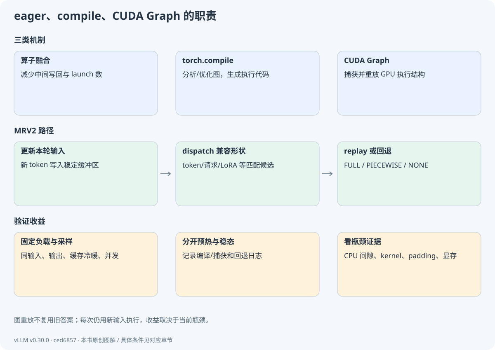
18.4 一个可证伪的 A/B 实验
在 A100 固定同一模型、相同 prompt IDs、输出长度、并发、缓存冷暖、采样和版本。先 eager，再允许图，分别完成预热后测量。保留启动日志证明路径实际开启；记录 TTFT、输出吞吐、每 token 时间、图内外覆盖、显存开销。每组重复并报告分布，避免只取最好一次。
若图配置降低了平均时间但 p99 变差，可能因形状回退、补齐或负载波动；若完全无差异，也可能瓶颈在大 GEMM/带宽而非 launch。先用证据定位，再提出优化。
停一下，自己想一想图重放采用相同结构，是否就会得到第一次的输出？
不会。每轮先更新输入缓冲区，再执行对应结构。它重用执行组织，仍然计算本轮输入。
融合、编译和图重放各有职责。是否更快，应看实际路径和当前瓶颈，而不是只看开关名称。
理解检查 · graph replay 为什么能处理新的 token？
捕获的是执行结构和缓冲区使用方式；运行前将本轮输入写入合适缓冲区，再执行相同结构，并非返回旧结果。
理解检查 · 图越大是否总是更好？
不一定。捕获兼容性、内存、动态性、padding 和边界限制会改变收益，需要针对工作负载测量。
理解检查 · eager 与图对照最关键的两个检查是什么？
配置是否真正改变了执行路径，以及输入/输出长度、缓存状态、预热等条件是否一致；否则无法归因。
单卡执行链已经完整。多卡会改变张量归属、通信和进程边界，下一章逐个展开。
回看本章的目标与输入输出
目标是根据源码与日志分辨 eager、torch.compile、图捕获/重放，并提出一个能隔离开销来源的实验。
本章交接
带着什么来：正确的设备输入与执行路径
本章怎样处理：区分融合/编译/捕获，选择兼容图
交给下一步：可解释的图重放或回退路径
五、架构扩展与性能路径 · 19
TP、PP、DP、EP：多卡架构地图
这一章，从一个问题开始把一张卡换成两张卡，到底切开了什么？
可以让两张卡各处理一条请求，也可以让它们合作计算同一层。还可以把不同层或不同专家分开。先明确切分对象，再推导每张卡拿什么、传什么。
19.1 先问切的是哪个维度
TP 把单层的权重/计算分给多个 rank；PP 把不同层分给不同阶段；DP 放置多个服务副本并分配请求；EP 将 MoE 专家分配给不同设备。一个系统可组合多种并行，进程数和通信组因此由拓扑共同决定。
DP 副本通常有各自模型与请求 KV，不能把副本增加误解为单请求天然拥有更大显存。PP 阶段持有自己层的权重与 KV，中间激活跨阶段传递。TP 的张量切分与 KV 头分布还取决于模型。
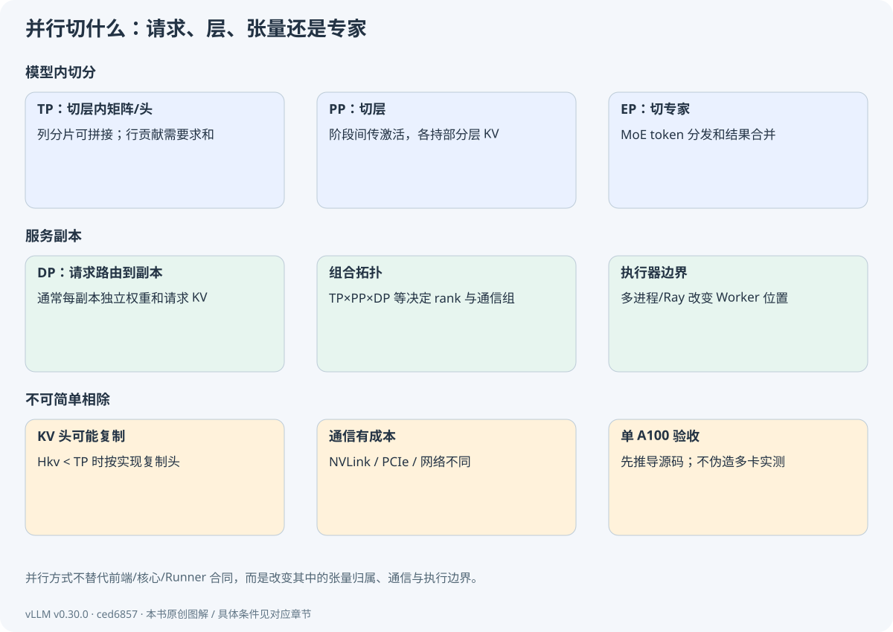
19.2 用两个数算清列并行和行并行
先不看大矩阵。令 X=[1,2]，W 的两行分别为 [3,4] 和 [5,6]。普通乘法得到 Y=[1×3+2×5,1×4+2×6]=[13,16]。
现在把 W 按列分到两张卡。卡 0 拿第一列 [3,5]，算出 13；卡 1 拿第二列 [4,6]，算出 16。这两个结果属于不同的输出位置，需要时可以拼起来。这就是列并行的基本思路。
如果改成按行分，卡 0 拿 X 的第一个数 1 与 W 的第一行，算出 [3,4]；卡 1 拿 2 与第二行，算出 [10,12]。它们都是同一输出的部分贡献，必须相加：[3,4]+[10,12]=[13,16]。
| 怎么切 W | 各卡算到什么 | 怎样形成完整结果 |
|---|---|---|
| 切输出列 | 不同输出位置 | 按需要拼接 / gather，或继续保留分片 |
| 切输入行 | 同一输出的部分和 | 求和 / reduce |
推广到 X[T,D]、W[D,F]：列并行切 F，得到本地 [T,F/TP]；行并行切 D，各自执行 XiWi，再按约定汇总。实际层还要核对张量布局、bias、量化和通信条件。
QKV、o_proj 与 MLP 会按后续层的需要配套选择布局。某层的本地输出少了一部分维度，先问“它是否仍是分片、下一层期待什么”，再判断是否需要 gather。
把这一步对应到源码ColumnParallelLinear
对照小例子找输出维分片和 gather_output。想一想：如果下一层直接消费分片，为什么不必马上拼回完整张量？
vllm/model_executor/layers/linear.py · L429–L625 · 固定 commit
在这里展开真实代码选段
这里只展示 L429–L454；完整函数至 L625，请打开本地源码阅读全部分支。
429 @PluggableLayer.register("column_parallel_linear")
430 class ColumnParallelLinear(LinearBase):
431 """Linear layer with column parallelism.
432
433 The linear layer is defined as Y = XA + b. A is parallelized along
434 its second dimension as A = [A_1, ..., A_p].
435
436 Args:
437 input_size: first dimension of matrix A.
438 output_size: second dimension of matrix A.
439 bias: If true, add bias.
440 gather_output: If true, call all-gather on output and make Y available
441 to all GPUs, otherwise, every GPU will have its output
442 which is Y_i = XA_i
443 skip_bias_add: This was added to enable performance optimizations where
444 bias can be fused with other element-wise operations. we
445 skip adding bias but instead return it.
446 params_dtype: Data type for the parameters.
447 quant_config: Quantization configure.
448 prefix: The name of the layer in the state dict, including all parents
449 (e.g. model.layers.0.qkv_proj)
450 return_bias: If true, return bias together with outputs in forward pass.
451 disable_tp: If true, weights matrix won't be sharded through tp rank.
452 tp_rank: Override the tensor-parallel rank used for sharding. Defaults to
453 the global TP rank. Used to shard at a coarser granularity than one
454 shard per rank (see ``DCPGroupColumnParallelLinear``).把这一步对应到源码RowParallelLinear.forward
找本地 apply 与 all-reduce 分支。这里对应的是部分贡献求和，不是把两个输出简单接起来。
vllm/model_executor/layers/linear.py · L1757–L1783 · 固定 commit
在这里展开真实代码选段
这里只展示 L1757–L1782；完整函数至 L1783，请打开本地源码阅读全部分支。
1757 def forward(
1758 self,
1759 input_,
1760 ) -> torch.Tensor | tuple[torch.Tensor, Parameter | None]:
1761 if self.input_is_parallel:
1762 input_parallel = input_
1763 else:
1764 split_input = split_tensor_along_last_dim(
1765 input_, num_partitions=self.tp_size
1766 )
1767 input_parallel = split_input[self.tp_rank].contiguous()
1768
1769 # Matrix multiply.
1770 # Only fuse bias add into GEMM for rank 0 (this ensures that
1771 # bias will not get added more than once in TP>1 case)
1772 bias_ = None if (self.tp_rank > 0 or self.skip_bias_add) else self.bias
1773 output_parallel = self.quant_method.apply(self, input_parallel, bias_)
1774
1775 if self.reduce_results and self.tp_size > 1:
1776 output = tensor_model_parallel_all_reduce(output_parallel)
1777 else:
1778 output = output_parallel
1779
1780 if not self.return_bias:
1781 return output
1782 output_bias = self.bias if self.skip_bias_add else None19.3 KV 不能无条件除以 TP
Qwen3Attention.__init__ 区分 KV 头数大于等于 TP 与小于 TP：前者可按组分片，后者可能复制 KV 头。故“模型 KV 总字节/TP”只在合适切分条件下成立。PP、滑窗和混合层会进一步改变各 rank 缓存规格。
GPU 拓扑也影响通信成本。同样的卡数，NVLink、PCIe、跨节点网络与 rank 映射会影响延迟。TP 可以减小单卡权重压力，却增加层间通信；小模型/小批时通信可能抵消收益，不能把多卡视作固定线性加速。
把这一步对应到源码Qwen3Attention.__init__
重点核对 total_num_heads、total_num_kv_heads、tp_size 与 num_kv_heads=max(...) 的逻辑。
vllm/model_executor/models/qwen3.py · L66–L151 · 固定 commit
在这里展开真实代码选段
这里只展示 L66–L91；完整函数至 L151，请打开本地源码阅读全部分支。
66 def __init__(
67 self,
68 hidden_size: int,
69 num_heads: int,
70 num_kv_heads: int,
71 rope_parameters: dict,
72 max_position: int = 4096 * 32,
73 head_dim: int | None = None,
74 rms_norm_eps: float = 1e-06,
75 qkv_bias: bool = False,
76 cache_config: CacheConfig | None = None,
77 quant_config: QuantizationConfig | None = None,
78 prefix: str = "",
79 attn_type: str = AttentionType.DECODER,
80 dual_chunk_attention_config: dict[str, Any] | None = None,
81 per_layer_sliding_window: int | None = None,
82 ) -> None:
83 super().__init__()
84 self.hidden_size = hidden_size
85 tp_size = get_tensor_model_parallel_world_size()
86 self.total_num_heads = num_heads
87 assert self.total_num_heads % tp_size == 0
88 self.num_heads = self.total_num_heads // tp_size
89 self.total_num_kv_heads = num_kv_heads
90 if self.total_num_kv_heads >= tp_size:
91 # Number of KV heads is greater than TP size, so we partition19.4 进程与输出边界如何变化
多进程执行器建立 Worker 集群；模型执行涉及通信组，PP 最后阶段负责产生 logits/采样，再按协议把结果传给核心。DP 还需要请求路由与协调；EP 引入专家 token 分发与合并。前端→核心→输出处理的责任仍然存在，但内部不再是 UniProcExecutor 的直接对象调用。
检查时画两个图：单卡 TP1 的真实最小进程边界；TP2×PP2 的概念层/张量分布。后者必须标明是架构推演而非已实测部署，不要在单卡上执行并等待不存在的第二张卡。
TP、PP、DP、EP 分别改变张量、层、请求副本和专家的归属。每种切法都带来相应的通信与缓存约束。
理解检查 · DP=2 与 TP=2 对单个请求的模型计算有何差别？
DP 通常选择一个副本处理该请求；TP 让一个模型副本的各层由多个 rank 合作，需通信。
理解检查 · 行并行的本地输出为何通常相加而非拼接？
它们是同一输出维上不同输入维部分的乘积贡献，矩阵乘法要求求和。
理解检查 · 单卡能否完成本章学习检查？
能完成张量推导、进程图和源码条件分析；不能声称完成真实多卡通信/性能检查，多卡实验留待资源可用。
架构骨架已经覆盖单卡与分布式。下一章把量化、投机、多模态等扩展放回对应责任层。
回看本章的目标与输入输出
你目前只有单 A100，本章先做纸面张量推导与源码阅读。多卡命令属于以后有资源时的扩展，不要求现在伪造实验。
本章交接
带着什么来：单卡执行图与矩阵形状
本章怎样处理：按请求/层/张量/专家切分并明确通信
交给下一步：多 rank 的所有权与通信地图
五、架构扩展与性能路径 · 20
扩展如何接入，而非另造一套引擎
这一章，从一个问题开始加入一种优化后，原来的请求流程哪些地方必须跟着改？
例如把 KV 改成低精度：容量可能变化，写入与读取要使用相容格式，Attention 后端还得支持它。我们用这类问题，把常见扩展放回已经学过的架构。
20.1 权重、KV 与激活量化是不同对象
权重量化影响参数存储和线性层执行；KV 量化影响缓存容量、读写与 Attention 的反量化/缩放；激活量化影响中间张量和算子路径。某模型能加载低位权重，不推出 KV 同时低位。收益还取决于硬件内核支持、反量化成本和质量要求。
量化配置通过模型层/权重加载与后端选择进入执行路径。研究需比较相同质量约束和真实内核，而非只用理论字节数比。单 A100 不支持所有新硬件低精度指令；选择路线前核对支持矩阵与日志。
把这一步对应到源码QuantizationConfig
阅读配置到 quant method 的抽象接口，理解它如何影响不同层；此处不是所有量化算法的实现教程。
vllm/model_executor/layers/quantization/base_config.py · L100–L282 · 固定 commit
在这里展开真实代码选段
这里只展示 L100–L125；完整函数至 L282，请打开本地源码阅读全部分支。
100 class QuantizationConfig(ABC):
101 """Base class for quantization configs."""
102
103 _ignore_unexpected_suffixes = (
104 ".q_scale",
105 ".k_scale",
106 ".v_scale",
107 ".q_zero_point",
108 ".k_zero_point",
109 ".v_zero_point",
110 )
111 """Suffixes of quantization parameters that may be present in the checkpoint but
112 not in the model, and should be ignored if unexpected during loading. These are used
113 after remapping, so should be in vLLM format (e.g. .q_scale, not .q.scale)."""
114 online_quantization_config: "OnlineQuantizationConfig | None" = None
115
116 def __init__(self):
117 super().__init__()
118 # mapping is updated by models as they initialize
119 self.packed_modules_mapping: dict[str, list[str]] = dict()
120
121 @abstractmethod
122 def get_name(self) -> QuantizationMethods:
123 """Name of the quantization method."""
124 raise NotImplementedError
125 20.2 投机解码修改“每步一个输出”的假设
草稿模型或其他 proposer 提出候选，目标模型验证多个位置，接受部分候选并必要时采样修正。严格保持目标分布需要正确的接受/拒绝算法；简单比较 argmax 或直接保留所有草稿并不等价。
调度增加 spec token 和 lookahead 容量，Runner 增加验证位置与输出长度，Scheduler 在回填时修正未接受区域的进度和占位，缓存只发布可靠部分。可能每步输出多个 token，也可能拒绝很多而收益差。不能只报接受率，不报额外模型成本和端到端吞吐。
把这一步对应到源码SpeculativeConfig
辨认 proposer 类型、候选数量与配置约束；算法研究还需继续追对应 proposer 和 rejection sampler。
vllm/config/speculative.py · L374–L1966 · 固定 commit
在这里展开真实代码选段
这里只展示 L374–L399；完整函数至 L1966，请打开本地源码阅读全部分支。
374 @config
375 class SpeculativeConfig:
376 """Configuration for speculative decoding."""
377
378 enforce_eager: bool | None = None
379 """Override the default enforce_eager from model_config"""
380 # General speculative decoding control
381 num_speculative_tokens: int = Field(default=None, gt=0) # type: ignore[assignment]
382 """The number of speculative tokens, if provided. It will default to the
383 number in the draft model config if present, otherwise, it is required."""
384 model: str | None = None
385 """The name of the draft model, eagle head, or additional weights, if
386 provided."""
387 method: SpeculativeMethod | None = None
388 """The name of the speculative method to use. If users provide and set the
389 `model` param, the speculative method type will be detected automatically
390 if possible, if `model` param is not provided, the method name must be
391 provided.
392
393 If using `ngram` method, the related configuration `prompt_lookup_max` and
394 `prompt_lookup_min` should be considered."""
395 draft_tensor_parallel_size: int | None = Field(default=None, ge=1)
396 """The degree of the tensor parallelism for the draft model. Can only be 1
397 or the same as the target model's tensor parallel size."""
398 tensor_parallel_size: int | None = None
399 """Users should pass "draft_tensor_parallel_size". This parameter's purpose is to20.3 LoRA、多模态与 MoE
LoRA 给同一基础模型选择不同 adapter，影响批混合、权重侧执行和缓存身份，不能跨不兼容 adapter 复用 KV。多模态输入增加媒体预处理、encoder 预算、特征/占位映射和缓存；并非所有内容都先变成文本 token。MoE 层则引入路由、专家容量和 EP 通信。
这些特性分别扩展输入数据约定、调度资源和执行状态。研究者不能只改 Scheduler 的 token 预算，就假设特殊输入能安全任意切分。例如图像占位范围、encoder 预算和模型约束可能要求某些段作为整体安排。
把这一步对应到源码test_schedule_partial_requests
官方多模态测试展示 encoder 预算如何使部分请求被切分或本轮不调度；RUNNING 不等于每步必算。
tests/v1/core/test_scheduler.py · L349–L409 · 固定 commit
在这里展开真实代码选段
这里只展示 L349–L374；完整函数至 L409，请打开本地源码阅读全部分支。
349 def test_schedule_partial_requests():
350 """Test scheduling behavior with partial requests.
351
352 This test verifies that:
353 1. The scheduler can handle multiple partial requests in a single step when
354 constrained by encoder budget.
355 2. A request in RUNNING state may be unscheduled in subsequent steps if
356 there is insufficient encoder budget.
357 """
358 scheduler = create_scheduler(
359 model="llava-hf/llava-1.5-7b-hf",
360 max_num_batched_tokens=1024,
361 )
362 mm_positions = [[PlaceholderRange(offset=100, length=600)] for _ in range(3)]
363 requests = create_requests(
364 num_requests=3,
365 num_tokens=800,
366 mm_positions=mm_positions,
367 )
368 for request in requests:
369 scheduler.add_request(request)
370
371 output = scheduler.schedule()
372 assert len(output.scheduled_new_reqs) == 3
373 assert output.scheduled_cached_reqs.num_reqs == 0
374 assert len(output.finished_req_ids) == 020.4 P/D 分离与远程 KV
Prefill/Decode 分离将两类工作放到不同实例，prefill 的 KV 需传给 decode 端。收益可能来自资源专门化和排队隔离，成本是传输、布局兼容、准入、失败恢复和生命周期。它不等于同一个服务里启用 chunked prefill。
KV connector 在 Scheduler 与 Worker 两侧都有职责：前者协调匹配与分配，后者执行/等待设备侧搬运，完成状态回到引擎。核心存在 WAITING_FOR_REMOTE_KVS 等状态，说明“num_computed 已前移”在传输未完成时也不能当作可读取证明。
把这一步对应到源码KVConnectorBase_V1
先读 scheduler/worker 角色划分与连接器接口，深入时再选择具体传输实现。此书不声称逐行覆盖全部连接器。
vllm/distributed/kv_transfer/kv_connector/v1/base.py · L185–L760 · 固定 commit
在这里展开真实代码选段
这里只展示 L185–L210；完整函数至 L760，请打开本地源码阅读全部分支。
185 class KVConnectorBase_V1(ABC):
186 """
187 Base class for KV connectors.
188 """
189
190 @property
191 def supports_divergent_local_hybrid_hits(self) -> bool:
192 """Whether external hits can complete divergent local hybrid hits.
193
194 A capable connector restores lagging recurrent state when the local
195 full-attention group reaches a deeper boundary. Defaults to False.
196 """
197 return False
198
199 @property
200 def requires_kv_delivery(self) -> bool:
201 """Whether this connector hands off KV that must be reliably delivered.
202
203 If True, a request preempted while its hand-off is still pending is
204 recomputed rather than allowed to finish and hand off blocks that the
205 preemption already freed. Defaults to the producer role, since only a
206 producer hands KV off when a request completes. Best-effort caches
207 return False, as a dropped save is just a future cache miss.
208 """
209 return self._kv_transfer_config.is_kv_producer
210 20.5 混合缓存和研究边界
滑窗 Attention 可丢弃不再可见的历史；Mamba 类状态不是普通逐 token Dense KV。Hybrid coordinator 根据组与规格安排内存，本版本特定 Mamba 对齐路径支持部分前缀/COW。此时用单一 b、单层相同布局、所有历史永远保留的图会失真。
本章检查是任选一种扩展，填写“输入变化、调度变化、缓存变化、Runner/内核变化、输出/正确性变化”五栏，并给出下一步源码位置。掌握完整架构不意味着已经掌握仓库每个硬件后端；知道边界和能正确定位，是深入研究的前提。
停一下，自己想一想把权重改为 INT4 后，KV 是否也自动成为 INT4？
不会。权重与 KV 是不同存储对象、不同配置和执行路径，要分别确认格式与支持。
先列输入、调度、缓存、执行、输出五个位置，再判断这项扩展改变了哪些约定。
理解检查 · 权重 INT4 是否直接意味着每 token KV 缩小到原来的四分之一？
不是。KV dtype 与权重量化是不同配置，需独立核对。
理解检查 · 投机接受率高是否一定更快？
不一定。草稿成本、验证效率、批量、内存与 CPU 管理都影响净收益，需要同负载端到端对照。
理解检查 · P/D 分离至少新增哪三类正确性问题？
KV 内容/布局与模型身份兼容、异步传输完成及失败恢复、跨实例资源所有权与安全释放；还需考虑路由和缓存统计。
下一章把架构理解转化为可靠实验：先证明测量对象和执行路径，再谈加速结论。
回看本章的目标与输入输出
本章提供完整架构的扩展地图，明确每个特性改变什么数据约定，以及深入研究前还必须补读什么。
本章交接
带着什么来：核心合同与常规模型假设
本章怎样处理：定位量化/投机/LoRA/MM/远程 KV 等改动
交给下一步：每种扩展的新增状态、依赖与补读入口
六、实验、复查与架构检查 · 21
单 A100：从可信测量到源码实验
这一章，从一个问题开始测到一次更快，怎样判断真的是自己的改动带来的？
你现在有单张 A100，可以开始做真实实验。但在计时之前，要先说明时间从哪里算到哪里、输入与输出有多少 token、实际走了哪条路径。否则一个数字很难说明问题。
21.1 先定义观察量
TTFT 是请求发出到首个可见生成输出的时间，含客户端、服务排队、输入处理和首轮执行等所采用边界内的成本。ITL 是连续可见 token 的间隔；TPOT 常用 (末 token 时间-首 token 时间)/(输出 token 数-1)，分母为零时不定义。E2E 为请求发出到完成。必须声明时间在客户端还是服务端采集。
SSE chunk 可含多个 token；字符数不是 token 数。离线 LLM.generate 返回所有结果后才记录的时间，只能用于整批完成/吞吐，不能伪称单请求 TTFT。成功完成的输出 token/s、输入 token/s、总 token/s 也必须分开命名。
python labs/run.py metrics合成时间线 [0.20,0.24,0.31] 秒，提交时刻 0，结束 0.32：TTFT=0.20，ITL=[0.04,0.07]，TPOT=0.055，E2E=0.32。这些是定义演算，不是 A100 成绩。
21.2 A100 环境与最小实际执行
先把整个 vllm详解 目录复制到 Linux 服务器，并 cd 到该目录。使用独立环境与模型本地路径，先运行 nvidia-smi，记录 A100 是 40GB 还是 80GB、驱动、空闲状况。CPU 章节不需要先完成这一步。下面是 Linux 命令，不能照搬进当前 Windows Python；若已有学校维护的兼容 vLLM 环境，可直接核对版本后使用。
nvidia-smi
uv venv --python 3.12 .venv-vllm030
uv pip install --python .venv-vllm030/bin/python vllm==0.30.0 --torch-backend=auto
export MODEL=/absolute/path/to/Qwen3-0.6B
VLLM_USE_V2_MODEL_RUNNER=1 .venv-vllm030/bin/python labs/a100_offline.py --model "$MODEL" --out results/a100.json安装命令依据 v0.30.0 官方 GPU 安装文档，需先安装 uv 并核对驱动与 wheel 兼容性。脚本计时包围阻塞的 LLM.generate；不把前端进程的 CUDA synchronize 当作跨进程同步。模型需事先从官方来源获取并固定 revision，网络不通时使用已准备的本地目录。脚本关闭 async、前缀缓存和图，TP=1，显存利用率 0.7，max_model_len=2048，预算 256，max_num_seqs=8。它打印实际模板 IDs、完整配置、软件/GPU 信息及每次整批耗时。若安装或 Runner 支持不满足，保留报错和配置并定位，不应悄悄换版本后继续声称完成同一实验。
检查：实际版本是 0.30.0；启动日志确认 MRV2；输出包含至少一个非空 token 序列及 finish_reason；重复运行的负载可复查。真实 Qwen 输出不要求是“鱼”。脚本可改变并发和 prompt 重复数，但不报告伪 TTFT。
21.3 按变量建立四组实验
| 组别 | 固定项 | 只改变的变量 | 应保存的证据 |
|---|---|---|---|
| 形状组 | 模型、采样、缓存/图/async 设置 | prompt 长度、并发、输出上限 | 实际输入/输出 token 数、批耗时、显存 |
| 缓存组 | 输入集合、执行路径 | APC 开关、冷/热状态 | 命中 token、时间、重置边界 |
| 执行组 | 相同负载和缓存状态 | eager/图，之后单独切 async | 启动日志、图覆盖、CPU/GPU 时间 |
| 压力组 | 模型和采样 | 并发、长度至 KV 紧张 | 抢占、等待、完成率、尾延迟 |
每组先暖机再测，至少重复 5 次，保留全部样本，报告中位数与分位数。学校服务器可能共享，应记录干扰并尽可能隔离。没有达到配置长度的样本，不能直接当成同样长序列做公平比较。
21.4 从官方测试学习正确性约束
test_stop_string 使用 mock 核心构造输出，验证前端字符串停止、内部 abort 与外部 ID 返回。test_non_async_abort_defers_via_last_sched_seq 验证在途取消不能提前归还块。它们不是吞吐测试，而是把复杂时序压缩成可验证的不变量。
在完整官方 checkout 的开发环境中，可按固定 commit 阅读并运行对应测试。选择性快照不具备完整依赖，以下命令必须在完整仓库中执行；GPU/依赖要求也需看 fixture。首次学习先读 setup/action/assert，再解释它防止的真实故障。
python -m pytest tests/v1/core/test_deferred_block_free.py -k non_async_abort_defers_via_last_sched_seq -q
python -m pytest tests/v1/engine/test_output_processor.py -k stop_string -q把这一步对应到源码test_stop_string
检查 include_stop_str_in_output、内部 ID abort 和外部 ID 收集三种断言；不要只看测试名。
tests/v1/engine/test_output_processor.py · L867–L1004 · 固定 commit
在这里展开真实代码选段
这里只展示 L867–L892；完整函数至 L1004，请打开本地源码阅读全部分支。
867 @pytest.mark.parametrize("include_stop_str_in_output", [True, False])
868 @pytest.mark.parametrize("num_sample_logprobs", [None, NUM_SAMPLE_LOGPROBS_UNDER_TEST])
869 def test_stop_string(
870 include_stop_str_in_output: bool,
871 num_sample_logprobs: int | None,
872 dummy_test_vectors,
873 ):
874 output_processor = OutputProcessor(dummy_test_vectors.tokenizer, log_stats=False)
875
876 # Make N requests.
877 request_id_list = [
878 f"request-{idx}" for idx in range(len(dummy_test_vectors.prompt_strings))
879 ]
880 requests = [
881 EngineCoreRequest(
882 request_id=request_id_list[idx] + "-int",
883 external_req_id=request_id_list[idx],
884 prompt_token_ids=prompt_tokens,
885 mm_features=None,
886 arrival_time=0,
887 lora_request=None,
888 cache_salt=None,
889 data_parallel_rank=None,
890 sampling_params=SamplingParams(
891 skip_special_tokens=False,
892 spaces_between_special_tokens=False,21.5 研究记录应能否定自己的猜想
用一句可证伪假设开头，如“在固定短 decode 负载下，CPU 提交间隙占端到端时间显著比例”。先给能推翻它的观察：若 GPU 已满且图开关无影响，就不支持当前解释。记录原始数据、环境、命令、日志、异常样本和结论范围。
不要在第一周同时修改调度、缓存和 kernel。先复现基线，再以一个变量的实验理解系统。科研的创新点应建立在可定位瓶颈和正确性约束上，而非功能名组合。
停一下，自己想一想离线接口直到整批完成才返回，你用这段耗时能算出首 token 到达时间吗？
不能。没有采集首 token 的时刻，就只能用它分析整批延迟或按声明边界计算吞吐。
先固定测量边界和负载，保留原始结果，再控制一个变量做比较。模拟结果与 GPU 实测分别标明。
理解检查 · 为什么离线脚本不能直接给 TTFT？
LLM.generate 在整批完成后返回，提交与返回时间没有首 token 到达时刻；只能测整批延迟/吞吐。
理解检查 · 输出长度由 max_tokens=128 设置，是否每次必然生成 128 个？
不一定，EOS/stop 等可提前终止。比较时要记录真实输出长度，必要时采用明确的长度控制并说明语义变化。
理解检查 · 失败、超时样本能否从吞吐统计中静默删除？
不能。应报告完成率和错误，说明吞吐分子、测量时窗及是否包含失败；否则结果不可复查。
最后一章用架构考试收束：能否从症状走回具体状态和函数，而不仅复述优化名词？
回看本章的目标与输入输出
本章提供可执行实验顺序和检查格式。CPU 实验已可在本机运行；GPU 脚本需你在 Linux A100 环境执行，本教材不伪造实测数据。
本章交接
带着什么来：完整架构认识与单 A100 资源
本章怎样处理：固定边界、建立基线、控制变量、保留数据
交给下一步：可复查测量，而非未经证据的加速结论
六、实验、复查与架构检查 · 22
毕业作业：重建完整架构与诊断
这一章，从一个问题开始如果把这套架构讲给同学听，你能让一条请求从头走到尾吗？
准备一张白纸。先放用户与 GPU，再补齐它们之间的对象、消息和状态。画不出来的地方，就是值得回去找一次源码证据的位置。
22.1 不看教材画六层图
第一层：HTTP/离线入口、渲染与 Tokenizer。第二层：AsyncLLM、输入输出处理器、collector 和客户端。第三层：EngineCore 循环、请求表、调度器和 KV 管理。第四层：Executor/Worker、启动与设备资源。第五层：Runner 状态、输入打包、Attention 元数据、模型、采样。第六层：GPU 权重、KV、图、内核及多卡通信。
在图中标出进程边界、CPU/GPU 边界、消息类型、请求 ID、输入输出、状态拥有者。再用另一种颜色画返回链与取消链。若你把 Worker 画成每种配置都独立进程，或把 OutputProcessor 放进 GPU，应回前文复查。
22.2 把 A 的两轮过程完整讲出来
不用跳过中间层：教学 IDs 提交 → 前端登记 → ADD → 核心 Request WAITING → schedule A3 → 分配块并提前记账 → Runner 持久状态/输入元数据 → 模型写 KV 与 hidden → logits/采样鱼 → 核心更新请求记录并输出 → 前端解码 → 下一轮 A1 输入鱼 → 采样 EOS → 核心结束、安全回收 → Worker 零 token 清理。
每一步写“来自上一步的输入”和“交给下一步的输出”，再写至少一个状态变化。检查必须提到：鱼在下一轮才获得 KV；EOS 不再前向；computed 会提前记账；前端缓存命中计数不是全部 KV 长度。
22.3 五道架构诊断题
题一：文本正确，但两条并发请求的结果偶尔对调。先检查请求 ID、idx_mapping、req_id_to_index 与输出路由，再查模型。题二：GPU 显存长期占用高但新请求仍可运行。先看常驻池和 ref/free，而不是断言泄漏。题三：长输入负载使短输出等待变长。分析队列、prefill chunk、预算和 KV 压力，而非只改温度。
题四：取消后偶现别的请求输出异常。检查在途块释放、缓冲区复用和 stale 输出，而非仅在 API 添加 try/except。题五：开图后没有提速。检查路径实际选择、形状命中、padding、预热与瓶颈证据，不能用“CUDA Graph 失效”替代分析。
22.4 评分标准
| 维度 | 分值 | 通过要求 |
|---|---|---|
| 边界与所有权 | 20 | 进程/设备边界正确，知道谁持有哪份状态 |
| 完整数据流 | 25 | 文本→IDs→计划→张量→logits→IDs→文本连续 |
| 调度与缓存 | 20 | 计数、块地址、命中/引用/安全释放准确 |
| 执行与扩展 | 15 | 能区分 Runner、Attention、图、并行和扩展数据约定 |
| 证据与实验 | 20 | 固定版本、可运行命令、原始结果与边界清楚 |
建议总分至少 80，且不允许出现提前覆盖在途 KV、跨请求 Attention 混读这类正确性错误。给自己的图逐项找源码证据；无法定位的框先标成待确认。
22.5 从学架构走向研究
通过检查后，再选择一条技术路线深入：调度/服务、KV/内存、Attention/kernel、编译/执行、分布式通信或量化/投机。每条路线都要保留其他层的正确性数据约定。先复现一个基线和一个可解释瓶颈，再阅读该问题最新论文并建立对照。
参考教程的价值是循序渐进、固定源码、实验与练习形成闭环。本书沿用这种教学方法，技术结论以 vLLM 官方固定源码、设计文档和论文为证据。你现在应能找到问题在哪层，而不再把所有优化都归成“模型跑快一点”。
停一下，自己想一想你的图里如果只有“API → GPU → API”，最先补哪几步？
先补文本整理、核心请求/调度、KV 管理、Runner 输入准备、采样与前端解码，再补消息与清理路径。
掌握架构的标志是能够连续解释输入、状态、输出和资源生命周期，并能为关键箭头找到源码证据。
理解检查 · 不看目录，写出在线请求从路由到模型再回文本的十二个以上节点。
可用第 6、8、12、13、15、16 章核对。必须覆盖渲染、输入处理、客户端消息、核心调度、KV 分配、Runner 打包、模型/采样、核心更新请求记录、前端增量解码与停止；只列入口和 GPU 还需要补上中间步骤。
理解检查 · 如果研究 KV 量化，哪些层必须同时检查？
至少包括缓存规格/容量计算、分配与传输身份、写入/读取和 scale 布局、Attention 后端支持、质量与性能测试，分布式和 APC 也可能受影响。
理解检查 · 下一次遇到不懂的分支，如何继续而非重新从头读仓库？
固定配置与症状，定位责任层，找调用者—被调方—结果消费者闭环，补状态图，选官方测试并做最小复现，然后才修改代码。
正文结束后，继续阅读附录的逐行导读、术语表和实验清单；它们用于复查，不替代前面的连续学习。
回看本章的目标与输入输出
完成标准是你能独立解释真实请求的生命周期，定位性能/正确性问题，并知道扩展会改变哪些假设。
本章交接
带着什么来：前面各章的图、字段和实验
本章怎样处理：独立重建、手推、定位故障并找证据
交给下一步：完整架构答辩与后续研究路线
附录、证据与复习 · 23
逐行导读、术语和阅读路线
这一章，从一个问题开始读过一遍以后，怎样用最少的翻查把关键机制重新想起来？
这份附录用于复习。先看 EngineCore.step 的完整小函数，把每句放回已经学过的流程；再按目录、术语和练习清单回查需要补足的部分。
A.1 EngineCore.step 的逐句责任
下方源码卡片包含完整函数；本地源码页还能查看相邻上下文。先自行标注，再展开本节解释。
把这一步对应到源码EngineCore.step
单批次主线完整函数，固定 commit；本节说明正常文本生成分支。
vllm/v1/engine/core.py · L589–L619 · 固定 commit
在这里展开真实代码
本卡片展示完整符号范围。
589 def step(self) -> tuple[dict[int, EngineCoreOutputs], bool]:
590 """Schedule, execute, and make output.
591
592 Returns tuple of outputs and a flag indicating whether the model
593 was executed.
594 """
595
596 # Check for any requests remaining in the scheduler - unfinished,
597 # or finished and not yet removed from the batch.
598 if not self.scheduler.has_requests():
599 return {}, False
600 scheduler_output = self.scheduler.schedule(self._should_throttle_prefills())
601 future = self.model_executor.execute_model(scheduler_output, non_block=True)
602 grammar_output = self.scheduler.get_grammar_bitmask(scheduler_output)
603 with (
604 self.capture_iteration_details(scheduler_output) as iteration_details,
605 self.log_error_detail(scheduler_output),
606 ):
607 model_output = future.result()
608 if model_output is None:
609 model_output = self.model_executor.sample_tokens(grammar_output)
610
611 # Before processing the model output, process any aborts that happened
612 # during the model execution.
613 self._process_aborts_queue()
614 engine_core_outputs = self.scheduler.update_from_output(
615 scheduler_output, model_output
616 )
617 self._attach_iteration_details(engine_core_outputs, iteration_details)
618
619 return engine_core_outputs, scheduler_output.total_num_scheduled_tokens > 0从 has_requests() 开始：无请求/清理则返回空输出和未执行标志。schedule() 不计算模型，它构造 SchedulerOutput 并推进乐观计数。execute_model(...,non_block=True) 提交计划，得到未来对象。get_grammar_bitmask 准备采样合法集合；普通无语法请求走空约束。
future.result() 取得执行结果。若 result is None，调用 sample_tokens(grammar_output) 获取采样输出；这是 forward/sample 分离协议。_process_aborts_queue() 在更新请求记录前处理取消，避免把迟到结果重新当有效输出。update_from_output(plan,result) 必须使用同一轮 plan，才能扣对在途计数和定位请求。最后附加调度统计并返回，本轮是否真正安排 token 由 total_num_scheduled_tokens 判断。
用 A 的 prefill 代入每句：plan={A:3}；提前 computed=3；future 对应模型本轮；sample 返回 token 8；更新请求记录后 all_token_ids=[11,10,7,8]、in_flight=0。用最后清理轮代入则 total=0，仍可能需要 Worker 状态清理。
| 真实行号 | 输入 → 操作 → 输出 | 此处不能误读成什么 |
|---|---|---|
| 598–599 | 询问 Scheduler 是否还有请求/待清理；没有则返回 | 不是只检查 RUNNING 数 |
| 600 | 请求状态 → schedule → 本轮 SchedulerOutput | 不是执行模型 |
| 601 | 计划 → execute_model(non_block=True) → Future | 不是已收到 token |
| 602 | 本轮计划 → grammar bitmask → 采样约束 | 普通无语法请求不需要生成语法 |
| 603–606 | 建立统计与错误上下文 | 不是另一次模型计算 |
| 607 | Future → result → forward 输出或 None | 此处是结果取得点 |
| 608–609 | 若 None，继续 sample_tokens → ModelRunnerOutput | None 不是失败标志 |
| 613 | 取消队列 → 核心终止状态 | 不能等采纳迟到输出之后再忽略取消 |
| 614–616 | 原计划 + 模型结果 → 核心更新请求记录/输出 | 不能配错轮次或请求行 |
| 617 | 附加迭代统计 | 不改变模型权重 |
| 619 | 输出字典 + 是否安排了 token | 清理步可有输出/状态工作却无前向 |
再读 Scheduler._update_after_schedule：1531–1534 对本轮每条请求同时增加 computed 与 in_flight；1535–1537 在 gate 开启时记录最后调度序号；1538–1543 判断是否仍是输入 chunk 和语法相关请求；1567–1568 换成新集合，而不是对旧集合 clear，因为计划仍可能引用旧集合。这最后一个 Python 对象别名细节也会影响跨轮正确性。
槽位计算另有一个实现粒度要核对：MRV2 内核用 kernel_block_size 做除法和余数，配置的 KV 分配块与后端 kernel 块可以存在布局转换。本书手算显式令两者均为 16、CP=1、普通映射开启；不能把演算公式不加条件地套到所有后端/CP 配置。
A.2 长函数如何分段，而非只看前二十行
| 函数 | 应分出的责任段 | 逐段的产物 |
|---|---|---|
| Scheduler.schedule | running、waiting、容量/准入、计划构造、提前记账 | 每请求 token 数与块增量 |
| GPUModelRunner.execute_model | 状态更新、零 token、batch/graph、inputs/attn、model、保存状态 | hidden + 待采样状态 |
| Scheduler.update_from_output | 完成序号、在途扣减、行映射、接受结果、停止/释放、输出 | 核心新状态与 EngineCoreOutput |
| OutputProcessor.process_outputs | 身份查询、统计、解码、用户输出、结束、反向 abort | RequestOutput/collector 与 abort IDs |
读每段时，先圈出写状态的语句和消费返回值的调用者，再看校验和特殊分支。假设某分支没有进入，必须写出配置理由。不要把本书源码卡片截取的开头当成完整函数；所有卡片都标明展示范围并可跳转完整源文件。
A.3 术语对照
| 术语 | 在本书中的精确定义 |
|---|---|
| prefill | 处理输入前缀的查询与 KV 建立，可拆成多个 chunk |
| decode | 在已有历史上执行新增输入并继续生成 |
| known tokens | 核心当前已知 token，包括 prompt 与已接受输出 |
| scheduled/computed | 调度覆盖的前缀进度，可能包含在途工作 |
| KV block | token 地址分配单位，不是 CUDA thread block |
| block table | 逻辑块到物理块的映射 |
| slot mapping | 本轮每个输入 token 对应的写入槽位 |
| APC | 自动前缀缓存，复用匹配前缀的 KV |
| cached request data | Worker 已知请求的更新数据约定，不等于 APC 命中 |
| Runner | 把计划变为设备输入并执行模型/采样的组件 |
| backend | 特定 Attention 等算子的实现路径 |
| fence | 用于判断在途工作已安全完成的边界 |
A.4 建议的四周阅读路线
第一周每天一组责任闭环：D1 章1–3并打印入口；D2 章4–6画提交路径；D3 章7–8跑 trace；D4 章9–11手算预算/块/引用；D5 章12跑 pack；D6 章13–16跑 attention 并讲完整返回链；D7 做第22章前两项检查。每天先回忆前一天输出如何成为今天输入。
第二周深入章17–18及相关官方测试，做源码状态手推；第三周在 A100 执行章21基线与单变量实验，补 GPU profiling；第四周学习章19–20，选择一条研究路线但暂不为了新意同时修改多层。每天产物应是图、状态表、命令结果和疑问清单之一，不是“已读多少页”。
A.5 资料与声明
教学组织参考 白木原教程，实际阅读了其 MiniMind 与 Harness 教程目录及推理/Agent Loop 示例章节，借鉴从小例子到源码、练习与实验闭环的方法；未将该网站当作 vLLM 技术事实来源。
主要技术依据为 官方固定源码、快照中的 docs/design/ 设计文档、PagedAttention 论文 与 FlashAttention 论文。正文描述以固定版本实现为准，2023 论文不是所有后续版本细节的保证。
本地执行范围：标准库 CPU 数值/控制实验、源码身份与链接检查、页面交互与版面检查。没有在这台 Windows 主机上运行 A100/vLLM GPU 基准，没有生成虚构吞吐。旧图解保存在独立入口；其教学参数与旧模拟不能混作本书真实 Runner 轨迹。
停一下，自己想一想看见一个返回值以后，读代码的下一步是什么？
回到调用者，追它如何被消费。这个值是否触发继续采样、取消、结束或后续执行，决定了它的含义。
函数名是路标。真正需要保留的是数据怎样流动、状态何时改变，以及哪些条件保证了正确性。
理解检查 · 对着完整 EngineCore.step，指出哪句真正调用模型，哪句提交 token 历史。
execute_model 提交设备执行，具体模型调用在 Runner；Scheduler.update_from_output 处理结果并更新历史。schedule 只安排并提前记账，不完成矩阵计算。
理解检查 · 如果在本书找不到某个新硬件后端，教材是否已经解释了它的全部实现？
没有。本书建立核心架构和定位方法，选定后端主线做直接源码导读。新硬件或特殊模型需沿注册、元数据、执行和测试继续验证。
理解检查 · 第一周最后应交什么，而不是交“读完了”？
一张带边界的六层架构图、一份 A 两轮字段账本、pack/prefix/attention 的复算结果，以及至少三个问题对应的源码证据。
可使用左侧搜索、源码索引和实验面板反复复查；每次改变配置，重新标出你走的分支。
回看本章的目标与输入输出
这章是一张可长期使用的复查桌：对 EngineCore.step 做细读，再把复杂函数拆成可检查的责任段。
本章交接
带着什么来：已经建立的完整请求闭环
本章怎样处理：逐句复查、查术语和安排复习
交给下一步：长期可用的源码阅读与验收清单